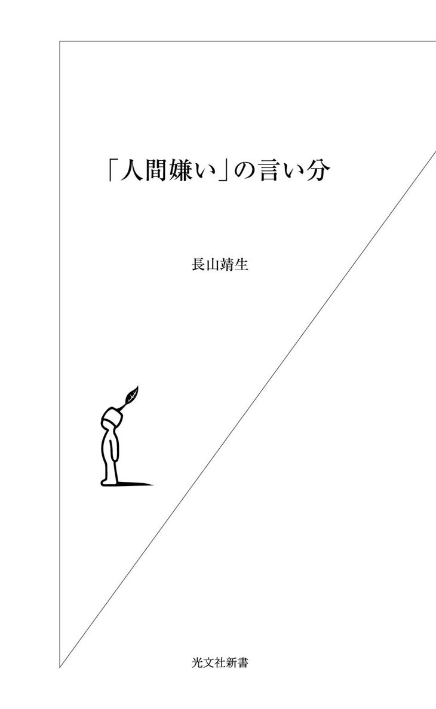
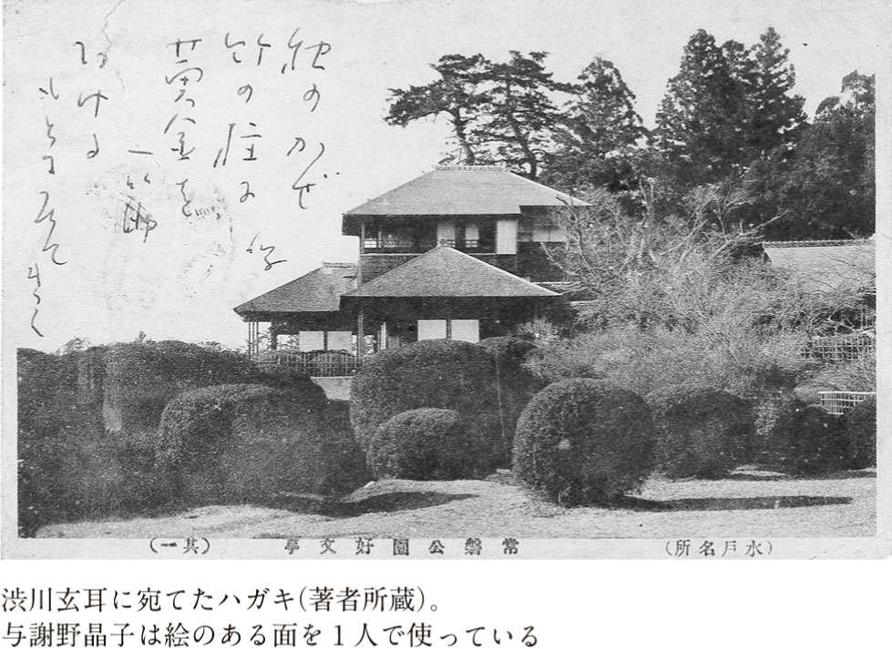
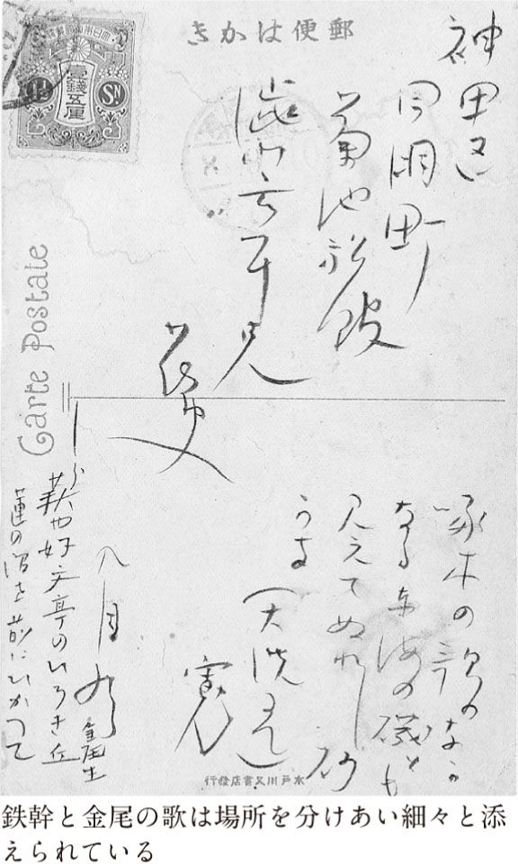
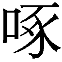

| 「人間嫌い」の言い分 | |
| 長山 靖生 | |
| (2004) | |

こんな経験はないだろうか。新聞を開くと不吉なニュースのオンパレードに腹が立つ。世の中、何かが間違っているような気がする。このままでは社会も家庭も自分自身も、どんどんじり貧になっていくようで不安だ。世間のみんなが、何だかバカに見える時がある。とはいえ、自分で何かしようという気はなく、気持ちはあっても何もできない無力感に苛まれている。
こうした要素にひとつでも心当たりがある人は、すでに「人間嫌い」と呼ばれる可能性がある。いや、陰ではもう、そういわれているかもしれない。だが、それはあなたのせいでない。悪いのは世間のほうだ。イヤな世の中がイヤになるのは、正当なことだ。イヤな世の中にあって厭世的にならないのは悪人くらいのものである。まったく、イヤな世の中になったものだ。
腹立たしいのは、なにもテレビに映し出される遠い世界ばかりではない。身辺を見渡しても、ろくなことはありはしない。なかには、自分にはいいことがあったという人もいらっしゃるかもしれないが、私の周辺にはまったくない。ああ、いやだいやだ。
そういうわけだから、荒んだ俗世間との交渉を一切断ち切って、自分一人の世界にひきこもって暮らしたいと考えるようになったとしても、あながち精神に問題があるとはいえないだろう。むしろ、これだけ世間が変なのだから、おかしくならないほうが変なくらいだ。
若者の「ひきこもり」や労働にも勉学にも意欲を失った「ニート」の急増や、中高年者などの鬱病増加は、もちろん治療可能ならば治療によって恢復をはかるのも必要だろうし、なくなったほうがいいには決まっている。だが、増える理由も分からなくはない。本来、取り除くべきは人間をそのような状況に追い込む社会病理のほうであって、素直に反応して悩んでいる人々のほうではない。
私はたぶん病的な鬱病や適応障害ではないが、もともと人付き合いが苦手で、出不精な質だった。それが歳をとるにしたがっていっそうひどくなってきた。学生時代には授業で嫌々読まされた『方丈記』が妙に心親しく思われ、隠居遁世という文字が輝いて見えるようになった。
とはいえ飯喰う人間の哀しさで、労働を含めた社会人としての最低限の付き合いを欠いては、生きてはいけない（労働しなくても生涯困らないだけの世襲財産がある方は、この際、どうか御自由にやっていただきたい。ちなみに家族を捨てて仏門に入った西行法師は、出家後も必要最低限の収入を保証するだけの荘園は保有し続けていた。安穏な隠居生活ができるのは特権階級だけなのだ）。それならば、どのくらいが現世に留まり、かつ心のやすらぎを保つための妥協点で、最低ラインなのか。うまい具合に自分らしさを保ちながら、この生き難いしがらみだらけの世の中を生き抜く道を、何とかして探れないものだろうか。
私は四十有余年、そんなことばかり考えて、日々を暮らして来た。目ざすのは、挑戦とか努力とか忍耐ではなくて、傍観とか呑気による日常生活のサバイバル作戦である。
そんな無気力方面での努力家が、ここまで生きて来られたということは、それなりに私の戦術は成功したともいえる（まあ、これから先も生き抜けるかどうかは分からないが）。ひきこもり人口百万人、フリーター人口四百五十万人といわれる今日、私程度に人付き合いが下手で、そのくせ寂しいのも嫌いというわがままな人間は、存外、多いのではないかと思われるので、この際、私の思考法や生活術、さらには尊敬する諸先輩方の逸話を披露するのも、多少は人様の役に立つのではないかとも考えられる。
世間では、人付き合いが下手で、ひきこもったり孤立したりするのは問題行動だと見られがちだ。だが、ひきこもり系を自覚する私の正直な感想としては、人付き合いを適当に避けて来たからこそ、誰も刺さず、刺されもせずにやって来れたのである。無理に他人にあわせることはない。無理な努力は、当人が必死であればあるほど、裏目に出ることになりかねない。それに「みんなと同じ」は、そんなにいいことなのか。みんなで赤信号を渡ってばかりきたから、今の日本はこのような状況になってしまったのではないか。
人間嫌いを悪いものだとばかり考えず、もっとポジティブに評価してもいいのではないか。思うに人間嫌いは「問題」ではなく、世知辛い世の中の軋轢を適当に緩和する「解答」であるかもしれない。
もしかしたら、ひきこもりの若者や鬱病の中高年層、あるいはその予備軍である繊細でまともな神経の持ち主にとって、「人間嫌い」で生きてゆくという道は、救いとなることもあるかもしれない。あるいは余計なお世話かもしれないが。
目 次
すごく恥ずかしい話をする。私は昔、文士に憧れていた。別に有名になりたいとか、お金持ちになりたいと思ったわけではない。第一、どう見ても文士は儲かりそうになかった（今も昔も）。むしろその経済状況はフリーターに近いだろう。
だが、儲からなくてもいいから、満員電車に乗らず、会社に行かず、狭い部屋のなかでボーと暮らしていたかった。これではフリーターどころか、ひきこもりである。
しばらく前、某ＮＨＫがフリーターの特集番組を組んだ際、大卒三十代のフリーターが狭いアパートの一室に新聞紙を敷き、インスタントラーメンを啜っている姿を放映した。フリーターにとって、これはかなり衝撃だったらしく、フリーター関連のホームページで、大きな議論を呼んだ。だが私にとっては、そんな姿に衝撃を受ける人がいることのほうが驚きだった。その姿は、情けないものでも悲惨なものでもなく「このまま行けば当然そうなる。むしろ他になりようのない」当たり前の状況でしかない。
フリーライター業界では、四十代オーバー・ドクターで四畳半一間のインスタントラーメン生活は、別に珍しくない。自慢じゃないが、私もそのようなものである。フリーターとフリーライターなんて紙一重なのである。いや、紙一重どころか「いつまでもこんな生活をしていてもいいのだろうか」と日々の不安と戦う生活だ。文士だって志こそあれ、経済的には苦しかったはずだ。むしろ、志がある分だけ、いっそう生活は苦しくなるのが道理。だいたい物書きは金儲けをしようと思って仕事をしているわけではないのだから、ちょっと考えれば、生活が苦しいことくらいは容易に想像がつく。にもかかわらず、作家に憧れる者は、今も昔もけっこういる。
作家に憧れる理由は人それぞれだろうが、私の場合、文士はサラリーマンと違って、グータラでも、非社交的でも、非常識でも、「文士だから」と許されているらしいという、そこのところに惹かれた（ああ恥ずかしい）。なかでも面倒な人付き合いをしなくていいというのは、小学校以来、なぜか集団生活になじめずに浮いてしまう私には、極めて魅力的な特権に思われた。
もっとも「文士だから」という括り方は、許容であると同時に排除でもある。文士は社会にとって必要不可欠の存在ではなく、余計者と見なされていた。だから共同体のルールを押しつけられない代わりに、その外部にはじかれてしまうのだが、直接、石を投げられるのでなければ、周囲から無視されて、宴会に誘われないのは、かえって好都合というのが、私の体質だった。
小学校高学年の頃、はじめて『吾輩は猫である』を読んだ時、まず感動したのは猫の飼い主である苦沙弥先生の人柄であった。彼は正月に来客があると、一緒に酒を飲まなくてはならないかもしれないと考えて眉を顰めるような人物である。書斎にこびりついている牡蠣的生活が彼の信条だ。にもかかわらず、苦沙弥先生はわずかながらも良質の友を持ち、それなりに幸福な人間関係を維持している。周知の通り、この本は元々は高浜虚子のすすめで、写生文の発表会・山会のために書きはじめたものであり、苦沙弥先生には漱石の生活が反映している（ちなみに英語のOyster は寡黙の意味で用いられることもあるが、苦沙弥先生はけっこう饒舌である。『猫』において牡蠣は、あくまで自分の領域にへばりついて動こうとしない非移動性を象徴している）。
漱石の文才も学識も、もちろん羨ましいが、それを獲得するための努力や苦悩は荷が重い。天分がないのに、天才の真似をして努力をするような殊勝にして無謀な根性は、私にはない。だが、広い世間を狭くして暮らすその人間嫌いの処世術には、いたく共鳴した。
私が抱く文士への憧れとは、非社交的な人間が、いかに自分なりの幸福というか平穏な人間関係を獲得するかという問題にかかわっていた。思えば私がギリギリ登校拒否にならずに済んだのは、学校にわずかながらも友人がいたからだった（たくさんは、いなかった）。そして社会的ひきこもりに陥らずに市民生活の最小限のお付き合いルールを低空飛行し、中年に至って、どうにか鬱病にならずに済んでいるのは、文士ではないものの人間関係の軋轢が少ない職業を、意図的に選んだ結果だったと思っている。ようするに、うまいこと逃げまくっているのだ。
現代社会は過酷な競争原理に支配されている。弱い人間に「戦え」というのは「死ね」というのと同じだ。死ぬくらいなら、負けを認めて早々にリタイアしたほうがいい。とはいえ、逃げ方くらいはうまく心得ていなければ、生き延びられないのもまた事実だ。
人生というゲームでは、うまく逃げ切れれば、負けにはならない。いや、勝ち組の人々から見れば負けは負けかもしれないが、戦い続けるよりも自分にあった生活をつかめる。そういう人間的な生き方だって、あるのである。
ところで、私がそのような自分の性格、もっと正直にいうと社会的積極性を欠いた自分の打たれ弱さを自覚できたのは、その「弱さ」をネガティブにではなく、「文士への憧れ」という形で、ポジティブにイメージできたためだった。凡庸な人間、なかんずく若者は自分の弱さを認めたがらない。薄々は気付いていても公然と認めるだけの勇気を持つ人は少ない（私だって、今だからこんな恥ずかしいことを書けるのであって、十代の頃にはカミングアウトできなかった）。
われわれの社会では、まだまだ「がんばれ」だの「努力」だの「根性」だのという美徳が横行している。それが悪いとはいわぬ。だが、がんばるのが体質的に合わない人間もいる。もしくは「がんばる」方向が、世間の要求とはずれてしまう人がいる。そういう人間に無闇にがんばりを強要するのは、犯罪を惹起しかねない憂慮すべき無分別といわねばならぬ。
人間は皆、自分なりに幸福を追求する権利がある。かつ、偏屈な人間にも適度にガス抜きをさせておかないと、結局は周囲も迷惑することになる。
文士流の生き方、人との距離の取り方から学ぶところは多い。彼らの多くは独りよがりで子供じみていて、それでいながら魅力的だ。文士の才能はこの身にはなく、また気概は学べないにしても、その生き方の美味しいところだけでも、分けてもらいたいものだ。
さらに、つらつら考えてみると、世間全体にとっても文士的な「人間嫌い」というか「半・世捨て人」の存在は、あながち無駄とはいえないきらいがある。熱しやすくて冷めやすいといわれる日本人の、しかも集団で一方向に流れて行きやすい均質社会にとって、頑なに「嫌だ」という存在、どうしても打ち解けない異物が存在することは、むしろ恩寵でさえある。だから私は人間嫌いこそは、本当はいちばん人間らしい生き方なのではないかと、ひそかに思ってもいるのである。
いきなり「人間嫌い」と、当たり前に呼んでしまったが、「人間嫌い」とはどのような存在、あるいは状況なのだろうか。別に病気ではないのだから、厳密に定義する必要はないし、定義するまでもなく、本人にはある程度自覚があるし、周囲の人々も「あの人は人間嫌いだ」と漠然と考えるある種の性格がある。
世間一般の多数意見に異議を唱えたり、みんなが多数決で決めたことに従わない人々。とはいえ、声を大にして反対したり、裏に回って多数派工作をするわけでもなく、ただむすっとして従わない人。会社やご近所にも一人やふたりは必ずいるタイプ。それが本書の主人公である「人間嫌い」だ。
もっとも、世間でのその呼ばれ方はさまざまだ。偏屈。変人。狷介。人付き合いが悪い。話し下手。ひきこもり。「おかしいんじゃないの」とまで言われることもある。本書では、それらを一括して「人間嫌い」と名称統一して扱うことにする。
「偏屈」「狷介」と混同されることからも分かるように、人間嫌いは頑なだと思われている。たしかに人間嫌いは、滅多に自説を曲げず、みんなが「それでいいんじゃないの」と投げやりに多数意見に乗っかっていくような場面で不賛成を表明したりする。だが、だからといって、人間嫌いは反対するために反対をしているわけではない。納得できないから反対しているだけだ。
逆に人間嫌いの目から見れば、世間の多数派こそが頑なに見える。「どうしてそうなのか」を問うても、誰も明確に理由を説明できないのに「そういうことになっている」「昔から決まっている」「他の人はそれでいいといっているのだから」との、理由不明の常識・習慣・多数意見を頑なに押してくる。理由が説明できないのに、同意せよとは何事か。
だが、そういう正論派は、陪審員を題材にした映画『十二人の怒れる男』ではヒーローだが、現実社会では「ウザイ」とか「暗い」とか「頑固」といわれるのである
人間嫌いだって、理由が分かって納得できれば多数意見に従うのにやぶさかではない。だが、常識に頼る、多数意見だから従うというのでは、一種の思考停止である。人間嫌いは、考えたいのだ。三人寄れば文殊の知恵というが、三人が三百人でも「異議なし」「賛成」しか発言のないシャンシャン集会では、知恵の湧きようがない。そう考えると、今の日本社会に必要なのは、人間嫌いではないかとさえ思われてくる。
また人間嫌いは、取っつきづらいと思われている。不機嫌そうな顔をしていると思われている。彼らは何が不満で、また何が嫌いなのだろうか。人間嫌いというのだから人間が嫌いなのかというと、必ずしもそうではない。むしろ彼らは、人間は好きなことが多い。ただ、人間たちが徒党を組んで集団になった時に醸し出される非人間的な臭みがいやなのである。人間嫌いは、人間関係が苦手だけれども、決して人間そのものが嫌いなわけではない。
それでも、人間嫌いは「人間が分かっていない」と世間の側からは思われている。一方これは、人間嫌いの側から言わせてもらうと、「人間が分からない」ということが分かっていると言い換えてもいいようなものだ。
たとえどんなに顔の広い人間でも、世界中の全ての人間を知っているわけではない。知らない存在、リアルな感情を抱けない対象を取り上げて「人間はみな同じだ」とか「生命の大切さ」「社会的貢献」「協調性を重視し」「グローバルな視点に立って、きめ細かいサービスを」など、歯の浮くようなお題目をいうやつらが嫌いなのである。嫌いというより「噓だろ」と思い、不気味に感じているのである。
だから実は、人間嫌いが嫌いなのは個々の人間ではない。自分の名前を持ち、自分の意見を口にする存在に対しては、人間嫌いは相応の敬意を払う。何故ならそこにいるのは「人間」という観念ではなくて、自分同様にひとりの存在として立っている個人だからだ。「人間嫌い」が嫌うのは、匿名の人間たちである。自分の意見を口にする時に、あたかもそれがみんなの意見であるかのような口振りで「私たち」といい、「人間は」とか「人類は」という主語で話す人々だ。
第一、そんなに人類が大切だと思っているのなら、美しい正論を口にする人々は私利私欲を捨てて行動しそうなものだが、そういうお題目を唱える人に限って、近所の人の悪口とか上司の陰口とかを平気で口にする。時にお題目は、意見を異にする党派の悪口を言うための枕詞かと思われるほどだ。たぶん、人間嫌い故の、私の勘違いだと思うのだが。
お題目好きの人はしばしば噂好きであり、饒舌であり、その会話の七〇パーセントは家族の愚痴と他人の悪口であり、残りは自慢話という推計があるくらいだ（長山の独断的な私的調べによる）。
ちなみに社会的協調性と陰口のあいだには、昔から密接な関係があった。たとえば『源氏物語』のなかで、高貴で自由奔放な登場人物たちが、唯一、本気で畏れるのは、神仏の罰でも天皇の怒りでもない。彼らはひとえに世間の噂になるのを畏れるのである。たとえば自分の体から生霊が抜けてゆくのを自覚した六条御息所は「さならぬことだに人の御為にはよさまのことをしも言ひ出てぬ世なれば」（大したことでなくても悪口のネタにされる世の中であってみれば）と嘆く。自分が化け物になることよりも、世間の噂になることのほうが、もっとこわいのである。
それでは他人の欠点をあれこれあげつらう噂好きの人々はそんなに立派かというと、もちろん、ぜんぜんそんなことはない。日本社会では、モラルはあたかもはしたない悪口を言い立てる口実であるかのごとくだ。それなら、気にしなければよさそうなものだが、どうも「みんなといっしょ」がいいことだと刷り込まれている人たちは、出家でもしない限り、人から笑われたり陰口をきかれることを気にして、自分が「正しい」と思うことはおろか、「こうしたい」という欲望さえも抑えて生活することになる。これでは欲求不満がたまって、生き霊にでもなるしかないだろう、と私なぞは思うのである。
人間嫌いは「空気を読めない」という風説もある。残念ながら、これは事実と思われる。人間嫌いに、常識的な配慮が欠けていることは認めねばならない。しかし彼らがまったく配慮をしないのかというと、そうではない。ずれたところでは、しているのである。ただし、それが世間の側にはなかなか見えにくい。また人間嫌いの側でも、わざわざ人に見せようとはしない。配慮とは、するものであって、見せるためのものではないと考えているからだ。
人間嫌いはシャイである。そして、本音と建て前の使い分けが下手である。このことを、より積極的に評価するなら、人間嫌いはいつも本当のことを口にし、正直であろうとし、本音と建て前のダブルスタンダードを拒否している。それが世間とずれているところである。
人間は誰しも、世に受け入れられたいと願っている。他人から理解され、認められることを望んでいる。人間嫌いだって、それは同じだ。ただし、そのような自分の望みを実現するために、生活のなかでどのような努力をし、身を処すかについて、彼らと世間一般のやり方はずれている。人間嫌いだって、他人に理解してもらおうと、それなりに努力はしているのだ。だが、その方向性が一般的ではないために、思うような結果が得られない。
世の多くの人々は、自分を受け入れてもらうために、まず他人に調子を合わせる。とはいえ、満遍なく誰とでも調子を合わせるのは不可能なので、対象を絞らざるを得ない。結果として、専ら地位の高い人、有力者、金持ちを選んでおもねることになる。相手が笑えば笑い、相手が怒ればいっしょに怒ってみせる。自分を消すことによって、彼らに引き立ててもらおうとするのだ。
処世術に長けた人は、場の空気を読むのがうまい。その場で誰がいちばん実力があるのか、どうすればその人の気に入られ、しかも他の人々の反感を買わないかを、瞬時に判断する。したがって、会話は和やかになり、商談がうまくまとまる。
人間嫌いには、そういう真似ができない。思ったことを平気で口にする。理解してもらうためには、正直がいちばんなどという、とんでもない勘違いをしている。だが事実は時に人を傷つける。顔に自信のない女性にブスと言うと、相手は怒って、頭髪に不足のある男性をハゲと罵るのは、ひと頃の「ＴＶタックル」でお馴染みの光景だった。冷静に考えれば、当人もそれを認めているのだから悪口ではないのではないかとも思うのだが、当人の自覚は納得にはつながっておらず、やっぱり怒るのである。
もっともテレビのなかの出来事は、悪口も喧嘩も、すべては予定調和の範囲内の出来事である。いわばヤラセだから、心配はいらない。だがこれを実社会でやると、犯罪を惹起することになりかねない。たとえば長崎県の小学校で、小学六年生の女児が同級生を刺し殺すという事件が起きたが、その動機は「ネットの掲示板に悪口を書かれたため」と報道された。しかし、それは本当に「悪口」だったのか、私は気になっている。被害者としては、悪口のつもりではなくて、ただ単純に感じたことを書いたとか、むしろ善意から注意してあげようとした結果が「悪口」と言われているものの内実なのではないか、と私は密かに疑っている。事実を口にできないとは、人間嫌いにとってはまことに生きにくい世の中である。
『吾輩は猫である』では、金持ちの金田夫人が苦沙弥先生の家を訪ねた際、自分が金持ちであることをひけらかして、自分が得たい情報を手に入れようとする。金田夫人は、高慢な自慢屋だが、彼女が金持ちぶる理由は、それだけではない。彼女は自分が金持ちであり権門家でもあることを示すことで、したがって自分に協力すれば、それに見合うだけの謝礼とか優遇とかを苦沙弥先生に提供できるということを、伝えようとしているのだ。金田夫人のひけらかしは「魚心あれば水心」とのメッセージである。
世間並みの発想では、金田流のギブ・アンド・テイクは、むしろ常識的なものと見られている節がある。世間は「親切―義理―返礼」の連鎖で、円滑に進んでゆく。便宜をはかってもらったら謝礼をするのは当たり前。だが、便宜をはかってやったのだから、謝礼を受け取るのは当たり前となると、ちとまずい。お礼目当ての親切となり、それが業務上知り得た事実の漏洩だの、本来なら万民に公正であるべき立場にあるにもかかわらず、義理ある人に便宜をはかったとなれば、「世間の常識」と犯罪の境界は限りなく曖昧になる。ここに日本で贈収賄事件が跡を絶たない理由があるといっても過言ではない。
政治家や官僚は、しばしば「自分たちは国のため（社会のため、公共のため）に仕事をしている」と口にする。だが、彼らは皆、報酬を受け取って仕事をしている。議員も公務員も給料をもらっているし、公務の経費は公費から支出される。つまり彼らは、給料に見合う仕事をしているという意味では「国のため」ではなく「給料のため」に仕事をしているにすぎない。
もちろんそれは別に悪いことではない。誰でも労働をするからには、その労働の対価を受け取る権利がある。にもかかわらず自分は給料のためではなくて「国のため」に仕事をしているなどという妄想を抱くから、「俺は偉い」だのと勘違いし、さらには「国に貢献しているのだから、多少の余得があっても当たり前」というつもりで、賄賂を受け取ったりするのである。彼らの意識のなかで、それは違法行為ではなく、ささやかなギブ・アンド・テイク、あるいは自分が大物である証拠と認識されている節がある。そうとでも考えなければ、今日に至るまで、何度も何度も疑獄事件や公費の不正支出が続く理由が、説明できない。
金田夫人は利益をちらつかせて「便宜をはかってくれ」と要求する。しかし苦沙弥先生は、それが気に入らない。真っ正面から「親としては娘の縁談相手がどんな人か知りたいので、あなたの門下生のことを教えてくれ」といわれたら、苦沙弥先生は応ずるのである。だが利益をちらつかせられて何かを教えたら、彼は報酬のために門下生を売ったことになる。打算のために、門下生を売ることはできないというのが、人間嫌い・苦沙弥先生の矜持である。
苦沙弥先生のように世間からの圧迫を、その都度、怒りとして発散できる人は幸せである。ところが人間嫌い体質の人は、そもそもが我慢強く、人と話すのはもちろん、怒りを小出しに発散するのも下手な人が多い。そんな人が無理して世間に合わせていると、無理が蓄積されて精神が圧迫され、悲惨な事態に至ることがある。
「子供の頃の方が私はずっと大人だったように思う。クラスメート達のお喋りに合わせて無理して笑ったり、誘われれば興味のないアイドルのコンサートにも行ったりした。友達扱いしてくれる人に嫌われるのが恐く、楽しくなくても楽しいふりをした。けれど、まわりにいる大勢の人達への『なじめなさ』は年々大きくなってきて、最近では会社の宴会にしぶしぶ出たりすると、上司のプロ野球談義や説教や、それに合わせて適当に頷いている若い子達に殺意さえ覚えるときがある。」（山本文緒『ファースト・プライオリティー』収録「偏屈」幻冬舎、二〇〇二年）
「（最初の職場に勤めたとき、周囲に合わせようとして）食事をともにし、雑談をし、たまにはボーリングなどにも行った。いま思うと、この方針が誤っていた。
皆の衆と私とは気分の振幅が違う。廃人に近い状態でも常人の会話をせねばならない。クレバスに落ちた自分をむりやりザイルで引き上げ、常人の体面を保つ不毛な努力が要求されるのである。
これを繰り返していると、だんだんザイルが擦り切れてくる。そして、夏の暑さなどの衝撃でプツッと切れ、哀れ、廃人領域に転落してしまうのである。」（倉阪鬼一郎『活字狂想曲』時事通信社、一九九九年）
こうならないためには、どうしたらいいのか。それは溜まる前に吐き出すしかない。まずは周囲に対して、自分が人間嫌いであることをカミングアウトし、それでも仕事は真面目にするので、どうかお付き合いのほうはご勘弁の程を、と願い出るのである。それでも押してくるやつには、自己責任を取っていただくほかはない。ちなみに倉阪氏は、最初の職場を「夏は暑い」との理由で辞め、その後、校正者として比較的対人関係の楽な仕事をしたが、数年間の耐久生活の末、「バカをバカと言って何が悪いんだ。バカ！」と上司を面罵して、会社を辞めたという伝説がある。ちなみに、これは単なる伝説あるいは創作ではなく、実話である。倉阪氏が、作家という本来の居場所に安住の地を見出したことを、心からお慶び申し上げる次第である。
人間嫌いが人類全般に対する殺意を収め、世間の側も被害を出さずに済む方法については、夏目漱石がはっきりと書いているとおりだ。すなわち、かかわらないこと。極力、関係の窓口を狭めること。ただし、完全に遮断もしないこと。
『吾輩は猫である』の苦沙弥先生は、中学の英語教師だが、人間嫌いであって、極力、世間との付き合いを避けている。これは自分を護る手段であると同時に、世間に迷惑をかけないための方便でもある。人間嫌いを自覚した人は、他者と無理に合わせるのはやめて、自分にできることを探すほうがいい。また世間のほうでは、夜の蜘蛛と人間嫌いはそっとしておいたほうがいい。
それが分からずに、人間嫌いをつつくものだから騒動が起きるのだ。もっとも、騒動が起きた場合、結局ひどい目に遭うのは「人間嫌い」の側であることが多いようだが。
この世には二種類の人種がいる。団体行動が苦手な人と、団体行動が好きでたまらない連中とである。後者はとにかく人が集まっているのが好きで、逆に誰かとつるんでいないと不安になる。前者はいうまでもなく人間嫌い系であるが、後者を本書では「つるみ系」と呼ぶことにする。人間嫌い系の人々のなかには本当は人間嫌いではなく単にシャイなだけという人も多いし、つるみ系だからといってコミュニケーション・スキルが高いとは限らない。むしろ自分勝手に騒がしくて、はた迷惑なだけという事例もある。だが、自意識のありように照らし合わせて、便宜上、このように分類することにする。
この概念は、精神科医の斎藤環氏が今時の若者を分類・命名した「ひきこもり系」「自分探し系」にかなり近いものだ。ただし、つるむのが大好きな人間も、若いうちはたしかに「自分探し」をするのかもしれないが、これが大人になるとなーんにも探さなくなるのである。
彼らは会社とか役所とか組合とかいった組織に入ると、その集団内人間関係に依存し、架空の平均値に完全に同一化してしまう。もし探すとしたら、忘年会の会場か、今晩飲みに行く仲間だけである（斎藤氏によると、原宿系の若者はひきこもりモードで、渋谷系は自分探しモードだという。つるみ系オヤジが買春をするのは、専ら渋谷系だといわれており、このことは両者のテリトリー、メンタリティーが重なっていることの現れではないかと私は推定している）。
世間で、どちらがよしとされているかというと、断然、つるみ系である。それは協調性、フランク、コミュニケーション・スキルが高いとして、もてはやされる。こうした人々が会社家族主義で盛り上げてきたのが日本型経営であり今日の経済繁栄（もっとも、今ではだいぶ翳っているが）だといわれてきた。だが、過度のお付き合い重視こそが、経済を衰退させ、文化を滅亡に導きかねない負の因子ではないか、と人間嫌い系からは見えるのである。
日本社会では、いまだに協調性圧力が強い。二〇〇三年のプロ野球セ・リーグでは阪神タイガースが十八年ぶりに優勝した。この時の球団の優勝記念旅行をめぐって、ちょっとした騒動があった。オーストラリア旅行が行われたのだが、選手のおよそ半分が不参加だったのである。そのこと自体はどうでもいい話なのだが、私が意外と感じ、とても興味をそそられたのは、この慰安旅行不参加を、多くのメディアがあたかも悪事であるかのような論調で報じたという事実である。スポーツ新聞やワイド番組のスポーツコーナーでは「協調性がない」「スポーツ選手らしくない」と非難する声が高かったのだ。
リーグ優勝を記念してオーストラリアに慰安旅行に行くのが、なぜスポーツ選手らしいことなのか、私にはさっぱり分からない。そもそも選手たちの不参加理由の多くは、自主トレのスケジュールを優先させたいというものなのだから、なおさらである。優勝した翌年にリーグ最下位になっては目も当てられないし、ポジションをめぐる選手間の競争も激しいので、呑気に旅行などしている時ではないというのは、物見遊山の旅行を断る理由としては、きわめてまっとうで勤勉このうえないものだと思われる。にもかかわらず、「スポーツマンのくせに協調性に欠ける」というのは、どういう立場からの批判なのだろうか。
職場において、協調性は仕事そのものよりも大切だとでもいうのだろうか。
あるいは、そうなのかもしれない。少なくとも、つるみ系の人々にとっては、自主トレよりも社員旅行を重んずるのが「ふつう」なのである。
こういう職場潤滑油主義が、日本経済を駄目にした。会社の利益を内部の人間がかすめ取り、食いつぶし、芽を摘んでしまった。それが今の日本の惨状を招いたと私は睨んでいる。
雑談は、しなければならないものではない。それは恋愛やセックスと同じで、互いにしたければすればいいし、したくなければしなくてもいいもののはずだ。一方だけが「したい」からといって、無理矢理したら犯罪である――って、フランス小咄を言ってる場合じゃない。
会社も学校も、コミュニケーションを楽しむための場ではない。会社は業務、学校は学習を第一の目的としている。学校の場合は「他者との協調性」というのも、学習内容に含まれているのかもしれない。だが、それにしても「協調性」だけが学習すべきことの全てではないはずだ。
しかしなんだか日本社会では、真面目に仕事や学習をして、付き合いをしたがらない人間を、軽んずる風潮がある。真面目な学生は、真面目であるが故にガリ勉と呼ばれ、そのくせ、日頃は勉強を疎かにしている大多数の学生も、試験ではいい成績を取りたいらしく、ノートを借りたりカンニングをせがんだりするのである。これを断れば「付き合い難い」という謗りが待っている。
これは学生だけではなくて、教師間の付き合いにもいえることだ。学校では、あまりに教育熱心な先生は職員室で浮いてしまうという。先生同士の付き合いのほうが大事で、生徒のことを二の次にするくらいでないと、出世はできない。あまりに熱心な先生は、他の先生方にとっては、じゃまなのである。
夏目漱石は元々は英語教師、英文学者をしていたが、彼もまたそうした「つるみ系社会」の被害者だった。
漱石は松山中学の英語教師、熊本の第五高等学校講師（後に教授に昇格）を務めたが、その授業は厳格なことで有名だった。松山中学時代の教師の名前を読み込んだ数え歌が今に伝わっているが、そのなかで漱石は「七つ、夏目の鬼瓦」と歌われていた。これは漱石の容貌に由来するものではなく、彼の教師としての厳しい姿勢を伝えるものだろう。出来の悪い生徒、宿題を忘れたり、私語する生徒を、おそらく漱石は鬼の形相で叱責したのである。
これは明治三十六年、東京に戻って東京帝国大学英文科講師になってからも変わらなかった。英国留学から帰ったばかりの漱石は、学生たちに徹底して文法を叩き込んだ。発音にも喧しかった。これに学生たちは、反発した。漱石の前任者はラフカディオ・ハーンだったが、ハーンは学生に人気があり、任期延長運動が起きたくらいだったので、後任の日本人講師には、最初から反感を抱いていた。
そんなところにやってきた日本人講師の漱石が、発音や文法について、重箱の隅をつつくような細かい指摘をしたものだから、学生たちは不満の声を上げた。「自分たちは、ついこの前まで西洋人から、直接、英語を学んでいたのに！」というわけだ。だが、漱石にしてみれば、語学の基礎ができていないのに、英語で書かれた「文学」の内容を理解できると考えるその安易さが我慢ならなかったのだ。言葉は思考であり、文化である。その細部までも吟味する姿勢をまず持つこと。しかるうえでなければ、「内容」の把握などはおぼつかない。漱石はそのように考えていた。この時期、漱石自身、英国留学中に学んだことをもとにして『文学論』を執筆している最中だったから、まさに自分が信じるとおりの理想を、学生たちにぶつけていたわけだ。
だが、学生たちはそれを理解しなかった。それどころか、大学職員のなかにも学生の肩を持って漱石を批判する者がいた。
漱石が学生たちから支持されるようになるのは、約半年間の厳しい基礎教育の後、後期の授業で文学史を講ずるようになってからだった。その時、漱石はいくらか学生のニーズに付き合って、面白い講義を心掛けたようだ。「シェイクスピアの頑固親父が」などとやったらしい。だが、それは漱石の本意ではなかった節がある。
のちに漱石は、講演『道楽と職業』のなかで、人のためにする仕事というのは「人のご機嫌を取ればいいというくらいの事に過ぎんのです。人にお世辞を使えばいいと変えても差し支えないくらいのものです」と述べているが、学校という組織のなかで、給料のために働く教師もまた、そうした他人本位の職業にすぎないと感じていた。学生も、また学校の組織も、そうした他人本位の仕事を漱石に強いたのだった。
『道楽と職業』のなかで、漱石はこうも述べている。
「本来をいうと私はそういう社交機関よりも、諸君が本業に費やす時間以外の余裕を挙げて文学書をお読みにならん事を希望するのであります。」
仲間が集まって酒を飲んだり騒いだりする社交よりも、文学書を読むほうが世界が広くなる、と漱石は述べているのだ。そういえば『三四郎』でも、「日本より頭の中の方が広いでしょう」という台詞があった。だが、日本では、漱石の時代も現代も、部屋にこもって本ばかり読んでいるようでは、世間が狭くなるというのが一般的な意見である。自分で考えるよりも、周囲の人々と同化することのほうが重視されているのだ。本を読んだりして、自分の中にひきこもってはいけないのだ。
ちなみにひきこもりについて、世間の側では、自分の部屋のなかでネットやゲームに没頭しているかのようなイメージを持っているらしい。だが、現実にはそうしたイメージとは異なり、本物の「ひきこもり」はインターネットをあまりしていないという（精神科医の斎藤環氏の教示による）。むしろひきこもりの人々は、コミュニケーションに対して一種の理想主義を抱いており、ネット上のコミュニケーションを「そんなバーチャルな関係は本当の人間関係ではない」と見なしていることが多い。ネットやメールに執着するのは、かえって他人と常につながっていないと不安だというつるみ系の人々の特徴である。
「みんなに合わせる」といっても、合わせるべき「みんな」「世間」という存在は、確固としたものではない。常に揺れ動いている流動的な存在だ。それだけに、現代のつるみ系の人々は、常にメールをやり取りし、ケータイをチェックしないと不安なようだ。
実は人間嫌いが最も嫌うのは、そうした揺れ動く「関係」だ。人間嫌い系の人々も、まったく他人と関係を持たないわけではない。むしろ行動範囲が狭いだけに、特定の他者との関係性が密になることもある。『吾輩は猫である』でいえば、苦沙弥先生の家にやってくる美学者の迷亭、理学者の水島寒月との関係は、きわめて親密である。といって、彼らの間には金銭の貸し借りや仕事上での便宜といった実利の関係は、一切ない。ゴルフや釣りを一緒にするというように、共通の趣味があるわけでもない。仕事はおろか、趣味の世界でもズレのある彼らは、ただウマが合うから、ときどき会っているだけだ。それでいて、彼らは何時までも変わらない。小説のラストシーンで、やがて彼らも変わっていくだろうことが暗示されるが、その変化が訪れる前に小説は終わる。
『猫』が、呑気で楽しそうに見えるのは、こうした「関係」のためである。この小説では、誰も変わらない。苦沙弥先生は終始一貫頑固な唐変木だし、迷亭はほら吹きなまま。寒月君は、金田の令嬢に引かれて陣営を移りそうになるが、けっきょく踏みとどまる。『猫』には金田夫妻や隣の俥屋などの悪役は登場するが、悪役は最初から最後まで悪役のままだし、味方もずっと味方のままで、裏切り者は出てこない。それが人間嫌いにとっての、人間関係の理想型なのである。分かる人とだけ付き合い、分からない人とはかかわりたくないのである。かかわらないからといって、別にこちらから喧嘩を仕掛けるつもりもないので、放っておいて欲しいのである。
ところが世間では、それが「わがまま」だといわれ、「生意気だ」とされ、イジメや嫌がらせの原因になってしまう。実に厄介なことだ。
苦沙弥先生たちの小グループの人間関係が固定しているのは、彼らの関係性が固定しているためではない。苦沙弥先生たちのサロンに出入りする人々は、それぞれ自分の意見なり好みなりを頑固なまでにしっかり持っている。いわば自己を確立した個人である。だからこのグループ内で、何か統一意見を主張として世間に押し出していこうとすると、多分なにもまとまらない。そういう意味では、まったくまとまりのない集まりだ。そのかわり、彼らは皆、ちょっとやそっと外部から働きかけを受けたくらいでは、自分の意見や好みを変えはしない。苦沙弥先生たちが変わらないのは、彼らの意見が変わらないからだ。
これに対して金田一派の人々は、たがいにたがいのクローンであるかのような「分身」たちの共同体である。そうした「世間」では、「みんな同じ意見だ」ということが、まず決まっているのである。そして肝心の「みんなの意見」の内容は常に流動的である。だから、こうした世間共同体に一体化しようとする個人は、「自分はみんなと同じ意見なのだけれども、そのみんなはどんな意見を持っているのか」が分からないという不安に、常に怯えている。だから誰もが、他人の意見を気にして、常に井戸端会議や仕事のあとの付き合いやメールやネットでつながっていなくては不安なのである。
彼らは、そうやって他人の動向を探りながら、自分は他人からずれていないか、共同体のなかで浮いていないかをチェックしている。つるみ系の人々にとっては、「みんなと同じ」であることが、自己を確認する作業なのである。
それならそれで、別にかまわないのだが、彼らは自分がずれていないのかを気にするだけでなく、自分（たち）とずれている存在を極端に嫌う。あるいは、その差異が自分のなかの「みんな同じ」という安心感を揺るがすものとして、怯えているのかもしれない。だから彼らの仲間内では、ちょっとの違いが、さも大事件のように非難される。それも直接本人にいうのではなく、その人がいないところで「あれは変だ」「おかしい」「ずれている」と「みんな」で盛り上がるのである。
苦沙弥先生たちと金田一派の世間を分かつのは、持っている意見の違いではない。意見の持ち方のスタンスが、決定的に違っているのだ。
ところで私がかねてから抱いている素朴な疑問に、つるみ系の人々は楽しいのか、というものがある。自分の意見を持たずに、寄らば大樹の陰で周囲に合わせてばかりいる人は、世渡りは楽にできるかもしれない。だが、そのわりには世間の大多数の人々は、あまり幸福そうには見えない。むしろ不満そうに見える。そうした不満が、自分たちの共同体に一体化しない人間嫌いへの非難攻撃として現れる傾向があるが、それは本来、つるみ系の人たちの心のなかにも、「人間嫌い」の要素があるからではないのだろうか。そしてつるみ系は、なにより当人を不幸にするものなのではないか。
周囲に合わせていれば楽である。だが「楽である」からといって「楽しい」とは限らない。苦しくても、自分らしくあったほうが楽しいと私などは思ってしまう。まあ、だから苦労が絶えないのだが。
本来、人間には誰でもつるみ系の要素と人間嫌いの要素があるものだが、大多数の人々は世間に合わせることで楽をする道を選んでいる。しかし、心のなかにある人間嫌いの要素が、ときどきうずく。だからこそ、周囲の思惑に関係なく、自分の意見を平気で口にする「人間嫌い」を、つるみ系の人々は恐れ、攻撃するのかもしれない。
しかし、それは本来、誰の心のなかにもある要素なのだ。人間が自分で考え、自分で生きようとすれば、必ず世間の「ふつう」のあり方から逸脱する部分が出てくる。それが個性であり、主体性である。個性だの主体性だのは、べつに意図してつくるものではなく、自ずから「ふつう」に努力をしていれば、ついつい生まれてしまうものだ。だから実は、私がここで書いている「つるみ系」と「人間嫌い」の対立は、誰かと誰かの対立ではなく、ひとりの人間のなかにおける世間体と自分自身の葛藤と考えてもらってもいいようなものなのである。
人間嫌いはモラリストである、と私は考えているのだが、どうも世間ではそうは思っていないらしい。人間嫌いは協調性がないばかりでなく、道徳的にも問題がある、と見なされている節がある。
たしかに、対立は悪だと見なされている日本社会では、自分の意見を持つ者は、不遜にも不道徳にも見えるのかもしれない。せっかくみんなが波風立たないように気を使いながら、なあなあで話を進めている時に、「それは違うのではないか」などと自分の意見を発言したら、ただちに白い目で見られる。この場合、大切なのは対立しないことであって、よりよい意見を出すことではない。その意見が正しいか正しくないかは二の次で、一致していることこそが大切なのだ。
実際、よい意見を出したところで、内輪社会のなかでコンセンサスを得ていなければ実行段階では必ず行き詰まる。本来、対立はあるべき姿を考え直す機会であって、意見の対立を通して、考えも人も、強く豊かになるはずなのだ。だが、つるみ系社会では、対立を生む行為は、負にしか作用しない。そもそもその社会を支えているのは、「意見」ではなく「気分」であり、気分は対立したらお仕舞いなのだ。
日本社会はハイ・コンテクスト社会だとみなされてきた。ハイ・コンテクストというのは、人類学者のエドワード・Ｔ・ホールが提唱した概念で、文脈の共有度が高いという意味で用いられている。つまりその集団内では、さまざまな文化的背景が共有されていて、いちいち言葉で説明したり、規則をもうけたり契約書を交わさなくても話が通ずる、暗黙の了解が多い社会のことだ。以心伝心、あ・うんの呼吸などは、こういう社会でないと通用しない。「言わなくても分かる」のは、別に理解力が優れているからではなく、集団内の均質性・緊密性があってこそ、はじめて可能な現象なのだ。
日本社会のこうしたハイ・コンテクスト性は、国家全体のまとまりとしては戦前に比べてかなり低下したものの、大衆の分衆化に並行して、社会全体もまた小社会に分立化しながら、それぞれ集団内のハイ・コンテクスト性は保持され、むしろ強化されていると見ていい。つまり「日本」という国家、「日本人」という民族として共有する文脈は減退したが、それに代わって「学校」「会社」「役所」「宗教団体」をはじめとする各種の小社会が、それぞれに暗黙の掟を持ち、暗黙裡に集団内部のみで共有される文化的コードを持つようになっている。
小津安二郎監督の晩年の映画には、しばしば会話にならない会話が登場する。学校の同窓生である初老の紳士たちが料理屋で飲みながら、「あれだよ」「あれか」「うん、あれだ」「やっぱり、あれだな」「そうだよ」「そうさ」「そうだなあ」と繰り返す、例の小津的会話だ。これはハイ・コンテクスト社会のパロディである。
しかし何分、今では各集団は小型化しており、それが幾つも並立しているのだから、ひとつの集団で通用する言葉が、別の場では通用しないという事態が、頻繁に起こるようになってきた。これが日本型社会の崩壊と呼ばれている現象である。小津作品でも、こうして男たちがたわいもなく言葉と戯れている（本当は、彼らは何も言わなくても互いに気心が知れているのだが、その関係を再確認する快楽のためにのみ、言葉が発せられている）と、料理屋の女将がやってきて、「なんです。なんのお話です。嫌ですねえ」と水を差す。もちろん男たちにとっては、他人には分からないという点が、いっそう自分たちの集団の緊密度確認の材料となる。だからかれらは満足気に笑う。
そうした社会では、内部で通用する言語が、外部では通用しないという現象が起きる。「あれだよ」といわれても初対面の人間に分かるはずがない。小津映画のなかの紳士たちは、もちろんバカではないから、仲間内での符丁だらけの会話を、友人の子弟の結婚披露宴のような他集団に所属する人間たちとも接する場では控える。小集団内でのみ通用している言葉は、公的言語ではないのである（時々、新郎新婦の友人が変な逸話を暴露してしまって顰蹙を買うのは、その辺の呼吸が呑み込めていないためだ）。
しかしどうも今の日本では、自分たちが使っている集団内部の符丁としての言語と公的言語の区別のつかない人間が増えている。概してつるみ系には、その区別がついていないようだ。人間嫌いの場合、あえて私的言語と公的言語を区別しまいとしているのだが、つるみ系の場合、区別しているつもりで本音と建て前の出し方を間違えるので、結果の悲惨さは更なるものがある。
先に、日本型のハイ・コンテクスト社会は崩壊したと述べた。しかし厄介なことに、社会全体としてはハイ・コンテクストな世間的コミュニケーション社会が崩壊しているにもかかわらず、世間的つるみ依存気質は消えていない。これは大人も若者も変わらない。彼らはいずれも、分断され、小集団化した矮小な「世間」のなかでのみ、世間的コミュニケーションが維持され、かつそれが社会全体の共通認識ではなく、自分が属する小集団内部の関係性でしかないという自覚が欠落している。
日本では社会全体としての伝統的な社会秩序は崩壊したのに、各人が所属する小社会としての「世間」内での因習性は減ずるどころか強化されている。これが今の日本を救いのない閉塞状況へと追い込んでいる最大の原因だ。
現代の若者の言葉の乱れは、よく指摘されるところだ。彼らが符丁めいた省略語や造語を好むのは、彼らが自分たちだけの小集団に固執し、その内部に留まっていたいという願望を持っているからだ。彼らが大人に向かって、自分たちの造語を駆使して何かを言っている時は、実は会話をしようとしているのではなく、会話を拒もうとしているのだ。相手に分からない単語を並べるのは「あなたはわれわれの集団の外部の人間なので、これ以上立ち入らないでほしい」とのシグナルなのである。何だか、世間が全体におたく化しているようで、こわい。
そういえば、おたく用語のひとつに「セカイ」系というものがある。これは主人公などの作中人物の閉じた内面世界が、実は世界そのものの壮大な構造設定とシンクロしているというもので、そのような設定を帯びた作品が、最近のアニメやライトノベルでは非常に多くなっている。その先駆けは庵野秀明監督のアニメ『新世紀エヴァンゲリオン』あたりだと思われる。また新海誠監督のアニメ『ほしのこえ』に登場した「ケータイの届く範囲が世界のすべてだと思っていた」という台詞は、若者の実感を見事に表現していると話題になった。
これはアニメなどの「作品内」の話なわけだが、最近では本当にセカイ系のような価値観で世界を見ている日本人が増えている気がする。彼らは、自分の内面と世界全体は、直接的にかかわっていると信じているのだ。フリーターを目指す若者が「どこかに自分にあった天職があるはず」と信じたり、本当の自分探しだの癒しだのがはやったりするのも、セカイ系の思い込みである。また結婚を考える際に、世界のどこかに自分にぴったりの人がいるはずだと信じるのも、広い意味ではセカイ系だと、私は思っている。
しかもこれは、若者に限ったことではない。
若者たちが、ネット内のバーチャルリアル社会や、おたく的な小集団を自分たちの「セカイ」だと感じているのに対して、大人たちが「社会」そのものだと思い込んでいるのは、その人が所属する役所や会社やご近所という小社会である。
もっとも若者たちは、自分たちの言葉が社会全体に共有されているものではないことを自覚している。それに比べると、自覚のないつるみ系の大人は、いちだんと始末に悪いといわざるをえない。
私は自宅にひきこもった生活をしているので、会社人間とはあまり付き合いがないのだが、それでも時々、頼みもしないのに営業の人間などがやってくる。なるべく玄関でお断りするのだが、しつこいとつい根負けして話を聞く羽目になる。だが、話というのは相互にするものである。したがって私は分からないことはどんどん質問するし、変だと思うことは「変ではないか」とはっきり聞くことにしている。すると決まって相手は「わが社では○○ということになっておりまして」という社内規定を持ち出すのである。私はこれが我慢ができない。
本来、社内規定というのは文字どおり社内でのみ通用する規定である。しかもその「社内規定」を、事前に文書にして配布するなら分かるが、こちらが質問すると「社内規定によりまして」と言い出すのは、あまりに胡散臭い。当然、社内規定と法律では、法律のほうが優先するのだが、サラリーマンのなかには、それを知らない人がいるのではないかと思われる。だから日本では、欠陥自動車のリコール隠しや、牛肉買い上げに絡む偽装事件やらが頻発するのである。
会社という集団内部のハイ・コンテクスト性に依存しているつるみ系人間は、自分たちの内輪性を、内輪性と自覚することさえできなくなっている。だから恥ずかしげもなく、内輪の理由で社会を歪めようとする。彼らにとってリアルな社会とは、会社内部しかないからである。
今や、つるみ系の人間は、会社おたくのセカイ系と化している。彼らにとっては、内輪だけがセカイのすべてで、外部が存在しないのだ。
雪印乳業が中毒事件を起こした際、マスコミに囲まれてマイクを向けられた社長が「寝ていないんだから」と発言して顰蹙を買ったことがあった。これは個人的で人間的な事情を語ることで、社会的責任を軽減しようと考えての発言と見るより、むしろ「自分が寝ずにがんばっているのはみんな分かっているはずなのに、なぜ責めているのだろう」という言葉不足の結果の失言ではなかったかと思われる。
そしてこの背景には、やはり雪印の社長の視野の狭さがあったといわなければならない。彼にとって、セカイは自分の目の届くところだけ、自分のことを分かっている人たちだけで、その外側のより広い世界の存在を忘れていたというところに行き着くのだ。
もし彼が「自分の努力を世間は分かってくれるはずだ」と考えていたとしたら、結局彼の知る「世間」とは社内及び関連企業関係者の世界のことでしかなかったのである。もちろんそこには、消費者はいない。
疑獄事件や企業の不祥事は、昔からあった。とはいえ、昔からあるからといって、今もあり、今後もあっていいわけでは、決してない。みんな表向きは「何を信じたらいいのか分からない」とか「怒り心頭ですね」とか言っている。だが不思議なことに、日本人は何となく、企業や官庁などの大組織によるこの手の犯罪は、ずっとなくならないと思い込んでいる節がある。思い込んでいるだけでなく、なくなっては困るとさえ思っているのではないか。というのも、日本の「善良なる市民」は、基本的につるみ系なので、どこかで贈収賄や公費の不正支出、企業の不祥事などの全てを、相互依存の関係性の一部と見なしているのだ。
実際、今でも地方では、「やっぱり公共事業がないと」とか「賄賂をもらってもいいから、どーんと大きなプロジェクトを持ってきてくれるのがいい代議士」といった声が聞かれる。つるみ系社会では、贈収賄もまた社会を上手く回転させるための潤滑油だと考えられている節がある。
公的職務と私的営利の混同は、昔からあった。どれぐらい昔からあったかというと、たぶん人類が組織というものを作った瞬間には、すでにはじまっていたのではないかと思われるが、まずは平安朝の貴族社会を見てみよう。当時有力な貴族は限られていて、そうした上級貴族の家には、中下級の貴族が「家司」として出入りしていた。家司というのは私的な使用人のことである。ここで重要なのは家司は義務ではなく権利だったという点だ。
当時、貴族は上の引きがなければ出世ができなかった。だから出世したい中下級貴族は、自ら進んで有力貴族の家司にしてもらったのである。こうした家司は、同時に朝廷に仕える官吏でもあったが、自分が仕える有力貴族から用事を言いつかると公務を休んで私用の仕事をやった。そして、そのほうが出世できたのである。
かくのごとく、律令体制を布いた一応の法治国家だったはずの公家社会は、「責任」というものに対していい加減で、やがて崩壊していった。続く武家社会はというと、厳罰主義でありながら、無責任があたかもモラルであるかのように見える形に偽装された不思議なシステムを確立していった。
たとえば江戸時代には、公儀（幕府）が旗本の不祥事隠し、責任逃れを制度化していた。江戸時代には旗本の公的切腹は、数十年に二、三例と、きわめて少なかったそうだ。武家社会の制裁制度は厳しく、収賄はおろか公的文書の書式違いといった不祥事を起こしただけでも切腹を仰せつかることがあったのだから、これは異常な低さだ。もちろんそこには裏があった。
まず第一に、幕府は建て前上、幕臣である旗本に不心得者や無能怠慢の者がいると認めることはできないので、不祥事は内々で処理するように努めた。とはいえ、現に不祥事を引き起こした者は放置できぬ。そこで充分に調べ上げた後、いよいよ罪有りとなると、評定所から直接本人に対して、老中の「封書御尋」が下される。これは密封されていて、直属の上司である頭や支配方も内容を見ることができない。本人は、御尋ねの次第が申し逃れのしようがないと観念したら、直ちに切腹をするのである。そうすれば病死として内々に処理してもらえて、家は断絶にならず、子供への家督相続が認められる。
現代の感覚だと、切腹は本人は死ぬのだから十分に「責任はとった」ことになると考えられるかもしれないが、本当の「公的切腹」なら当人は切腹、家は断絶になるところなのだから、「自分が切腹すれば罪は許される」というのは「甘い形式」なのであった。なお、江戸時代の武士の責任のとり方、問われ方については山本博文氏の『切腹』（光文社新書）に詳しい。
われわれが問題にしなければならないのは、いまだに日本社会では、自殺がいちばんの責任のとり方として通用していることである。それでいて、不祥事は一向になくならない。死者を出しながらも不祥事がなくならない構造の奥には、今の日本に江戸時代の旗本と同じような状況があるからではあるまいか。
ここに紹介したように、切腹は必ずしも「責任をとる」ものではなく、責任回避の手段でもあった。特に幕臣の切腹の場合、他の武士（藩士、陪臣）とは違って、より「責任逃れ」の意味合いが強かった。しかもこの場合、「責任逃れ」が、本来は「責任をとる」ための行為である切腹という形を取るため、「責任逃れ」は恥ずべきものという最低のモラルさえ、見えなくなってしまっている。
ある役職にある者が不祥事を起こすのは、その人個人に問題があるのはもちろんだが、組織自体に構造的な問題がある場合も少なくない。だが、旗本が密かに切腹することによって、個人は責任を負っても、組織は無傷なままで残る。そもそも不祥事そのものが、個人の死とともに闇に葬られるのだ。
現代日本の大組織（といっても非合法組織ではないところが逆にこわい）の犯罪における責任のとり方には、こうした「責任をとる」ことが同時に「責任逃れ」でもあるような雰囲気が、いまだにある。組織は、外部に対しては不祥事を詫びるが、内部的には不祥事を背負って消えていく個人を賞賛しさえする。そして組織に忠実なつるみ系人間たちは、合法性よりも合組織性を重んずる。それが何時までも類似の犯行が繰り返される理由である。
思うに、罪を犯した個人が自殺して事件が有耶無耶になり、管理体制の甘さや制度上の欠陥から犯罪が起こしやすいような悪い組織が温存されるのでは、その人は二重に罪を犯すことになる。自殺なんてしなくていいから、組織との縁をすっぱり切って、組織の「悪」をどんどんぶちまけていただきたいものだと思う。
人間嫌い系の人間だって、自分が属している組織（国家、民族、会社、その他の団体）に愛着がないわけではない。だが、たとえば愛国心とは、自分の国が絶対的に正しいと言い張ることではない。愛すればこそ自国の非を明らかにして、それを糺すのが人間嫌いの考える「組織への愛」である。いずれにしても、人間嫌いは、事実以外に立脚しては、いかなる社会道徳も成立しないと考えるものである。
江戸時代の話をしても、あまりピンと来ないかもしれない。約百年前の明治末期に起きた疑獄事件についても触れておきたい。
夏目漱石の『それから』には、日糖事件という現実の疑獄事件が、遠景として取り込まれている。明治四十二年一月、大日本製糖株式会社の社内会計監査で、経理に大きな欠損があることが発覚。これが株主会で暴露され、一部重役の経理の不正操作などの背任行為が露見し、さらに衆議院議員を巻き込む贈収賄事件へと発展し、刑事事件になったものである。
この一件で「自分で責任をとった」のは、社長の酒匂常明だった。彼は事件関係者に有罪判決が下った直後のある朝、自宅でピストル自殺をした。
翌日の新聞で自殺の記事を読んだ漱石は、その日の日記に「日糖社長酒匂常明ピストルヲ以テ自殺ス。会社ノ不都合ヲ自己ノ責任ト解シタルナリ。新聞紙同情ス」と記した。
その「同情」的な新聞記事によると、酒匂は元農商務省の官僚で「生き帳面」と渾名されるほど生真面目な男だった。彼が社長に就任したのは事件発覚の二年前であり、会社と政府とのパイプ役として担がれた天下りの傀儡社長だった。そもそも日糖事件は、実質的に会社を運営していた複数の重役が起こしたもので、酒匂社長は直接は事件に関与していなかった。
そんな酒匂社長の遺書には、善良で小心な元官僚が間違って実業界に入ってしまったばっかりに、自分が知らなかった会社の不祥事に巻き込まれた「不明」を後悔する言葉が満ちている。しかもその文章は、潔さとは無縁の、未練たらしい愚痴に終始している。彼は自らの死に臨んで、自分の仕事ぶりをこのように回想する。
「余は事業上のことは未熟なるを以て、他日時機の到来するを待つこととして、あえて自ら発議せず、同僚の提議に聞き、同僚の打算に信頼して、而して決済を謀りしものあるべし。たとえ未熟なるも、また他の反感を買うとも、むしろ最初より一切のことを事実上自己の権内に収めて処理せしならば、その結果、今日のごとくならざることを得し、その決断に出でざりしは、またこれを不明に帰せざるべからず」
ここで分かるのは、彼が悪い人間ではないということだ。そして、組織内の論理に忠実な人間だった。たぶん官庁時代には省益を国益に優先させ、社長就任後は会社の組織に忠実に、周囲との協調性を重んじていたに違いない。
では、この社長に問題がなかったのだろうか。もちろん、問題はあったのである。だいたい、全てを部下に任せて自分は何も知らなくていい（つまり、何も仕事はしなくていい）という考えで社長になるのが、間違いである。社長になるということは責任者になるということだ。責任者が何も知らなくていいわけがない。そうでなければ給料泥棒である。
いったいに社長や会長が高給取りなのは、オーナーとして出資者を兼ねているか、そうでなければ能力や人脈を駆使して会社に利益をもたらすからだ。理由なく金がもらえるわけはないのである。あるいは、会社の実質的経営陣から見れば、天下り社長の受け入れも、政府に対する賄賂のようなものだったのかもしれない。
たぶん自殺した社長は個人的には善良だったのだろう。だが、この善良さは、きわめて限定的で偏った善良さにすぎない。
人間嫌いの私の目から見ると、この社長はいったい何のために自殺したのか、どうして自殺が「責任をとった」ことになるのか、さっぱり分からない。遺書に愚痴を書くくらいなら、自殺しないで新聞や雑誌にどんどん露出して、未練たらしく愚痴や不満をしゃべりまくればよかったのだ。そうすれば、彼はもっと非難されるかもしれない。だが、非難を甘んじて受けるだけのことを、彼が社長をしていた会社はしてしまったのだから、社長の「責任」として、彼は非難を受けるべきだったのだ。そして彼個人の無能さばかりでなく、天下り官僚と関連業界の癒着というシステムの醜さに、国民がうんざりすれば、少しはその後の百年が、ましになったかもしれないのに。
だが現実には、「責任を取っての自殺」による組織の温存が、あたかも美談のように称えられる体系が、近代日本では意図的に宣伝され続けた。明治天皇の崩御に際しての乃木希典大将の殉死は、巷間では旅順攻略戦での多大な死傷者への謝罪と信じられたし、太平洋戦争敗戦の折には、阿南大将が「一死、大罪を謝し奉る」と切腹した。彼らは、それでもたしかに組織の内部で無責任を決め込む人々よりははるかに立派だったとしても、結果的には組織本位制（役所本位、会社本位）の温存に貢献したという意味で、窮極の「つるみ系」人間であった。
彼らは遂に、自分がとるべき責任の本質に思い至らなかった。あるいは、気付いていてもそれを明らかにしないまま死んだ。こんな痛ましい死があるだろうか。
つるみ系の人間が気にするのは、社会全体ではなくて、世間（自分が所属する集団の人間関係共同体）での評判である。そうした世間を気にして本当のことを言わない。それどころか自分で物事を決めようとさえしない。決めたことの責任を問われるのがこわいからだ。そうやって自分で何も決めず、周囲に合わせているうちに、やがて自分で決めることも、そもそも自分だけの判断というものさえなくなってしまう。そして何か問題が起きると、部下や上司のせいにして逃げる。逆に、誰かが成功すると、まるで自分もその事業に関係していたかのような顔をしたり、「君ならやり遂げられると思っていたよ」などという。何故そんな恥ずかしい真似ができるのかというと、嘘をついている自覚さえもなく、本気でそう思っているのである。これは、そもそも自分というものがないからできる所行だ。
自分を持たずに出世して、賄賂をもらったり天下りして、何が面白いのだろう、と人間嫌いならば思うのだが、そもそも自分がないのだから、当人はそれでいいのだろう。
だがそれは、まとも人間にとっては、失敗よりも敗北よりも恐ろしいことだ。
参考までに、この手のつるみ系人間を見つける簡単なポイントを述べておく。
・責任者のはずなのに、何か聞かれると「担当者にまかせてあるから」という。
・質問に対して質問で応える。例「あなたは、どう思いますか」
・語尾を断定しない。例「～ではないですかねえ」「～と言われています」
・自分が責任者ではないふりをする。例「～と聞いています」
このような症状が見られたら要注意。その者は、組織内部の人間にとっては有能でも、組織外の社会全体には利益をもたらす可能性はほとんどない。不公正で、役に立たない。
ちなみに右の想定発言集は、わざとではないのだが、小泉首相や福田元官房長官の語り口に似ている。だが、つるみ系無責任人間の代表をあげるなら、藤井日本道路公団元総裁が、いちばんふさわしいかもしれない。彼はまるでパロディではないかと疑いたくなるくらい、「高級官僚の無責任」を見事に体現していた。彼は明治期の天下り社長・酒匂氏とは違って、自殺はおろか最後まで自己の責任というものを認めようとしなかった。江戸幕府の「封書御尋」にはじまる責任減免システムは、戦後に至って、官僚（天下りも含む）と官庁・公団は組織として責任をとらないばかりでなく、私的にも責任をとらなくていいというスタイルに変化していたのだ。もっとも、その無責任が私的なものではなく、いわば官庁・天下りというシステムに起因する罪過であること、したがってとかげのしっぽのごとき個人を切り捨てても、埒が明かないくらい病根は深いことを社会に示したという点で、藤井氏は画期的な存在だったともいえる。
つるみ系主導の世間がダブルバインドによって構成されていることを、もっとも端的に示しているのが、道徳と処世術の二重構造である。
たとえば、「ひきこもり」型の人間嫌いに対して、世間が言う言葉はだいたい決まっていて、まずいわれるのは「人間、やればできるはずだ」である。逃げてばかりいては、何時までも問題は解決しないとか、やる前からどうせ駄目だろうと諦めるのは、ひねくれた発想だ、などという。あるいは「人間、ひとりで生きているわけではない」ともいう。それはたしかにそうだろう、と私も思う。もっとも、人間には各人それぞれの人格や能力、体力、趣味趣向の違いがあり、できることとできないことは厳然としてあると思う。主義主張は考えを改めれば変わり得るが、趣味趣向は意識して操作できるものではない。
もっとも、そんなことは世知に長けた世のつるみ系の人々は百も承知している。
その証拠に、夢追い型のフリーターに対しては、さきほど「人間、やればできるはずだ」と言った世知長けた人が、今度は「自分の能力を考えろ」と言ったりする。「何時までも夢を見ていてどうする」とか「成功できる人はホンの一握りなんだ」「地に足をつけた生き方をしろ」などとも言う。どうもひきこもりへの説教との一貫性がない。
一貫性があるのは、両方の説教に共通する締めくくりの言葉として発せられる「自分が損をするんだぞ」との脅迫だ。これはひきこもりに対してもフリーターに対しても、よくいわれる言葉である。そればかりでなく、普通の社会でも人付き合いが悪かったり、歩調を乱す行為をする者（突出してがんばる者も含む）に対しても、「周りに合わせるべきだ。でないと結局、自分が損をするぞ」といった言葉が発せられる。
「周りに合わせるべきだ」には、道徳の匂いがついている。人間は自分一人で生きているわけではなく、突出した行動をとることがその人個人の利益にはなっても、周囲の人々を傷つけたり、全体の利益を低下させてしまうとしたら、戒められるのは当然であろう。発声者も、それが道徳的判断であると信じている節がある。
だが、続く「自分が損をする」という台詞は、明らかに道徳ではなく処世術である。この台詞が出た途端に、それまでの説教は利益誘導を目的にした損得勘定になってしまう。なってしまうというか、世間で道徳と呼ばれている約束事の内実のほとんどは、畢竟、処世訓の美名にすぎないという事実が露呈する。では、こういうことにならないか。「勝てば官軍」と。「やったもん勝ち」と。「成果が上がれは、大義名分なんて後からどうとでもなる」と。
しかしそれでは、私は嫌だ。人間嫌いには、物事の本質が重要で、利益が上がればいいとは、考えられないのだ。
もちろん人間嫌いだって、損をするのは嫌だ。だが、損得勘定よりも大切なことがある。少なくとも人間嫌いには、損をしてでも貫きたい自分の世界観というものがある。その世界観をあえて道徳とはいうまい。それを自分の心のなかに持っていることによって、自分の存在をたしかにしてくれる美意識であり、没利害的なこだわりであって、他者に強要する「道徳」にまで、それを高められる人間は、きわめて少ない。それに、この世では道徳と口にした途端、そこには世俗的な偽善の匂いがしてしまう。今はそのような時代である。
それでも、そうした自分の内面に芽生えた没利害的な美意識を道徳にまで高めた人もいる。たいていの思想家は、世間と自分の内面の美意識のずれにこだわった結果、自分の独自の「思想」なるものを樹立するのだが、なかでも孔子は、美意識と見まごうばかりの道徳を自己の思想の基本としながら、それを宗教化しなかったという点で、とても「人間嫌い」的な思想家だった。
孔子を人間嫌いと称するのは、些か気が引けるが、世間の一般常識に妥協しない頑なさを見ていると、孔子こそは人間嫌いのなかの人間嫌いというべき存在である。
たとえば「悪いことをした人間は、いつか必ず報いを受けることになる」と、世間ではいう。ふつうの人間嫌いも、それを信じている、少なくても信じたいという気持ちを持っている。だが、果たして本当だろうか。孔子はこの問題をどう考えていたのか。
中島敦は昭和十七年に、孔子の弟子で直情型の好漢・子路を主人公にした『弟子』という小説を書いている。昭和のこの時期に、このような小説が書かれたことには、それ自体根深い意味があるのだが、そのなかで「悪が滅びる」という言葉は、次のように捉えられている。
「悪は一時栄えても結局はその酬を受けると人は云う。成程そういう例もあるかも知れぬ。しかし、それも人間というものが結局は破滅に終るという一般的な場合の一例なのではないか。善人が窮極の勝利を得たなどという例は、遠い昔は知らず、今の世では殆ど聞いたことさえ無い。何故だ？ 何故だ？」
この問いに対して、孔子は善の意義を説くのだが、それはいずれ善は必ず勝利するなどという楽観的な「美談」ではない。そもそも勧善懲悪の美談を求める心には、復讐の心が根ざしていると非難さえする。
逆に問うが、不幸になった人は、その人自身に報いを受けるような罪科があったということなのだろうか。おそらくそうではあるまい。だいたい「悪は滅びる」という発想は「悪に加担すると結局は損をすることになるので、得をするために悪から遠ざかっていよう」という処世訓、利益誘導の発想にすぎず、道徳的判断ではない。
悪は滅びるとは限らないし、悪事は露見するとは限らない。もしかしたら一生涯、ばれない噓もあるかもしれない。だがそれでも、人は悪に加担すべきではない。もしそれが利益につながるとしても、断じて加担すべきではない。道徳が問うべきなのは、成果ではなく、覚悟なのだ。
『論語』のなかで、私がいちばん好きなのは、孔子とその従者たちが敵対する一派の陰謀にかかって押し込められた時の逸話だ。
陳に在りて糧を絶つ。従者病みて能く興つなし。子路憤りて見えて曰く、「君子も亦窮することありや」子曰く、「君子固より窮す。小人窮すれば斯に濫す」
【訳】陳の国で敵対勢力に包囲された時は、食料さえままならず、従者や弟子たちは病に倒れ、立つこともできなくなってしまった。あまりの惨めなありさまに子路は憤り「君子でも窮地に立たされるものなのか」と問うた。孔子は答えた。「理想を貫こうとする君子ならば、かえって窮地に追い込まれることは少なくあるまい。困ったからといって、慌てふためいて取り乱したり、妥協して悪事に加担するのは小人である」と。
道徳を貫こうとする者が窮するのは「もとより」のことなのだ。それでもなおかつ、貫くのが「道」というものだ。衣食足りた者、出世をしたかったり、面倒を避けるために、正論を口のなかで呟きながら、世間の多数派や権力者に媚びて恥じない者が、したり顔で口にするダブルスタンダードの道徳に、何の価値があるだろう。
真の道徳家が成功を収められるとは限らない。むしろ艱難辛苦のあげくに、志半ばで倒れるのが常だ。『弟子』は硬骨漢・子路が、虐殺されて残酷に切り刻まれたところで終わる。夏目漱石の『坊っちゃん』では、熱血漢の坊っちゃんが教頭の赤シャツに卵をぶつけたり殴ったりして溜飲を下げるが、学校を辞めるのは坊っちゃんの側だ。そして坊っちゃんは月給四十円の中学教師から月給二十五円の街鉄（路面電車）の技手になる。『野分』の主人公・白井道也も教師だが、あまりに高潔なために、どこにいっても世間と対立してしまい、あちこちの学校を転々としたのち、遂に職を失ってしまう。「君子もとより窮す」である。
しかしそれでもいいのではないか。どうせ、悪人は最後には死ぬのだ。
もっとも、善人もまた死んでしまう。道を思いながら世に受け入れられず、あたかも無能無用の人にしか見えぬままに死んでいった人もいるだろう。死は万民に平等に（というよりは無差別に）訪れる。その最期の時に、自分が窮した時間の長さを、心のなかでひとり誇るのが、人間嫌いの矜持である。
世間の人々は、親切心からか、それとも何か思惑があってなのか、人間嫌いのことを放ってはおかない。特に子供に対しては（ナイフを振り回す年齢になったら別なのかもしれないが）、いろいろな説教や注意をする。
職場で「そろそろ結婚したら」などといえば、セクハラという犯罪になる今日、それでも世間の人々は、子供たちに「友達を持つべきだ」などと、余計なお節介を平然と口にする。
もちろん人間嫌いの私も、友達を持つのが悪いことだというつもりはない。また、友達を持つようにとすすめる世間の人々に、悪意はないのも分かる。だが、これがイデオロギーとなり、友達を持てと強要されると、人間嫌いの傾向がある未成年者の精神には過重なストレスとなり、いろいろな弊害を生ずる恐れもある。
たとえば近年、何かと話題の「キレる子供たち」は、事件後に周囲の大人たちが口にするところを信ずるなら、ふだんはいい子であることが多い。「いい子」とは、大人の話を素直に聞き、友達もいて、明るい子のことである。そんな彼らを事件へと追い込む因子のひとつに「お友達圧力」がある、と私は見ている。
今、十代はじめの女の子のあいだでは、交換日記が流行っている。中学生ともなれば、ホームページを開いたり、メールでやり取りするのは、男女ともにふつうのことになっている。そこに彼らは自分の日常を書き、友達に「自分のすべて」を認めてもらおうとする。彼らはメル友の人数を誇り、友達とのプリクラ写真を、あたかも自分の存在証明のようにコレクションする。今時の若者にとって、メールは単なる通信手段ではない。伝える内容などなくとも、とりあえず常に「誰かとつながって」いないと不安なのだ。だが実は、つながっているのは電波であって、「私」と「誰か」がつながっているわけではないのだけれど。
彼らは心の底から楽しくて、そうやっているわけではない。そうすることが、取りあえず今時のお友達社会でのルールであり、保身のために必要だから、やっているのである。
彼らは「たくさんの友達がいる」状態でなければ、生きられない。いまだに学校では「友達がたくさんいる子がいい子」だという協調性イデオロギーが、子供たちによっても先生方によっても、また親たちのあいだでも信じられている。だが、これは子供自身のためを思っての忠告である一方、管理をしやすくするという学校・教員側の利便性という「大人の都合」がかなりあるのではないか。
分け隔てなく、誰とでも仲良くすること。それはもちろん、いいことだ。だが、それは本当に素直な気持ちでみんなと仲良くできる場合に限る。内心では「あの子、気に入らない」「むかつく」と思っているのに、それを隠して、先生やクラスのみんなの前ではいい子ぶってみせる。そういう「演技して付き合う」関係が、学校では、なかば日常化しているとしたら......。
二〇〇四年六月に、長崎県佐世保市で、小学六年生の少女が、同級生の少女をカッターナイフで切り殺すという事件が起きた。「ネットに悪口を書かれた（と思い込んだ）」のが動機だと伝えられた。その後、加害者少女には事件前から問題行動が見られ、何か鬱積するものがあったことが、次第に明らかになったが、それでも子供たちの「友達関係」が、事件の直接の引き金であったことは変わらないだろう。
この事件は、突出した出来事ではなく、友達関係でのトラブル、殊に「悪口を書かれた」「秘密を暴露された」などの理由による暴力事件が、学校で増えているという指摘もある。この手のトラブルは昔からあったが、以前はそれが「言った」「言わない」の口論や、素手での殴り合いといった喧嘩の形を取ったのに、近年の「事件」は、口論や喧嘩抜きの、刃物を持ち出しての一方的加害行為を取るのが特徴である。
佐世保の事件が起きる数カ月前にも、東京都内で、ある少女が、突然、友達にハサミで切りつけて怪我をさせるという事件が起きている。報道によると加害者と被害者は、日頃は仲のいい友達だと周囲から思われていた。だが、加害者は事情聴取の過程で「あいつとは友達じゃない。ただ演技していただけ。もう、我慢ができなくなった」と語ったという。
本当は信頼も何もしていないのに、ただ調子を合わせて仲のいいふりをし合っている関係。これでは友達が心の慰めになるはずがない。友達にシカトされるのがこわいからと、無理して話を合わせたり、心にもないことを言ったりしなければならないとしたら、それはストレスも溜まるだろう。
勉強や躾以上に、今の子供たちにとってプレッシャーであるのは、「とりあえず仲良く」というつるみ系原理に基づく「学校の法則」である。勉強や躾については、いくら親や先生に言われても適当に聞き流すような子供たちも、こと友達の問題については、そうはいかない。友達がいなければまともではないという切迫した義務感は、小学生の段階ですでに内面化されているのである。しかも学校当局が「仲良く」を強調するために、友達作りが苦手である「弱者」が、あたかも学校側からも断罪され切り捨てられるような構図が、出来上がってしまっている。逃げ場がないのである。
友達同士のあいだでも学校側からも「みんな友達」「みんないっしょ」が協調されているために、些細な違いが問題視され、昨日まで「いっしょ」であった「友達」が、むかついたり、イジメの対象になったりする。イジメというものが、しばしば加害者側は「遊び」としか認識しておらず、学校側もイジメそのものを把握できなかったり、「友達付き合いの範囲内のこと」としか認識していないのは、そのためだ。
これは必ずしも学校側の怠慢ではなく、そもそもイジメは「みんないっしょ」という学校社会のモラルの延長線上にのっかった悪事であり、それがモラルなのか遊びなのかイジメなのかの区別は、加害者当人にとってもきわめて難しい。友達という関係が深い情誼で結びついた個人的なものではなく、あくまで集団的な類似・一致によって成立している自己増殖的な関係であるため、ちょっとしたことが「違う」となれば、直ちに関係性は切れるし、変化しやすい。しかも一度切れたら、修復が難しい。
「みんないっしょ」が求められる現代の小中学校（近年になって「個性を育てる教育」が文部科学省の方針となったが、組織が個性を育てるというのは矛盾である）では、よくも悪くも目立つ生徒はイジメの対象になる。したがって、自分の意見を持ちはじめて「人間嫌い」に目覚めるような生徒は、イジメに遭いやすい。
イジメ問題は本書の目的から外れているが、あえていうと、イジメ行為はいじめる側に百パーセントの責任があるという姿勢で臨むのが、社会的には正しいと考えられる。集団によるイジメは、セクハラ、万引きと並んで、犯人に犯罪の自覚が少ない犯罪である。
最近はさすがに減少したものの、学校では時にいじめられている側に対して「君にも悪いところがあるのではないか」「みんなと強調するよう君も努力すべき」といった言動をする教師がいるらしい（実は個性的な生徒は、教師にとっても手強い存在なので、教師も無意識にいじめる側に加担しているのかもしれない）。だが、一対一の喧嘩ならそれも分かるが、集団によるイジメに関して、そのような指導方法を採るのは明らかな誤りだ。
いじめられている側、無視されている側に対しての指導としては、「君は犯罪行為をしていないのだから、悪くはない。だが、もし正しくても孤独は苦痛だというのなら、適当に周囲に合わせてみる努力なり演技なりをしてみてはどうか。それが嫌なら、孤独を楽しむよう工夫するのがいい」くらいが、いいのではないか。これなら、人間嫌い体質の子供も納得できるのではないだろうか。
学校でのイジメ問題が見過ごされたり、イジメ被害者への説教という誤った対応が取られてしまいがちなのは、学校という組織自体が、「友達を持たないのは悪」「協調関係からはみ出すのは悪」という「つるみ系イデオロギー」に支配されているからだ。
だが、「友達がいないのは異常」「友達がいるのがいい子」というイデオロギーから自由であれば、「喧嘩」はさておき、刃物を振り回すような「事件」はかなり減るのではないか。それほど「友達」のプレッシャーは、今の学校社会で過酷なものとなっている。
少年犯罪が起こる度に、ナイフやカッターがしばしば問題にされる。たしかに、そういう危険物を持ち歩くのはよろしくない。今時、誰もナイフで鉛筆を削らないのだから、ナイフは学校に必要ない。だが、その必要のないものを持たずにはいられない子供から、その危険物を取り上げたら、どういうことになるのだろうか。かえってそちらのほうが、私は心配だ。取り除くべきなのは、危険物か、それとも危険な精神状況かを考えれば、答えは明らかだろう。
だいたい、たいていの少年少女は、ナイフやカッターを、攻撃のためではなく「護身用」に持っているのである。それは決して事件後に罪を減じてもらうために方便として弁護士から入れ知恵されたわけではなく、子供たちにとっての主観的真実なのだと思う。作家の重松清氏が「少年の夢をかなえるものをポケットから次々に出してくれるドラえもんが『のび太くんそんなにいまがつらいんなら、はい、これ』とナイフを手渡した。僕は、一連のナイフ犯罪に、そんな光景を思い描いてしまう」（『セカンド・ライン』朝日新聞社、二〇〇一年）と述べていたのを思い出す。少年や少女は自分の心の弱さや、自分でも明確には認識できないもやもやした不安から身を守りたくて、ナイフをポケットに忍ばせるのだ。
そういう少年少女は、昔からいた。
刃物を持つ少年といえば、夏目漱石の『坊っちゃん』もそうだった。中学生の頃、坊っちゃんはナイフを持って学校に行く。森鷗外の『ヰタ・セクスアリス』の話者も、少年時代に寄宿舎で身を守るために短刀を懐にしている。少年が刃物を持つことで自分を護ろうとするのは、何も今にはじまった事態ではなかったのである。ただし、彼らはその刃物によって、他人を傷つけることはなかった。坊っちゃんは友人から「たいして切れないだろう」とはやし立てられ、自分のメンツを守るために自分の指を切ってみせる。『ヰタ・セクスアリス』の話者は級友に襲われそうになったとき、懐中に短刀を抱いたまま寄宿舎の屋根に逃れて、遂にこれを抜かずに済ました。
刃物を持つこと。それ自体が危険信号であることはたしかだ。だが、問題は刃物そのものにあるのではない。刃物を持たずにはいられない、そして抜かずに済ませられない心のありようが問題なのであり、そうした感覚しか持てない彼らの生活の実感が、何よりも問題なのである。そうした心の問題は、禁止によってどうにかなるものではなく、乗り越えることによってしか、変えられないだろう。「禁止」はただの先送りにすぎないのだ（ふと思いだしたが、藤原定家も若い頃に、宮中で上流公卿の子弟に侮辱されて腹を立て、脂燭で相手を殴りつけて謹慎処分を喰らっていた。平安朝も今も、若者の鬱屈は変わらず、荒れた心があれば、ナイフの他に脂燭やスタンドやモップも凶器になる）。
もっとも、少年期の精神的危機は、問題を先送りしているうちに、時間が解決してくれるという考え方もある。そして事実、かつてはそういうことも少なくなかったと思われる。子供は成長する存在だからだ。
実はこの「成長」には二つのタイプがあって、ひとつはみんなと同調する方向での「つるみ系」への成長であり、今ひとつの道が、自分は「人間嫌い」なのだと自覚して、世間から一歩身を引いたところに自分の居場所を確保し、頑固で偏屈な人生を歩むというものだった。実は私は、文筆業のほかに歯医者をしているのだが、これは私が高校時代に自分が組織に向かない体質であることを自覚した結果の職業選択だった。「あの先生は変わり者だが、真面目で腕はいい」といわれるのが、私の理想である。
しかし、今はどうなのだろうか。いくら先送りしても、ずっと少年少女が内面的に成長しないのなら、不良債権のようにかえって悪化するばかりである。十一歳でカッターを禁じ、十四歳でナイフを禁じ、十七歳でバスジャックを禁じ、二十歳で成人式の乱闘を禁じたとしても、二十五歳で通り魔になるだけかもしれない。そして弁護士から精神鑑定の申し立てがあり、少年時代のトラウマが掘り起こされて、責任能力への疑問が提示されるのである。このように大人になれないまま、ずっと「危険な十代」のような二十代、三十代の青年がふえている。それが現代という時代である。
時間がたてば自動的に大人になれるというような自然の機構を、われわれの社会は失っている。抑圧と放任という極端だけがあって、そのあいだの段階的で地道な試練が親や学校からも省略（リストラ）されてしまっている。そのような状況下での危機の先送りは、むしろ危機の深刻化を招くだけだ。
私が本書を書いている理由のひとつは、この危機の回避方法を模索することにある。
「嫌な奴とは付き合えない若者」は今確実に増えている。「付き合えない」からひきこもってしまったり、挫折したり、挫折するだろうなという恐怖心から無気力になってニートになってしまう。しかし、他人と付き合うのが嫌なら、自分は「人間嫌い」なのだと自覚して、人付き合いを避けてでも生きていける道を探るのが「成長」だと私は思うのである。
現実問題として、人間は他人とまったくかかわらないで生きることはできない。とはいえ、現代社会ではあまりに「つながり」の重要性が強調されすぎている。「つながっていない人間」は、それだけでもう自分自身に「異常」の烙印を押して、自分の内面の成長さえ止めてしまっている。つるみ系の価値観だけが全てではなく、人生には人間嫌いというオプションもありだということを、知って欲しいと思う。
本当に、今時の若者は、何時までたっても大人にならない。どうやら「大人になれない」どころか、「ならなくてもいい」と思っている節がある。
私はしばらく前、フリーターの若者たちを集中的に取材したことがあるのだが、そこでしばしば啞然とするような話を聞いた。たとえばある若者は「自分はこれまで、何も決めたことがない」というのである。だから「自分の将来なんて、とても決められない」と。また大学を卒業するまで、「自分には、本当に何かを考える機会がなかった」といった若者もいた。
これは単に、そういう愚かな若者もいる、と切り捨てて済む問題ではない。むしろ彼らは、そういう自分たちの思考訓練の欠如に気付いている分だけ、ましなほうなのである。この背景には、日本の子供たちのおかれている、危機的な抑圧事情がある。
「抑圧」は、頭ごなしに、強権的に加えられるとは限らない。むしろ「協調性」「みんな仲良く」という発想が、圧力となって子供たちを追い詰め、若者を無思慮にしてゆくという構図がある。
戦後の教育現場では、生徒に協調性が求められてきた。そしてその協調性というのは、結局は多数意見もしくは教師が誘導する「正解」を鵜呑みにする従順さのことでしかない。教育基本法にどのように書かれ、また個々の教師がいかなる理想を抱こうとも、学校教育の現場では、けっきょくは「自分で考える」ことよりも、「自分の考えに固執せずにみんなに従う」がよしとされてきた。「そうではない」と学校側はいうかもしれないが、現実にホームルームの時間内で議論を終わらせ、決まった学期なり学年のあいだに何らかの結論を出そうとすれば、それは一種の強制にならざるをえないだろう。それは教師の質の問題ではなく、現在の教育システムの問題である。
日本の学校における「成熟」とは、協調性に代表される「波風を立てない態度」に集約される。それはつまり「人間嫌い」の要素をスポイルしていくことをよしとするものだ。だがしかし、人間の精神のなかには、本来、自分の意見を持ちたい、自分で考えたいという力がある。「自分という存在」に気付きはじめた時期の子供たちにとって、それは何より大切な主題である。とはいうものの、どうしたら「他人といっしょ」でありながら「自分であること」が守れるのか、子供たちには分からない。だから彼らは、自分を自分でなくする何か目に見えない恐ろしい抑圧から身を守りたくて、ナイフを持つのではないか。そうして、結局はそんなことを考えない、何も考えない「大人」になるか、ナイフを振り回すくらいしか、選択肢が見つからない。
孤独な少年少女からナイフを取り上げても、問題は解決しない。それならどうすればいいのか。ナイフ以上に魅力的な護身用の武器を、彼らのポケットに入れてやるというのは、ひとつの方法だといえる。
ナイフ以上の武器。たとえば、それは本である。学生服のポケットに、ナイフではなく本をしのばせ、「孤独であることの自負」によって「友達圧力」も「虚偽の友達」もはねのけるのだ。
だいたい、みんなといっしょであることに重きをおくから、「なかまはずれ」が問題となり、苦痛となるのだ。はじめから「私は私」であれば、「みんなと違う」のはむしろ当たり前なのだ。もちろん、だからといって、孤独であれというわけではない。「あれ」などといわなくても、人間、本当はどうしたって孤独なのである。そのことに気付いている人と気付いていない人がいるだけだ。人間は孤独な存在であるということ、物事は考えれば考えるほど安易に「分かった」りしなくなるし、他人と思考が厳密に一致することなどなくなるという事実を認めたうえで、「私は私」であるけれども、そのうえで、そのような「私」が愛情を懐き得る友人を持てるなら、それはすばらしいことだ。
同じような人間だけが、クローンのように連なっているのなら、そこには個人のかけがえのなさなど意識されないのは、むしろ当然だ。そしてまた、そういう社会では、本当は人間性や他者性はぜんぜん尊重されていないのである。それはまた「個人」が生きにくい世の中だということをも意味する。
そんな世の中で、私が私であることを守るアイテムは、実は「武」の武器ではなく、「文」の武器である。
メールでつながっていても、相槌しか返ってこない、あるいは、相槌以外の返事を返すと怒ってしまうような「友達」よりも、書物のなかの「友」のほうが、多くのことを教えてくれる。少なくともある時期、一定の期間、そうやって書物を友にし、あるいは花鳥風月などの自然を友とする（つまりは孤独を友とする）時間を持つことは、常につながっているのよりも、人間を豊かにするのではあるまいか。
あるいはそれは、はじめは「現実からの逃避」でもいいと私は思う。逃げ道を見つけるというのも、生きるための大切な知恵だ。生身の人間たちの残酷さや無神経に苛立ったなら、ナイフで相手の中身をえぐり出すより、書物でその内面を学んだほうがいい。そのほうが自分を苦しめているものの正体が、本当によく分かるから。
人間嫌いの特徴は、その不機嫌にある。彼らはたいてい怒っている。少なくとも、世間の側からはそう思われている。では、彼らは何に対して、どのように怒っているのだろうか。
だいたい作家というものは誰もみな「人間嫌い」の度合いが強いものだが、なかでも私は会津八一、内田百閒、永井荷風を、勝手に「日本三大人間嫌い」と呼んでいる。彼らはしょっちゅう不機嫌で、他人に対して怒っている。では彼らは、どのように怒っていたのか。荷風のケースは次章に譲るとして、まずは八一についてみてみたい。
歌人で東洋美術研究家でもあった会津八一は、傲岸不遜といわれた。いわれたどころか自筆の「傲岸不遜 会津八一」との書も残っており、自らも認めていたのだから、文句なしの本物である。実際、八一は怒りっぽいことで有名だった。そもそも彼は無茶である。弟子を頻繁に破門する。早稲田大学で教えていたが、学校でも授業中に態度の悪い学生がいると、腹を立てて講義を途中でやめて教室から出ていってしまうこともあった。もちろん、本人にとってはそれなりの理由があるのだが、理由を一切説明せず、突発的に怒り出すので、しばしば怒られた相手は理由が分からず、啞然としてしまうのだった。
また、来客が嫌いだった。書家としても名を成していた八一のもとには、揮毫を頼みに来る者が多かったのだが、これに怒った八一は喧しい「揮毫規則」を定めたが、これは不意の来客を拒絶するための手段だった。
そんな八一が、ある時、水戸に行こうとして上野駅で列車に乗った。汽車が動き出してから、間違って高崎行きの列車に乗ってしまったことに気がついた。彼は車掌をつかまえると、「急ぐんだ。この列車を水戸にやれ」と怒鳴ったという。
自分の選挙区に無理矢理、特急を止めたり、新幹線の駅を作ってしまう国会議員はいるが、別の路線に列車を乗り入れさせろと怒鳴ったのは、八一くらいのものだろう。なんとも、わがままな話である。
しかしこの時、八一がどうして水戸に行こうとしていたのかを知ってから、私は八一が大好きになった。彼は画家の中村彝が重態だと聞いて、一目会いたいと思って、あわてて列車に飛び乗ったのである。中村とは二度しか会ったことがなかったが、芸術を極めようとしている者同士、活動するジャンルは違っても、最初から、お互いに心の底から通じ合うものがあったらしい。だが、八一はけっきょく、中村の死に目にあえなかった。
会津八一は怒りっぽい人間だったが、それ以上に情に脆い男だった。だから弟子たちも、破門されても、しばらくするとまたやってくる。八一も、つい笑顔で招じ入れる。そして破門していたことを思い出すと「おい、もうお前は弟子ではないから、俺を先生と言ってはいけない」などと小声で注意するのだった。
もっとも八一といえども、何時も怒っていたわけではない。時には反省もするし、素直に謝ることもあった。
こんなこともあった。
ある日、いつものように早稲田大学で講義をしていたところ、事務員がやってきて、八一に何事かを告げた。八一はそのまま授業を続けたが、どうも調子がふつうではない。黒板に文字をかく手も震えていた。突然、八一は学生たちの方へ向き直ると、
「いま、父が危篤だと知らせがあったが、学問はなにより大切であるから、自分はたとえ父の死に目にあえなくても、時間いっぱい授業をする」と絶唱した。
一瞬、教室は静まり返ったが、次の瞬間、ひとりの学生が立ち上がって言った。
「親の死に目に駆け付けない先生なんか、嫌いです」
「何を言うか」と怒鳴ると、八一は授業を続けた。そして授業時間が終わると、八一は先ほどの学生の席にのしのしと近づき、
「お前の言うことは正しい」
と言うなり、教室を飛び出した。
そんな八一の怒りが本気で爆発するのは、つるみ系の価値観が自分の領域を侵そうとし、世の筋道を踏みにじろうとする時だった。
会津八一は戦時中に新潟に疎開し、戦後も新潟で暮らしていたが、昭和天皇が御巡幸でおいでになることになったとき、御進講の依頼があった。八一は喜んで講義準備に取りかかったが、日が迫ってから突然、県庁から講義時間の短縮が通知された。元々、県庁から依頼してきたことなのに、今度は一方的に時間短縮を「通知」してきたのである。
会津八一は、この通知にやって来た役人を無言で縁側から突き落とした。八一の御進講は中止になった。
実は県庁が天皇御巡幸での時間変更をした理由は、ある有力者が天皇にお目にかかりたいと言い出したためだった。そのしわ寄せで、天皇御自身の希望であったといわれる御進講の時間が短縮されたのだった。
役所の都合というのは、天皇の意志を無視し、国民共同体や地方住民全体の合意とも無縁のものだ。いうならそれは、お役所内部の非公的人間関係の都合にすぎない。誰かが個人的に借りのある有力者の顔を立てるために、公務員の立場を利用して、天皇の時間を私的に流用しようとしたのだった。それは「お役人」内部の内緒事、私的事情であって、人前にさらしてはいけないことである。なぜいけないかというと、みっともないからだ。「役所の都合」を持ち出した段階で、公的な仕事は私的な欲望にすり替わっているのである。
そのようなご都合主義がみっともないと思えないとしたら、それを通知しに来た者は「人間」ではない。役所の肩書きもしくは命令内容を書いた紙切れにすぎない。だから縁側から突き落とすのである。人でないものが人の顔をして上がり込んできたら、排除するのは当然だ。それが人間・会津八一の態度だった。「人間嫌い」とは、個々の人間を嫌うもののことではない、とは既に述べたとおりだ。人間嫌いが嫌うのは、匿名性の陰に隠れている人間、人間のくせに自分の顔を持たないのっぺらぼうの怪物である。
会津八一に勝るとも劣らない人間嫌いの強者に、内田百閒がいる。もっともこちらの場合、「怒り」というより「偏屈」という形容がしっくりする。
『冥途』『旅順入城式』『豹』などの不気味な幻想小説や、『王様の背中』のような非論理的ナンセンスで知られる内田百閒は、その日常生活からして、世間とはまったくかけ離れた理屈で営まれていた。
百閒は岡山の旧家に生まれたが、十代で生家が没落。二十代から高利貸しとの付き合いがはじまり、貧乏と借金にまみれた生活が長く続いた。災難にもよく遭った。三十三歳で処女小説集『冥途』を上梓したが、関東大震災で紙型が焼失。数年後に家計は破綻。やがて長男の病死という不幸にも襲われた。借金ばかりするので友達からも説教されたり避けられたりし、戦争では家を焼かれ、猫を飼えば行方不明になった。
これだけ不幸に見舞われれば、ふつうは人間として成熟達観するか、あるいは逆に完全にひねくれて自分の殻に閉じこもるかするものだが、百閒の場合、人間嫌いの看板を掲げつつも、自分の殻を背負ったまま、あくまで世間と交わり続けた。もっとも、借金をする必要上、閉じこもって済ますわけにはいかなかったのかもしれない。それでも百閒は、あくまで自分の流儀を押し通した。その流儀とは、好きなことはするが、嫌いなこと、面倒なことはなるべく避けて通るというもの。計画は、あまり立てない。立てたところで、世間の都合でいかようにも踏みにじられるからだ。
彼は自宅を「禁客寺」と号し、表札の脇には「日没閉門」の札を貼り、玄関には「世の中に人の来るこそ嬉しけれ とはいうもののお前ではなし」の色紙を掲げていた。これだけ偏屈でも、ちゃんと客が来るからすごい。だいたい戦前の知的エリートのなかには、中世の隠者信仰にも似た「人間嫌い」趣味があったから、手元不如意の百閒のもとには、彼が好きな酒やビールを手にした門下生が、しばしば訪れた。酒が入ると、百閒も御機嫌だったらしい。
もっとも、好きなことをしている時の百閒も、油断がならない。内田百閒は『阿房列車』などの随筆も書いており、東京駅のステーション・ホテルの食堂で、列車をみながら食事をする「ステホテの会」を催す、大の鉄道ファンだった。そんな百閒の嗜好を知る人々の尽力で、東京駅の一日名誉駅長を勤めた時のこと。はじめは駅長の制服に身を包んで御機嫌の百閒先生だったが、次第に飽きてしまった。そこに大好きな特急「はと」が停まっていたので、何とこの名誉駅長は、発車の合図をするやいなや、自分もそれに飛び乗ってしまった。名誉駅長の逃亡で、ホームに残された関係者は啞然とするばかりだったという。
かくのごとく内田百閒の偏屈は有名だが、芸術院会員に推薦されそうになったとき、これを断った文句は、つとに有名である。曰く「嫌だから嫌だ」。
それにしても、会員に選出された時ではなくて、その前段階の候補者にあげられた時点で断っているのが、いかにも百閒らしい。百閒は芸術院会員になりたくなかっただけではなくて、たぶん他人に自分のことをあれこれと詮索され評価されるのがいやだったのである。それに、一旦会員に決められてしまってから辞退するのは、いろいろな手続き上、面倒だと考えたのだろう。
そういえば百閒の師である夏目漱石も、雑誌『太陽』の人気作家投票で第一位になった時には、記念の金杯を返しに行ってひと悶着あったし、文学博士号を返上した時にも文部省と大いにもめた。
彼らは決してひねくれているわけではない。彼らにいわせれば、何事も当人抜きで勝手に押し進めてしまう世間のほうが非常識なのである。百閒も漱石も、常識は多数決で決めるものではないと考えていた。
どう言い繕ったところで「人間嫌い」はネガティブなイメージがついてまわる。せいぜいが「許容」されるくらいのものだろう。私もそう思っていた。だが、昨今の状況では、「人間嫌い」の精神は、きわめて重要なのではないか。そう思わずにいられないようなヘンな事態が、あまりに多い。
たとえば政治的な場では、しばしば「敵の敵は味方」という判断が下される。野合とも数合わせともいわれる連立政権は、その一例である。自民主体であろうと、民主主体であろうと、数合わせには変わりない。多数決の場では呉越同舟は当たり前。
さらには悪者の敵は正義という詭弁も罷り通る。
たとえば二〇〇三年のイラク戦争は、当時、イラクを支配していたフセイン大統領が独裁者であり、「圧政を敷いて国民を苦しめている」「ひそかに大量破壊兵器を貯えており、放置すれば世界秩序を破壊する」ということで始まった。そう主張したのは、アメリカのブッシュ政権である。アメリカはフセインのイラクを「悪」と決めつけたのである。
しかしフセインが独裁者だとして、ではそれはブッシュが独裁者ではないという根拠は、どこにあるのだろうか。イラクが悪い国だとして、アメリカは悪い国ではないといえるのか。
誤解のないようにいっておくと、私はイラクやゲリラの支援者でない。だがグローバリゼイションの支持者でもない。「人間嫌い」流に分かりやすくいうと、他人のことに口だす奴等は大嫌いだ、ということである。そしてまた、お節介の上塗りのボランティアも、あまり好きではない。
私は人間嫌いである。しかも博愛主義者ならぬ博嫌主義者である。だからフセインが嫌いだし、ブッシュもブレアも小泉も、立ち回りがうまいシラクも嫌いだ。敵は嫌いだし、敵の敵も嫌いなのである。戦争反対だし、好戦的な戦争反対運動にも反対だ。みんなみんな反対だ。
だが、人はしばしば敵を倒すために、便宜上、敵の敵と同盟を結ぶ。敵の敵は味方というわけだ。しかし、これは打算で成り立った関係である。また敵を倒さんとして、敵と同じ手法に訴えることもまた、人間嫌いは潔しとしない。
二〇〇四年春、混乱の続くイラクに潜入した日本人三人が、イラクの武装グループに誘拐されるという事件が起きた。この人質事件では、解決直後には危険を承知でイラクに赴いた人々への非難が聞かれ、「自己責任」を問う声が政府からも出た。だがその後は、彼らを擁護する発言も少なからず見られるようになった。
たとえば作家の高橋源一郎氏は、二〇〇四年四月十九日付の朝日新聞夕刊で「どこかの国の人質問題」というタイトルの、人生相談を模した自問自答のエッセイを載せている。そのなかで高橋氏は、国民の安全を守るのは政府の責務であり、かれらは「いいことをしようと思って個人で海外に行った」のに迷惑をかけたと怒るのはおかしい、とのべている。
このエッセイが提起する問題は、いくつもある。第一に「いいこと」をしようとした者の責任は、問われなくていいのかという問題。
また、高橋氏は言う。「『金がかかったから払ってもらえ』といってる人もいましたが、この人もヘンですねえ。だったら、その前に為替差損で何兆円も国に損をさせた人や誰も来ないホテルを年金基金の金で建てた人に請求書を回しなさいよ――っていったら、自分たちのところにものすごい額の請求書が来るからイヤか」と。
ところが私は、これはぜんぜん嫌ではないのである。自分の主義主張に基づいて行動した人間には、どうかそのツケは自分で払っていただきたいと、私はボランティアの人にも役人にも等しく求めたいのである。それが嫌なら、なーんにもしないで、テレビを見ながら鼻毛でも抜いていてほしいのである。世界中の人間が、現実の世の中に興味を失い、ジャーナリストもテレビ局の人たちも、何にも報道せず、いっしょにテレビの前に坐っていればいい。そうすればテレビには何にも映らなくなるが、それでも丸くなっていられたら大したものだと思うのである。そんな世の中になれば、戦争は起こらないと思うのである。
そもそも高橋氏の文脈に従うと、ボランティアへの援助をする政府の役人は、いかなる不正支出も失策も許されるべきだということになりかねない。高橋氏にそのような意図がないことは明瞭だが、役人ならそのような解釈をしかねない。
さらに高橋氏は「わたしたち」は「政府とか役人とかを雇って」「『海外危険保険』を税金を出して買ってるわけ。まあ、ガードマンみたいなもんですよ。そしたら『保険は効きません』といわれちゃった。どうやら、わたしたちは詐欺にあったみたいなんですねえ」ともいっている。
たしかに日本には外務省設置法という法律があって、その第四条に「外務省は、前条の任務を達成するため、次に掲げる事務をつかさどる」とあり、同条第九項に「海外における邦人の生命及び身体の保護その他の安全に関すること」と規定されている。国民の「自己責任」を持ち出す政府高官は、自らの職務を放棄したようなものだ。だが、だからこそ人質の支援者たちは浄財を募って、政府が人質救出に使ったというその金を、何億だろうと支払ってやればよかったのではないか。そのうえで、たとえば政治家が整備新幹線を自分の地元に引く際には、政治家は私有財産の全額をその基金に供出するよう法整備を迫るとか、「敵」にも「自己責任」を突きつければよかったのではないか。
だいたい「保険」のたとえにこだわるなら、保険会社が予定利率を勝手に下げたり、約束したサービスを行わないのは、確かに詐欺的行為だ。だが、ふつう保険金詐欺という場合、「わたしたち」が問題にするのは、会社側の不正経理や契約不履行ではなく、個人による意図的な保険金の詐取である。わざと危険な行為をし、意図的に身体を傷つけて、不当に保険金をだまし取ることを、保険金詐欺というのである。イラク人質事件では、発生当初、「自作自演ではないか」との風評が、インターネット上に躍り、政府内部にもそうした被害者への不信感が根強くあったといわれている。つまりあちら側も「詐欺ではないか」と思っていたのだ（それにしても、昔はこういうのは「狂言」といったものだが、何時から「自作自演」になったのだろう）。
イラク人質事件は「自作自演」ではなく、本当に被害にあったのだが、人質たちの心のなかに「被害にあってもいい。それが自衛隊撤退につながるのなら」という思いがあったとしたら、未必の故意が問われる余地はあるかもしれない。だがしかし、もし政府が、彼らの未必の故意を問うのなら、行政はあらゆる計画の見込み違いや甘さの結果責任を、未必の故意ゆえに問われなければならないだろう。ようは、どっちもどっちなのである。
念のためにいっておくと、私はこのようなイチャモンを通して、高橋源一郎氏を批判しているわけではない。安易に何が「いいこと」であるかを決めつけ、しかも日本国民を「わたしたち」という主語で括って、ある行為への支持もしくは翼賛を強要する態度が気に入らないのである。個人的には高橋氏の主張内容とは同意見なので、別の話の持ってきかたをしてくれたら賛成してもいいのだが、承諾なしに「わたしたち」に括られるのが「私」は嫌なのだ。
高橋氏の主張は、心情的には私にも理解できる。だが、私（あえて単数形で書く）は思うのだが、今時、「いいこと」を楯にとって政府批判をしたところで、そこには何の効果もない。なぜなら小泉首相は自衛隊のイラク派遣を、あくまで復興支援のためだと言っているので、自衛隊派遣こそが「いいこと」だという理屈の上に立って、この問題に当たっているからだ。ではどちらが本当に「いいこと」かといえば、水掛け論のあげく多数決で強行採決されるのが落ちなのだ。結果は見えているばかりでなく、そんなことを言いだしたがために、かえって「いいこと」は敵の手に渡ってしまうのである。
また「いいこと」をしようとしたとの善意性を楯にとると、たちまちにしてあらゆる行為の倫理的責任は曖昧になってしまう。さらにそこに、イデオロギーや宗教や党派という集団の目的意識がのっかると、もう目も当てられない。思えば大東亜共栄圏構想だって、連合赤軍の「自己批判」だって、主観的には「いいこと」を目指した結果なのである。
ここで問題なのは、思想の内容ではなく、組織化されるという、そのこと自体である。
私は「いいこと」を断定し、さらには国民すべての同意を得ずして勝手に「わたしたち」と括ってしまうあらゆる政治的意図を批判したいのである。そのような形で、全方位無差別批判をすることでしか、今の世の中に対する人間嫌いの気持ちは表現できない。
実際、本物の人間嫌いは、右翼も左翼も日和見も、みんな嫌いである。自衛隊派遣が嫌いなら、自衛隊派遣反対運動も嫌いなのである。あらゆる政党、政治家、運動家が嫌いである。理想主義者も現実主義者も極端だから嫌いだし、何にも考えない奴はなおさら嫌いである。全面的に支持できる政党などありはしないし、無所属だからとて勘弁ならぬ。だいたい、自動車の屋根にのっかって、大声で「俺はいい人だ」とか「こんなこともやる、あんなこともする」などと怒鳴っている者のなかからしか、自分たちの代表を選べないというのは、民主主義の根本的欠点だ。ここに謙譲の美徳はない。ヒットラーだって、選挙で選ばれたのである。そういう意味では民主主義も好きになれない。といって、他に好きな政治体制があるわけでもない。
では、どうしたら「いいこと」ができるのだろうか。残念ながら、答えはない。
思うに、純然たる「いいこと」は、この世には存在しないのではないだろうか。もしあったとしても、それは頭のなかで空想している段階だけのことであって、現実に何らかの「行為」として出力される段階になると、さまざまな不純物や思惑や体力知力気力の限界が現れて、何か別のものへと変化してしまうように思われる。
もちろんそれでも、本当に「いいこと」を目指して努力する人に対しては、人間嫌いの私といえども、敬意を表するにやぶさかではない。だがしかし、やっぱりその「いいこと」は本当にいいことなのかを、常に反省し、疑う気持ちを持ってほしいとも思うのである。
文学者という人種は、およそ実務には不向きな質でありながら、世の中の本質を察知する嗅覚には優れている不幸な生き物である。そのために、時として作家は、世の人々が見過ごしがちな社会的事件の「作為」を見抜いてしまう。いわば真犯人の顔を見てしまったようなものである。これを黙って見過ごしては、さすがに人間として、まともに道を歩けない。
松川事件の裁判にかかわった広津和郎は、たぶん、そのようにして不承不承「いいこと」をする羽目になったものと思われる。
松川事件というのは、昭和二十四年八月十七日に福島県で起きた事件で、東北本線の松川―金谷川駅間で列車が脱線転覆、機関士ら乗務員三名が死亡した。レールの継ぎ目板や犬釘がはずされており、明らかに計画的犯行だった。警察はこれを、当時、人員整理反対闘争をおこなっていた国鉄ならびに東芝松川工場の組合員による共同謀議と断定、二十人を起訴した。翌年十二月には全員有罪（うち五名に死刑）の判決が下った。
広津和郎は、事件当初は別に松川事件に興味を感じなかったが、ある時、一審で有罪判決を受けた被告たちの手記を読み、事件捜査に疑問を抱くようになった。そこには「自白」の強要、あるいは「起訴事実」の捏造があったと感じたのだった。
広津は膨大な被告たちの供述調書を読み、判決文と彼らの証言のあいだにある矛盾点をつき合わせていった。広津の指摘は、いかにも作家らしい言葉への敏感さにおいて、卓越していた。
たとえばある被疑者が、当日、相当の酒を飲んでおり、酩酊状態にあったことは第三者の証言からも明らかなのに、当人が「少し酒に酔ったので寝ていた」という供述をしたのを捉えて、検察は「少ししか酔っていなかったのなら、犯行が行えたはずだ」と主張していた。これに対して広津は、本当は泥酔しているのに、少し酔っただけだと言うのは酒飲みの常套句であって、そんな酔っぱらいの自己申告をもって、当人が酩酊していたという客観的事実が覆るはずがないとした。
さらに広津の批判は、当時のマスコミや事件に無関心な文学者たちにも向けられている。
もともと無頼派と目されていた広津が、こうした「思想的」裁判にかかわるのを揶揄するマスコミもあり、「文士裁判」「作家の甘さ」ともいわれた。
これに対して広津は、自分が確信を持った事柄を放棄するのが、辛さなのか、と問いかえした。さらに「甘さと辛さのどっちが人生の真実に肉薄するかということを、もっと考えてもらいたい。（中略）甘さを畏れずひとの顔色など気にしないで、大いに甘くもなり辛くもなる人間が出て欲しい」（『甘さと辛さ』）とも述べている。
第二審では、一部の者を除き、再び有罪判決が下ったが、広津のほかに松本清張、水上勉らも事実の追求、報道に努めた結果、最高裁判決では全員無罪を獲得した。
だが、無罪獲得後の作家たちを含む支援者団体の集まりのなかに、広津和郎の姿はなかった。共に活動した水上勉によると、広津は喜びに沸き、気勢をあげる人々に背中を向けて、ひとりで離れて行ったという。思うに広津は「いいこと」をした自分を恥じたのである。
なぜ「いいこと」が恥ずかしいのか。
松川裁判は冤罪事件だったので、その容疑者たちが無罪放免になったのは明らかに「いいこと」だ。だが、その判決を勝ち取る過程での政治的動きの全てが「いいこと」だったのか、反省の余地はないのか。無実の人間が無罪放免になったのはいいとして、真犯人が捕まらず、罪のない被害者・その遺族が怒りのやり場に困り、深い絶望の淵に落ち込んでいるのを後目に手放しで喜ぶのは、はたして「いいこと」なのか。そういう根本的な疑問が、広津にはあったのではないか。実際、脱線転覆が仕組まれた人為的なものだったのはたしかなのである。そしてその後も、遂に真犯人は発見されなかった。
自分が目指した「いいこと」を常に疑い、それを恥じさえもする偏屈な精神が、ここにはある。そういう懐疑的な人間嫌いの精神こそが、真に人間的で尊いものだと私は思う。
そういう回りくどい良心は、政治的な運動の「成果」のためには、マイナスの負荷になるかもしれない。仲間内からは疎まれるし、理解もされ難いだろう。何かを「これこそがいいことだ」と決めてしまい、決めた後はひたすら行動するだけで、考えるのをやめてしまえたら、ことは簡単だし、ずっと楽だ。だが、そうやって単純化してばかりいるから、みんなが「いいこと」を模索している割に、さっぱり世の中が良くならないのである。人間嫌いの不機嫌な顔の裏には、真に「いいこと」を考え続けるという困難への真摯な取り組みが潜んでいるのである。だから石は投げないように。
人間嫌いは他人とかかわるのが嫌いなくらいだから、戦争やもめごとも嫌いだ。私なぞは根っからの平和主義者なので、ありとあらゆる争いごとが嫌いである。好戦的な奴を見ると、「表へ出ろ」と怒鳴りたくなるくらいだ。もちろん相手が出ていったら、こちらは内側から鍵をかけてひきこもる所存だ。
しかし世間には、争いを好む人間が少なくない。世界から戦争がなくならないのは、結局のところ、人間が争いを好むからだといわざるを得ない。みんな戦争はよくないといっている割には、戦争報道を楽しんでいる。「そんなことはない」といっても駄目である。イラクに派遣されている自衛隊員や勝手に出かけていったジャーナリストの家族などを除く大多数の人々にとって、戦争という対岸の火事は、安全な場所から気楽に眺められるイベントと化している。
もっとも近頃になって、私は戦争を含む騒乱と「喧嘩」は、ちょっと違うのではないかと思うようになってきた。というのも、このところ日本は社会全体がぎすぎすして、みんなキレやすくなり、犯罪や争いは増えているのに、喧嘩らしい喧嘩を目にすることはあまりなくなったからだ。誰もまともに、他人と向き合わなくなっているのではないか。
たとえば小泉純一郎首相は、就任当初、「私は失言をしたことがない」と豪語していたが、その真相はここに来て明らかになってきた。そもそも失言というのは、相手の質問に真面目に答えようとして感情的になり、つい口を滑らせるところに生ずる。はじめから質問に答えようとせず、はぐらかし続けていれば、失言も喧嘩も起きないのは道理だ。喧嘩も失言も、議論が嚙み合ってこそ発生するものであり、対話のないところには喧嘩もまた存在しない。
議論のない静寂な社会は平和なのかというと、そのような社会の行く末は陰惨なものとなるほかはない。ナチス支配下のドイツでは、ユダヤ人とナチスは喧嘩をせず、ただ一方が他方を虐殺し続けた。そこには争いという関係さえもなかったのである。
第四章でも触れたが、小学六年生がいきなり同級生を刺し殺したり、あるいはそれ以前に話題になった十四歳のキレる少年たちの事件などでは、なぜいきなり刃物が飛び出したのだろう。そのまえに、素手で殴るとか、喚き散らすとかをしていたら、あそこまではならなかったのではないか。もっとも、ストレスが溜まって潰れそうになった子供たちが、そうした小さな信号を発している時に、それを受けとめて話を聞く大人や、喧嘩する友達がいないから、世の中がこんな具合になってしまったのかもしれないが。
思うに、喧嘩は「関係」である。負の人間関係かもしれないが、少なくともそこには、黙殺やはぐらかしや殺人・虐殺よりは、ずっとましで人間的な「関係」がある。子供たちの意識のなかに、喧嘩という身体性を伴った関係性が選択肢としてあったならば、少年犯罪の多くはもっとささやかな段階で留まったのではないか。
私は喧嘩という野蛮な行為のなかに、人間らしい一種の秩序や作法を探りたいと思う。ちなみに、人間嫌いにいわせてもらえば、本当の人間の「関係」は、常に喧嘩同様の野蛮な要素を含んでいる。野蛮だからこそ、人間嫌いは不必要な人間関係を遠ざけようとしているのだし、かかわる以上はある程度の覚悟とテクニックを持って臨む必要がある。
人間的に見て（人間嫌いにとってばかりでなく全ての人間にとって）、どういう喧嘩が「正しい喧嘩」なのだろうか。まずは一対一の、正々堂々とした取り組みが基本だろう。多数の者が一人を攻撃するのは、喧嘩ではなくて「いじめ」だし、集団同士の喧嘩は「抗争」だ。やくざや暴走族のやる抗争は、派手な暴力沙汰ではあるが、厳密にいうと喧嘩ではない。集団での行為は、それに参加する個人の完全な自由意志によるとはいいがたく、また背後に利益追求の匂いもする。喧嘩は各人が、自己責任に従って、好きでするものだ。
ちなみに日本では、アウトローも一匹狼では身が立ち難いらしく、昔から徒党を組んでつるむ性質がある。江戸初期には歌舞伎者と呼ばれた異装の若者たちが徒党を組んで乱暴狼藉をはたらいた。なんにでもつっかかるという意味で「荊組」と称する集団がいれば、荊でも平気と「皮袴組」と名乗る団体もあった。彼らの乱暴狼藉は喧嘩とは違う一方的な暴力行為であり、そこには強請たかりという営利的目的があった。つまりそれは違法行為ながら、一種の「事業」なのである。だから徒党同士の抗争は、縄張りをめぐる営業競争にすぎない。社内や学界での派閥争いも、またしかり。
議論はどうだろうか。冷静に戦わされる生産的な議論は喧嘩とは違うが、相手の問いに正面から答えず、主題をはぐらかしたり、揚げ足取りの卑劣な応酬に脱した泥仕合のようなそれは、たしかに喧嘩じみてくる。それも表現上のレトリックを洗い落とせば、子供の喧嘩みたいなものがほとんどだ。
あまりハードな実例を挙げるのは、わが身の保身上差し控えたいが、学閥というのは面白いところで、学派が違うと言葉まで通じないことさえある。たとえば通常、学名というのはひとつの生物にひとつと決まっている。ところがツツガムシ病の病原菌の学名は三つもある。リケッチャア・ツツガムシ、リケッチャア・オリエンタリス、リケッチャア・アカムシの三つで、三種類の病原菌がいるのかというと、皆同じものなのである。ほぼ同時期に三人の学者がそれぞれに命名し、誰も引かなかったために今日まで三名鼎立となっているのだ。この病原菌をどう呼んでいるかで、その人がどの学派に属しているかが分かる。
またレントゲン撮影の際に乾板を入れるケースは、日本では慣習的にドイツ語風に「カセッテ」と呼ばれているが、あるアメリカ帰りの助教授がカセットと発音し、以来半年間、ドイツ仕込みの教授から口をきいてもらえなかったという伝説もある。
こういう下らない言葉へのこだわりは、しかし文豪・森鷗外にも顕著だった。鷗外は一時期、論争の名人といわれたが、それは彼が当意即妙に相手の言葉尻をつかまえてねじ伏せていく、反論・異論の名手だったためだ。それに「言葉」は議論の火種でもあった。たとえば坪内逍遥との論争のなかでも、鷗外はしばしば「早稲田文学」派が、好き勝手に用語を作ることに腹を立て、いちいち反駁を加えている。
鷗外の文学上の論争に関しては、立派な論考がたくさん出ているので、それには触れないが、私が好きな事件に「医閥」論争というのがある。
明治三十一年、医学界における学閥を「医閥」として攻撃する文章が雑誌に出た。すると鷗外は早速「医閥とは何だ」を著し、これを論難したのだが、その内容は「医閥」という字義の解釈論に終始している。鷗外は『史記』を引きつつ「閥」という文字は血族を指すもので、同じ学校を出た先輩後輩とか、学説を支持する者同士の研究会のような集団を「医閥」と呼ぶのは、誤りだと指摘、論者が問題にしている医閥の弊害には一切触れずに議論を葬り去ろうとした。相手が反論「医閥とは何だとは何だ」を出すと、「医閥とは何だとは何だとは何だ」という再々反論を直ちに書いた。どうも鷗外は、この議論を楽しんでいた節があり、またここまで下らないと、かえって楽しめる。しかし鷗外は、どの議論を見ていても、いつも揺るがない。勝ち負けとはまた別の次元で、鷗外は寸毫も相手の言い分に耳を貸そうとはしなかった。それが鷗外の偉大さであると同時に、無惨なところでもある。
俗に「喧嘩するほど仲がいい」といわれるが、喧嘩が正しく成立するのは、互いに相手を認めている同士のあいだだけのようだ。
田山花袋と国木田独歩は、まだ新人の頃に、連れだって日光山中に遊び、おのおの創作に励んだことがあった。気が合うからこそいっしょに出かけたのだが、日が経つに連れて、何となく事毎に競い合うような具合になった。とはいえ文士同士なので競い方がちょっとばかりひねくれている。たとえば独歩が散髪に行くと花袋はわざと髭も剃らずに無精を決め込むといった具合。これで一方が、髭のみならず耳まで剃り落としてしまったら、南仏で共同生活をしたあげくに大喧嘩をして絶縁したゴッホとゴーギャンなのだが、幸いにして花袋と独歩の競い合いは、そこまでエスカレートすることはなかった。
友情といえば、思い出すのは白樺派だが、「友情耽溺」と呼ばれるほどに密度の濃い付き合いをしていた志賀直哉や武者小路実篤らは、けっこう派手な喧嘩をしている。
志賀はひどい癇癪持ちだった。その日記には癇癪の記述が多い。たとえば大正十二年には一月二日から風邪を引いて寝ているにもかかわらず癇癪を起こし、大正十五年には、元旦早々「吉例により癇癪を起こす」とある。また武者小路もわがままでは人後に落ちない。実際、彼らはしばしば喧嘩をし、料理屋で御膳をひっくり返したり、襖を破る立派な喧嘩をしている。それでも友情そのものが壊れることはなかった。彼らにとって喧嘩は、友情を強化するイベントだった感がある。
武者小路の小説『友情』は、大宮と野島という親友同士が、恋愛を挟んで絶交するまでを描いているが、喧嘩してもなお、大宮は野島への手紙で「君は打ちくだかれれば打ちくだかれる程、偉大なる人間として起きあがってくれることを僕は信じている」と書く。これに野島も「いつか山の上で君達と握手する時があるかも知れない。しかしそれまでは君よ。二人は別々の道を歩こう。君よ、僕のことは心配しないでくれ、傷ついても僕は僕だ。いつかは更に力強く起きるだろう」と応じる。
これは小説だが、実生活での白樺派には、小説以上に恥ずかしい文章が残っている。
「この世に生きて君とあい、君と一緒に仕事した、君も僕も独立人、自分の書きたい事を書いてきた。何年たっても君は君、僕は僕。よき友達を持って正直にものを言う、じつにたのしい二人は友達」
昭和四十五年に武者小路実篤が志賀直哉に送った書である。時に志賀八十七歳、武者小路八十五歳。たぶん二人の喧嘩は、気持ち悪いくらい濃密なものだったに違いない。
もっともこうした「仲良し喧嘩病」は白樺派に限ったものではなく、一時期の文壇には蔓延していた。
詩人の中原中也は、その詩風とは裏腹に毒舌家で、酔っては人に絡む悪い癖があったから、よく文学仲間を殴り、また殴られた。
作家の牧野信一も弱いくせに喧嘩好きで、三好達治と酒を飲んでいて議論になり、殴り合いに発展した。牧野は「俺の拳骨には人情がこもっているが、お前の撃ち方には人情がないぞ」と怒鳴った。たぶん、牧野のほうがたくさん殴られたのだろう。
それにしても明治人は、すぐに殴り合った。昔、男子学生はバンカラ（硬派）が正統派で、お洒落をしたり女にちょっかいを出す軟派は非正統派とみられていた。数のうえでは昔から圧倒的に軟派が多かったようだが、それでもやはり、スポーツや喧嘩や冒険をするのが若者のあるべき姿だと思われていた。こういう価値観があったことを忘れると、三島由紀夫が遅ればせの青春ゴッコで硬派を演じなければならなかった理由が分からない。
明治後期に活躍した冒険作家・押川春浪は、自他共に認めるバンカラで、酔うと頻りに喧嘩をした。ただしあまり強くはなく、しばしばノックアウトされて道に転がっていたという。それでも果敢に喧嘩をするのが「男らしい」のであって、彼にとって勝ち負けは問題ではないのであった。
喧嘩の原因は、その都度、いろいろあったのだろうが、せんじ詰めると「生意気だ」「気に喰わぬ」というところに落ち着くようだ。つまり感情的な、下らない喧嘩が殆どだった。だが、それこそが「正しい喧嘩」だ。損得勘定抜きにして、気に喰わぬから殴り、殴られる。それこそが「自由な人間」の行動規範である。真の男は「勝てるかどうか」といったせこい状況判断からも自由でなければならず、勝てない相手とも喧嘩する度量が必要だ。春浪はそう考えていたようだ。
もっとも、そうは考えない人もいる。特に殴られる側は、たまらない。
明治四十四年、銀座に開業した日本最初のカフェ「プランタン」で押川春浪と阿武天風が飲んでいると、永井荷風と生田葵山がやってきた（一説によると女連れだったらしい）。そこで挨拶をしなかったとか、春浪が挨拶をしたのに無視したとか、前に春浪が阿武天風を紹介した際、荷風が冷遇したとかの経緯があって、酒の勢いもあって「生意気だ」ということになり、喧嘩になった。その場で殴り合いになったとか、荷風は逃げて、春浪がそれを待合いまで追っかけたという話もある。いずれにせよ、二人はこれがもとで絶交した。
興味深いのは永井荷風自身がこれをどう書いているかだ。『断腸亭日乗』に曰く。「（春浪が）喧嘩を吹きかけし故、一同そこそこにプランタンを逃げ出したり。その夜春浪余等一同某待合にありと思い、二、三人の壮士を引連れ、その家に乱入し、器物戸障子を破壊し、三十間堀の警察署に拘引されたり。春浪は暴飲の果遂に発狂し、二、三年ならずして死亡せしなり。余はプランタンの事件ありてより断然交を断ちたれば死亡の年月も知らず」
ただしこの記述は喧嘩からだいぶ経った大正十四年のもので、記憶違いも多い。そもそも春浪は発狂してはいない。どうも永井荷風は、気に入らない人間は、日記や創作のなかで狂死とか没落とか犯罪者になったなどと、好き勝手なことを書き付ける癖があったようだ。
たとえば荷風の小説『来訪者』は、主人公の元に出入りした門人が、彼の偽筆をでっち上げて商売にし、身を持ち崩したあげく不幸な生涯を終えるという話で、モデルは翻訳家の平井呈一だといわれている。このため平井は、諸方から誤解され、だいぶ損をした。だが実際には、平井はそんな真似はしておらず、荷風の創作だった。こういう陰湿な喧嘩もあるのである。
若者の友情にヒビが入るのは、恋愛がらみの場合が多い。先に引いた武者小路の『友情』もそうだったが、夏目漱石の『それから』では親友とその妻への愛情（不倫）という三角関係が描かれている。また『こころ』の「先生」は、若い頃に、親友Ｋの気持ちを知りながら、下宿のお嬢さんを妻にもらいたいと申し出、これが原因でＫが行方しれずになってしまうという「友情か恋愛か」の選択が、物語の底流に流れている。そして先生の苦悩は、友情よりも恋愛を選んでしまったことを「罪」と意識するところに発している。
しかし「先生」の態度は、そんなに罪深いことだったのだろうか。
結婚を考えているくらいの真剣な恋愛の場合、もし自分の親友が同じ女性を好きだと分かっていたとしても、おいそれと譲るわけにはいかない。第一、譲ったりしたら相手の女性に失礼である。親友と恋人のどちらを取るかというのは、結局のところ、そのどちらが大事かという選択の問題である。人間の価値を秤に掛けるというのは、そもそも余りよいことではない。だが長い人生のなかでは、何度かそういう選択を迫られる場面に会うことがある。
実は人間嫌いがもっとも嫌うのは、この手の選択の場面だ。そういう選択そのものも嫌だし、そんな場面での裏切り行為、さらには「裏切られた」と喚き散らすつるみ系的な愁嘆場が嫌いだ。そもそも愛情というものは、友情であれ恋愛感情であれ、はじめからエゴイスティックなものを含んでいる。愛の感情は、自分自身にもどうにもならない。にもかかわらず「信じていたのに」「見損なった」などという言葉が発せられるとしたら、いったい友（あるいは恋人）は、以前は自分の何を見、また「愛情」というものをどのように考えていたのか、分からなくなってしまう。
ところで現代人の感覚では、友情と恋愛を秤に掛ければ、恋愛が重いと答える人が殆どなのではないかと思う。しかし明治の頃には違っていた。友情を優先させるのが「正しい」と考えられていた。少なくとも、男はそうあるべきだと見られており、だからこそ友人に先んじてプロポーズしたことを「罪」とする『こころ』の設定が、あまり違和感なく今日まで読み続けられてきたのだろう。
戦前には『こころ』の友人関係は異例なものではなかった。小津安二郎の映画『青春の夢いまいづこ』でも、金持ちの友人に遠慮して、身を引こうとする男に「俺が友人の恋人を奪って喜ぶ男だと思うのか」と殴りかかり、結局金持ち男が二人の結婚を祝福してハッピーエンドを迎えている。この逸話は、見方を変えると、近代日本の男社会は、妻となる女性よりも友を大切にする、きわめてホモソーシャルな社会規範に支配されてきたことを示している。これを「美しい」と単純に思えるのがつるみ系であり、違和感を覚えるのが人間嫌いであろう。
ところで漱石の近辺には、現実にこうした三角関係が存在した。漱石の門下生の何人かは彼の長女・筆子に想いを寄せた。なかでも久米正雄は熱烈に気持ちを募らせていた。しかし彼女にはその気はなく、同じく漱石門下の松岡譲と結婚している。
菊池寛はこの一件を小説に書いており、また久米自身も、失恋事件（真相は、単なる片思いだったのだが）を、繰り返しフィクションの主題とした。
なかでも『破船』は評判を呼び、世間や文壇の同情が久米に集まったため、恋の勝者である松岡は、何だか悪者のようになってしまった。ちなみにこの件では松岡よりも漱石の未亡人・鏡子夫人が怒って、久米は夏目家に出入り禁止になったといわれてきた。ただし、近年、新たな書簡が発見され、その後も夏目・松岡家と久米のあいだでは交流があったことが判明。鏡子夫人の叱責を受けて久米が謝罪し、友情は維持されたらしい。
なお、松岡は文壇からは遠ざかる形になったが、後に『法城を護る人々』で作家的成功を収め、また漱石に関する多くの著作をものした。
友情と恋愛を秤にかけて、恋愛が重いのが常識となるのは、戦後のことだった。そうした恋愛を実践した人物のひとりに、辻邦生がいる。
辻邦生は太平洋戦争中に旧制松本高等学校で学び、敗戦後に同校を卒業すると東大仏文に進んだ。戦後の東大には女子学生も入学するようになっていた。そのひとり「リスちゃん」をめぐって、辻と友人の牧村はライバル関係になった。辻と牧村は卒業の時期、神楽坂のそば屋で一緒になり、結婚の申し込みをした。牧村が申し込みをしそうだと察知した辻は、相手が息を吸った瞬間、一呼吸はやく申し込み、受諾されたのである。それは一瞬の勝負だった。
その時の感情を、辻邦生は次のように回想している。
「人のものを奪うことは決して気持ちのよいことではない。だが、あの神楽坂のそば屋でひとこと私がリスちゃんが欲しいと言わなければ、彼女は牧村のものになっている。私はそのことで苦しむ。（中略）愛するということは、そういうエゴイスティックなものだ。私は人のいい牧村についてだけ、リスちゃんは絶対渡せないという恐ろしい気持ちを感じた。こんな友達に対して冷たくなれるのか、無関心になれるのか。（中略）私は牧村君との恋のさやあてによって、男と、男の恋というものがどういうものかを知った。」
（辻邦生『のちの思いに』日本経済新聞社、一九九九年）
こうして戦後の知識人は、友情を重んじながらも恋愛はさらに大切であるというスタンダール流の恋愛哲学を体得するのであった。
ところで、神楽坂のそば屋で、辻邦生と牧村氏が居並び、結婚を申し込もうと間合いを計った相手は、リスちゃん本人ではない。彼女の叔父で東大教授の鈴木力衛に対してだった。戦後民主主義の時代とはいえ、この頃のプロポーズは当人に対してではなく、女性の後見人にするものだったらしい。何とも古風で律儀なアプレゲール（戦後派）だ。
ちなみに、私が本書でずっといい続けてきた「人間嫌い」という語には、もっとスマートな言い方もあると思われる人もいるかもしれない。社会と一定の距離を保ちつつ、自己の思考と技量によって自分自身を支える存在なのだから、近代的個人といえばすむのではないか、と。実は私もそう思うのだが、しかし社会を構成する人間の大多数が「個人」ではない社会にあっては、本人だけがいくら「個人」であっても、それは社会的には人間嫌いとでも呼ぶよりほかにしようがないものとなってしまっているのである。
たとえば自分の恋愛を貫いた辻邦生は、立派な知的エリートで、けっして偏屈でも変人でもないのだが、それでもやはりふたりの新婚生活は、世間離れした一種の隠遁生活のようなものとなるしかなかった。「個人」にそういう生活を強いるのが（当時の）日本社会である。だから「個人」は自らのことを「人間嫌い」（世間からはそう見られている）と認識して用心していないと、よけいなトラブルに巻き込まれかねない。
作家が巻き込まれやすいトラブル（「喧嘩」ではない）というと、事実に題材を取った作品をめぐる事件が世間の耳目を集めることが多い。三島由紀夫の『宴のあと』や大江健三郎の『政治少年死す』、さらに近くでは柳美里氏の事例など、プライバシー侵害による名誉毀損裁判や脅迫事件も少なくない。
一昔前は、まともな家庭では身内に物書きが出るのを極端に嫌ったものだ。それは文士というのが、所詮は筆一本の浮草稼業であるという経済的不安に加えて、夜昼が逆転したような不健康な生活態度、そしてなにより「ものを書く」という行為自体の胡散臭さに起因していた。作家は噓を書く存在だ。それだけならまだしも、作家は時として真実を書いてしまう。他人には知られたくないと思っていることや、あるいは当人さえもが自覚していないような真実を、作家は書いてしまう。
私小説作家の車谷長吉氏は、親戚や友人から絶交を言い渡されることが、しばしばあるという。それどころか親までが親族から恨まれることになる。
「私のように反時代的な毒虫のごとき私小説を書いていると、まず一家眷属、すなわち血族の者たちに忌み嫌われる。新潮平成六年八月号に「抜髪」を発表し、それが週刊新潮で大きく宣伝された時は、田舎のお袋は同じ村内の親戚の者（母の弟）に怒鳴り込まれ、押し入れの中に三日間隠れていた」（『錢金について』収録「文士の業」朝日新聞社、二〇〇二年）
車谷氏も、たしかいくつか名誉毀損裁判を抱えているはずだ。
人間の経験というのは、当人だけのものではなく、周囲の人々が絡んでいる。私小説の書き手にとっては悪口のつもりでなくても、書かれたほうが腹を立てるのは、あるいは当然ともいえる。とはいえ、「それでも書く」というのが、作家としては正しい態度だというのは一理ある（あくまで作家側の理屈だが）。
太宰治は『富嶽百景』のなかで、井伏鱒二とともに三ツ峠へ登った折の出来事として「井伏氏は、濃い霧の底、岩に腰をおろし、ゆっくり煙草を吸いながら、放屁なされた」と書いた。井伏は怒って抗議したが、太宰が「なさいました。ふたつなさいました」と答えたのは有名だ（もっとも、放屁の逸話はバルザックの元ネタに由来する創作だとの説もある）。
太宰の書いたことが事実だったかどうかは、さしあたっては問わない。問題は、それがいかにも事実らしく、また小説内の場面に適していたということである。何事も上手く書いたほうの勝ちだというのが、「虚実皮膜の間」を描く人々の矜持だ。そして書かれたことの報復は、書くことで晴らすのが、同じ土俵に立っている表現者の喧嘩作法。だから井伏はそれ以上追及しなかった。
つまり作家同士のあいだでは、名誉毀損を裁判に訴えたりしたら、表現者としては負けなのである。これは素手の喧嘩で刃物を持ち出したら、その時点で刃物を振りかざした側が人間的に負けなのと同じことだ。
もっとも、そういう理屈は作家同士だけの内部事情であって、世間には通用しない。そもそも文学的な「正しさ」が社会的に「正しい」かというと、そうとはいえぬ。これは矛盾ではなく、そもそも文学という営為自体が反社会的（反・常識的）なことなので、致し方ない。
そういう意味では、作家は世間的には負けるべき存在でもある。良俗に従う市民とは相容れない価値観で生きているのだから、法的に勝ったら、作家は負けだとさえいえる。だから名誉毀損で訴えられて負ける（ということは、それくらい迫真で衝撃的な）作品を書いた作家は立派なのだ。私は訴えられたくないけれど。
喧嘩にはいろいろな戦い方がある。そこには戦い手の人格、人生観が反映している。何がなんでも勝とうとして卑劣で陰湿な手段に出るものもいれば、負けると分かっていても、あえて正々堂々と戦うものもいる。喧嘩の勝敗は、本当は一時の勝ち負けとは別のところで、長い目で見たその人の生き方において、決まるのである。喧嘩がきっかけで真の友を得ることもあれば、永遠に自分を見失うこともある。
心の底から「参った」と思えて、相手に敬意を抱けるのがいい負け方であり、一方「こいつには負けてもいい」と思わせるのが、いい勝ち方である。喧嘩をした同士が、かえって仲良くなれるのは、こういう場合だ。まともな喧嘩には、勝敗いずれの側にとっても、それなりに得るところがあるものだ。あとに恨みを残すのは、勝っても負けても喧嘩としては不出来であり、ましてや命を奪うのは下の下であろう。
そうはいっても、人の世に争いは絶えない。絶えないものであるのなら、いっそ学校では「ゆとりの時間」を使って「喧嘩の作法」を教えるといいかもしれない。私が考える喧嘩とは、他者を屈服させるためのものではなく、相容れない他者がいることを身体的に理解し、相容れないままに共存するための模索なのである。
「喧嘩学習」まではいかないが、最近では「生きる力」を養うというのが、文部科学省の教育目標のひとつにあげられており、ディベート力を身につけるための「議論の時間」を設けている学校もある。そのあたりに、多少の期待をかけてもいるのだが、またここでも「議論の能力」が、誤解して教育されはしないかと心配でもある。つるみ系の価値観のみで「議論」を考えると、「議論する能力」は、「多数決で自分の主張を通す技術」だと思われかねず、その方向でのみ教育が行われると、かえってまずいことになる。
多数派を形成するためには相手を説得するなり、ねじ伏せるなりしなければならない。いきおい、頑なに自説を強弁することになる。先に紹介した小泉首相の例のように、話をはぐらかし、ワンフレーズでみんなを楽しませ、議論を深めることなく安易な結論に意見を集約することが、ディベート力であるかのように誤解されてしまう。それどころか、つるみ系社会では、どちらが多数派かを見極めるのも重要な知恵だと見なされている節さえある。
しかし人間嫌いにいわせてもらうと、議論で真に重要なのは、どんな結論に達したかではなく、その結論に到達する過程で、どれだけ考えたか、いかに考えたかだ。結論として自分の主張が通らず「負けた」としても、議論を通して自分の思考が深まったのならば、それこそが本当に「得るところがあった＝豊かになった」ことになる。かえって負けて他者の意見を受け入れた側こそが、自説と多数意見という二つの考えについて真摯に考え、発想がより豊かになっているということだって、充分にある。政治は多数派のものだが、思考は少数派においてこそ真に深まるというのが、人間嫌いの信条だ。
本来、議論は多様な意見があることを知るところに、いちばんの価値がある。多様性を消し去るような「意見の統一」は、政治的には力となり得ても、人間的には戦争以上に危険で、長い目で見れば社会を衰退させてしまうものにほかならない。
実際、人間嫌いはあらゆる問題について「自分の意見」と「受け入れざるを得ない世間の意見」の最低二つの意見を持って暮らしている。そんな人間嫌いこそは、柔軟な思考力の持ち主であり、多様性の真の理解者なのである。これを人間嫌いの屁理屈と思うなかれ。
少子化が進んでいる。このままだと何百年かすると日本人はいなくなってしまうとの試算もあるようだが、民族虐殺の結果ではなく、当人たちの意思によって人口が減るのであれば、別にかまわないと私は思っている。地球規模では爆発的な人口増加が問題になっているし、そもそも二十世紀初頭には日本の人口は四千万人程度だった。それが百年で三倍に増えたのだ。むしろ多すぎるくらいで、現在の国土で食料自給できるくらいにまで人口が減ったほうがいいと、人間嫌いの私は思う。人が増えたら景気が良くなるというのは、地球の定員を考えない乱暴な意見である。
とはいえ、それが本人たちの意思ではなく、さまざまな社会事情のために、いわば「外因」によってもたらされているなら不幸なことだ。真相はどうなのだろう。
私は現代日本の少子化は「人間嫌い」と密接に関係していると見ている。だいたい、今のような世の中で、子供を持ちたいと手放しで考えるのは、よほどの楽天家だ。人間嫌いというか、今の世の中に愛想をつかせているまともな若夫婦が「こんな世の中では、生まれてくる子供がかわいそう」と考えても、不思議はない。
ひとりの女性が生む平均の子供の数（合計特殊出生率）は、一九八〇年には一・七五人だった。これは既に社会の安定成長には危険な数値なのだが、それが二〇〇二年には一・三二人、さらに二〇〇四年には一・二九人にまで減少した。
もっとも、少子化の直接原因は、結婚した夫婦が子供を生まなくなったためというより、むしろ晩婚化や、生涯未婚の男女が増えたためだと考えられている。というのも、結婚した男女間では、今でも平均すると二人以上の子供を生んでいるからだ。結婚後十年以上十五年未満の夫婦が持つ子供の数は、一九九二年には二・二一人だったのが、一九九七年には二・一四人と、減ってはいる。それでも、すべての男女が結婚しているのであれば、なんの問題もない。人口減少が起きないためには、合計特殊出生率二・〇八人あれば充分なので、すべての男女が結婚したと仮定すれば、現在の夫婦間の子供の数で、いいのである。
少子化が「結婚難」の結果だと見なされる所以が、ここにある。
だが、結婚とか出産というものは、社会のためにするものではなく、各人がそれぞれの愛情や事情や思惑でするものだ。男女雇用機会均等法以降、結婚を望まない女性が増えたとすれば、それは「別に結婚なんてしなくても、いいか」という考えが密かに女性の側にはあったのが、経済的裏付けを得て実現可能になったということだろう。たぶん、そうした「ほっといてくれ」派が多かったから、結婚難はあまり問題にならずにここまで来たのだ。
だが、そうした女性たちも長引く不況や年金危機で、ここにきて不安になり、結婚難があからさまに問題化してきたというのが、現在の状況である。したがって、問題になっている「結婚難」は、従来からいわれていた「もてない男の結婚難」とは次元の異なる「結婚の困難」とでもいうべき内実を持っている。だいたい結婚難というには、男女共にその言い分は贅沢すぎる。
思うに今の独身男女は、意識的もしくは無意識的に結婚という「つるむ生活」を恐れ、これを回避しようとしているのではないか。彼らは自覚の薄い（覚悟が決まっていない）人間嫌いなのではないか。
しかしこの問題は、単に「今時の若者は人間嫌いなので結婚しなくなった」では済まされない。少子化による社会の衰退はさておき、各個人の幸福のために、今現在の日本で進行中の「結婚の回避」の真相について考察してみたい。
煩わしい人間関係のなかでも、もっとも人工的であり、そのくせ異常な密着を迫られるのが「結婚」である。昨日まで他人だった同士が、結婚式を契機として家族となり、ひとつ屋根の下に住むようになるというのは、冷静に考えたらこわい話だ。
しかもその結婚が条件ずくのものであるとなると、ますますもってこわい。それとも逆に、こわいものであるからこそ、結婚相手について、あれこれうるさい条件を出すことになるのだろうか。
俗に「友人は選べるが親は選べない」と言われるが、結婚相手はちょうどその中間に位置している。伴侶は親とは違って、選ぶことができるし、取り替えることも不可能ではない。しかし友人のように、一度にたくさん持つことはできない。友人ならば「気のいい奴」「頭のいい奴」「強い奴」「盛り上げ役」「まとめ役」などといったさまざまな個性の持ち主が、グループとして集まり、全体としていいバランスを保って補完的に支え合うこともあり得る。
だが、伴侶はひとりしか選べない。これが結婚をめぐる最大の困難である。
私は若い頃から人畜無害のオブザーバーとして、よく恋愛相談を持ちかけられたものだが、女性の悩みの多くは、一度に複数の男性に惹かれていて、その誰とも決めかねているという内容が多かった。だが、いくらモテても結婚となると一人に絞らねばならぬ。例外なく、お一人様につき一点限り。「あの人の優しさと、この人の強さ」というチョイスはありえないのだ。しかも他人の全体的な人格などというものは、結婚してからでなければ分からず、もしかすると死ぬまで添い遂げても分からないかもしれない。だから伴侶選びは、恋愛であれ見合いであれ、常に賭けの要素を帯びている。それだけに「条件」が必要になるのだろう。
結婚の形態は時代とともに変化するし、個人差もある。だが、人間の欲望というのは、基本的に超時代的な普遍性を持っているというのも、どうやら本当らしい。変化があるとすれば、要求がエスカレートし続けていることくらいだろうか。
バブル経済華やかりし頃、日本女性が望んだ理想の結婚相手の条件は高学歴・高収入・高身長の「三高」だといわれた。さらに端的にいうなら「年収一千万以上」という金そのものであった。つまり「三高」のなかでも、いちばん重要視されたのは収入だったのである。
ここでまず、「三高」の各条件のウラというか真意を確認しておきたい。
高身長というのは背の話ではない。はっきりと「男は顔」と言い切るのは躊躇されるので、身体的条件へのこだわりを、婉曲に表現してみせたのである。したがって、これは結婚相手に容姿の良さを期待していることを示すもの。ついでに、高身長は体軀健康の象徴表現でもあって、「丈夫でずっと働ける男」という労働力・耐久性としての意味合いも込められていた。
一方、高学歴というのはどういう意味だろうか。高学歴は高収入の「保証」としての必要条件であり、一応は相手の知性や見識の指標ともなる。見識ある男性が「理想の男性は三高」などと公言する女性を伴侶に選ぶかどうかは疑問だが、そのような女性でさえもが、結婚相手の学歴を重要視するということは、近代日本の学歴イデオロギーがまだ健在である証拠だから、あるいは世の保守主義者は「なんてわがままで身の程知らずの女たちだ」などと怒らず、むしろ喜ぶべきことなのかもしれない。民主主義教育が徹底したおかげで、釣り合いだの分相応だのという価値観は死滅したが、上昇婚指向のコンサヴァティヴィティは、むしろ増加した。つまり民主主義の恩恵は自分には適応しても相手には適応しないというのが、伴侶選びの暗黙のルールなのである。
そもそも学歴獲得能力は、当人の実力とイコールという建て前になっているが、それ自体、階級固定化の傾向を帯びている。現在、親の平均所得が最も高い大学は東大だ。親の学歴や収入が、子供への教育投資に反映し、ひいては子供の学歴を決定する大きな要因となっているのだ（もっとも親の収入・学歴は、男性よりも女性の進学の場合に、より相関関係が高い。男性の場合、親の学歴にかかわらず高学歴が求められるが、女性の場合、結婚条件としては高学歴は必ずしも有利ではないため、親の「理解」が必要だからだ）。
この階級固定化傾向は、明治初期よりは明治末期、大正時代のほうがすすんでいた。また戦後の日本でいうと、戦争直後よりも現在のほうが固定化傾向がすすんでおり、今後ますます固定化がすすむと考えられている。
明治以降、日本では学問をすること（というよりは学歴を身につけること）が立身出世の近道となった。ところが、平成にはいって推進されている学校改革では、「ゆとり教育」なる不思議なキャッチフレーズのもと、義務教育課程における教育内容が大きく変化した。学校教育が体のいい手抜きによって、いっそう無力化すれば、家庭での教育がますます重要度を高めてゆくだろう。それが階級分化を助長することになるのは、まちがいない。
それでも、それが「本人の自由意志による選択」であるのならいい。しかし、小学生・中学生といった時期の勉強には、親の意向が大きく作用する。学校での教育内容が平明になり、休みが増えるということは、子供の自己裁量権が増えるのではなく、親の経済力・教育関心度の影響が大きくなるということなのだ。その意味で「三高」のうちの高学歴と高収入は、世代的に連動しているのである。
こういう「理想の条件」を公言するのは、自身の欲望と打算を露呈するという意味で、賢明な態度ではないが、その条件の内実自体は、明治から今日まで、さして変わってはいない。ただ、この理想が語られるのは、願望や希望からというよりも、醒めた絶望から発しているように思われてならない。
小倉千加子氏の『結婚の条件』（朝日新聞社、二〇〇三年）はきわめて面白い本だが、その指摘によると、バブル以降の昨今の「結婚の条件」も、あまり変わっていないようだ。これはたいていのものが値下がりしたデフレ社会では、異常な暴騰ともいうべき事態である。
同書によると、男女学生それぞれに結婚相手に望む三つの条件を書かせると、次のように答えるという。
・男子の言い分
「僕は、相手の人に難しい条件は出しません。ただ、僕は肉じゃがが大好きなので、いつも肉じゃがを作ってくれる人が理想です。僕の好みの肉じゃがはいたってシンプルなもので（中略）そういう肉じゃがをいつも作ってくれる女性が理想です。僕は、結婚に高望みはしていません。先生は、条件を三つ挙げるように言われたので、あとの望みをあえて探せば、やっぱり美人がいいです。あと、僕が帰ってきたときに家にいて待っていてくれる人、そうです、専業主婦がいいです。その女の人がどうしても働きたいと言ったら、働いてもかまいませんが、僕の給料でやっていってくれるなら、やはり家にいてほしいです」
・女子の言い分
「私が結婚相手に望む経済力は、そんなに大きなものではありません。ただ私と子ども二人が安心して暮らせる程度でいいのです。（中略）お金がないからといって子どもにみじめな思いをさせるのだけは絶対にいやです。そして、子ども二人を私立大学に行かせてやれるくらいの給料は求めます（だって、私もそうしてもらったので当然だと思います）。月に一回は外食し（もちろん廻るお寿司ではなく、お洒落なイタリアンとかです）、年に一回は海外旅行に行く。そういう程度の経済力です。私には玉の輿願望はありません。私の両親が夫の両親に対し、肩身の狭い思いをするのはいやなので、軽い玉の輿程度で十分です。もちろん夫は真面目に働く人でないと困ります。（中略）それから、土曜日には子どもを連れて公園でサッカーしたり、川の堤防の下でキャッチボールしたりするのを、私は堤防の草むらに坐って眺めるのが夢です。それから、煙草を吸う人は絶対にお断りです。（中略）家族（子どもと私の両親）を大事にして、結婚記念日とかは絶対に覚えていてくれないといやです。（中略）まだ、他にもありますが、先生が三つまでと言われたので、これくらいにしておきます」
みんながみんな、このように書くのだという。そして男子学生の願望を女子学生に紹介すると、女性たちは「なんて、幼いのだろう」と一斉に溜め息をつく。一方、女子学生の願望を男子学生に紹介すると、教室に「冬虫夏草」みたいな菌糸状のものが浮遊するという。漠然とした怒りと不安が湧き起こるのである。
この指摘が衝撃的だったのは、男女どちらの言い分も、きわめて人間的で、半ば当たり前のものであるにもかかわらず、実現には不可能であることも、既婚者からはほとんど自明と思えるものだったからだ。
バブルの頃は、アッシー君だのメッシー君だのキープ君だのというのが流行ったらしいが、今にして思えば、モテる女性にしても、身の回りの男たちは誰も「結婚の条件」の一部しか満たしておらず、三、四人のボーイフレンドのいいところを合わせて、ようやくひとり分の「条件完成」となるかどうかだったのだろう。「理想のひとり」は、どこにもいなかったのだ。にもかかわらず、なまじ一部は「条件」に適っているために捨てきれない半端なボーイフレンドが増えてしまったのだろう。そのうえ、今は情報過多なために、相手に求める「条件」は、歳とともにどんどん増えていく。
人間は成長する動物である。だから「条件」が自分自身に向けられているのであれば、それは向上心と捉えることが可能だ。だが自分は変わりたくなくて、一方的に相手への条件をつり上げていくことを、世間では「身の程知らず」という。
「いい人がいれば」とか「出会いがなくて」という台詞をよく耳にする。だが、いい人は滅多におらず、いるとしても出会えないとしたら、それは生活圏が違う（はっきりいえば、所属する階層が違う）ためだ。また出会えてもあなたが選ばれないなら、あなたには理想の相手に見合う価値がないことになる。
年齢が高くなってくると「ここまで待ったのだから、いまさら条件は落とせない」とか言い出す。しかし別に、世間が待ってくれと頼んだわけではない。もしそう言った相手がいるのなら、その当人に責任をとってもらうしかない。
「できないのではなく、しないだけ」とも言われる。なら、どうしたら結婚を決意できるのか。どういう条件を出したら、間違いのない結婚ができるのか。さらに問えば、結婚に求めるべきは、条件だけでいいのか。
男女双方の「結婚の条件」のわがままさに呆れる一方で、逆に私は、そこには何か大切なものが足りないような気もするのである。
もしかしたら、若者自身、自分たちの本当の気持ちに気付いていないのではないか。だから何時までたっても、どんなに条件を積み上げても、結婚が具体化しないのではないか。
バブル崩壊以降、女性側の「結婚の条件」をクリアする男性（クリアしうるであろうとの幻想を感じさせる男を含めて）は、明らかに減少した。男女ともに正規雇用は減少し、今やフリーター人口は四百万人を超えている。二〇〇三年度は漸く経済成長率が上向きとなり、株価も上昇したことから、政府は景気回復を頻りに宣伝しているが、日本企業の収益は主に海外需要に支えられており、生産もまた海外の低賃金労働力への依存を強めているのが現状だ。従って国内の雇用拡大は、今後も小幅な伸びしか期待できないと見られている。
企業は今後も正規雇用を極力抑え、調整のしやすい派遣社員やフリーターへと人的資源をシフトしようとしている。真面目に働いていれば自動的に年次とともに給料が上がっていく時代ではなくなっている。これが男も女も同じく課せられている過酷な現代的条件だ。
こうした状況が、女性たちをして「辛い思いをしてまで会社で働くより、結婚でもして楽をしようか」という気にさせる。一方、男たちのあいだでは「どうして自分だけが働かなくてはいけないのだろう」という不満が高まっている。これがちょっと前まで、恋愛・結婚の主導権を握っていると思われていた女性たちのあいだで、「結婚の困難」が表面化してきた理由だ。
今時の男には、女性の人生をまるまる引き受けるだけの自信はない。そもそも女性の側でも、経済的な安定は欲しても、拘束されるのは嫌だと思っている。
小倉氏は、今も男子学生は結婚相手に専業主婦を望んでいると指摘していたが、実社会にでると、その度合いはいくらか下がるようだ。「結婚しても仕事は続けていいよ。君も社会とつながっていたほうがいい」という男は、確実に増えている。ただし、その真意は「自分の生活費は自分で稼いでくれ」である。
もっとも、だからといって女性も怒るべきではない。これは男女は対等なので経済力にせよ家事にせよどちらかが一方的に全てを負担するのは不自然だと、男も感じている結果だからだ。「頼りがいがある男性」というのが、「お金のある男」の間接表現であるのと同様、「君も社会とつながっていたほうがいい」は「経済的に負担にならない妻」の間接表現なのである。男だって、楽がしたい。
家事の分担を相手に求めれば、生活費の分担を相手に求められるのは自然な流れだ。それが嫌だから、男女ともコンサヴァな結婚観に戻ってしまったというのが現状だ。どうせいくら言ったところで、男はあまり家事をせず、女は稼いでも自分の収入は自分の小遣いにしてしまって、生活費の分担を渋るのだから、それなら昔ながらの「分担」だけでも、確実に負担してもらおうという魂胆である。
男女雇用機会均等法施行以後の現代日本では、男女ともに結婚相手の条件として「価値観の一致」を挙げる人が多くなってきた。だが、その実態を細かく聞いてゆくと、女性の側からみた「価値観の一致」とは、自分のライフスタイルを認めて、そのための経済的協力・時間的協力を求めるものであったりする。一方、男性から発言される「価値観の一致」は、自分のライフスタイルを認めて、一緒に楽しむか、自由に振る舞わせて欲しい、という意味だったりする。
けっきょく、経済要求やさしさ願望という構図は、ぜんぜん変わっていない。
女性が男性に平然と経済的願望を要求できたのは、近代日本では女性が自分の実家と同等もしくは上の家に嫁ぐ上昇結婚が一般的であり、それがいまだに既得権みたいに継承されているためだ（男女同権はどうなった？）。一方、男の側の条件は、一見、謙虚に見える。だが場合によってそれは、無限の奉仕を相手に求める条件設定でもある。「やさしさ」には年収のように数値目標がない。それだけに、どこまでも要求がエスカレートすることにもなりかねない。
最近の女性は、それに気付いたのか、経済的安定に加えて、自分の側からも夫に「やさしさ」を求める傾向が強まっている。これは確信犯的に無限の搾取をもくろんでいるのであろう。
それにしても、こうして各種の「結婚の条件」を眺めていると、「そりゃあ、晩婚化も進むし、生涯未婚者が増えるわけだ」と納得できる。また、こうした思惑を下敷きにして成立する結婚が、多かれ少なかれ失望を招く結果になるのは、当然だ。
それにしても、これだけ「条件」を問題にするのなら、結婚相手選びの方法としては、恋愛ではなく見合いをすべきではないか、との疑問が湧く。恋愛では相手のルックスは見えても、学歴や収入は見えにくい。家族構成は聞けても、結婚後は親と同居かとかまでは、なかなか聞けない。もっとも女性たちは、合コンでも企業内恋愛でも、相手のデータは押さえているらしいが、それでも釣書のように正確ではないし、データが間違っていたことにあとから気付いても、誰にも文句が言えない。そもそも相手に結婚の意思（自分とではなく、結婚そのものをする気）があるのかどうかが分からない。その点、お見合いなら条件に合った人で、しかも結婚する意思のある相手と会うことができる。これほど合理的なシステムはないと思うのだが。
世間でよく聞かれるのは、「お見合いに頼るような男（女）には、ロクな人間はいない」という声だ。しかしそこに根拠があるのだろうか。むしろ一昔前までの大人の価値観では、「自分で結婚相手を決めるのは恥ずかしいこと」と思われていた。もっともその理由は、男女で分かれていた。
女性の場合、ちゃんとしたお嬢さんが男の人と付き合うのは、はしたないと思われていた。性的関係などもってのほかで「きずもの」はいい結婚ができないとされていた。昭和四十年代くらいまでは、こうした風潮が都市部でも強く、地方では昭和終焉頃まで続いた。この時期に書かれた佐藤愛子や遠藤周作の小説、エッセイでは、しきりに「処女膜再生術」が話題になっているのは、このためだ。
一方、男性はどうかというと、若いうちは女と遊んでもいいが、遊び相手と結婚するのは愚かなことと軽蔑された。特に結婚前に体を許すような女性を妻にするのは、純粋というより単純もしくは短慮と見なされていた。私が学生だった頃、酒の席で大学の先生が「誘いに乗る女には乗ってもいいが、これを妻にしてはならぬ」という話を『戦国策』の陳軫の故事を引きつつ力説していた。一九八〇年代の話である。
現代風に考えても、恋愛上手な男は（女も）、結婚後も浮気をする確率は高いように思われる。人間には恋愛に向く人と向かない人がおり、後者でも家庭を大切にするいい夫ないし妻にはなり得る。それに仕事が忙しくて恋愛する暇のないエグゼクティブ男（指標はあくまで学歴と収入）は、けっこう見合いで結婚したりもしている。そもそも今でも両家の家格の釣り合ったハイソ同士の結婚は、実質的にはお見合いで決まることが多い。一見、恋愛のごとく見えても、それはソサエティー内の集団お見合いないしは親同士の了解のもとでの「自然な出会い」によっている。しかも周知のとおり、離婚率は見合い結婚のほうが恋愛結婚よりも低く、うまくいく確率が高いのである（まあ、諦めがいいふたりなのかもしれないが）。
にもかかわらず見合いが忌避されるのは、やっぱり「条件」のせいだろう。ここで問題になるのは相手への条件ではなく、相手からの条件である。
見合いの場合、自分の側から条件を出せる反面、こちらも相手の条件の篩に掛けられる。条件をクリアする相手の絶対数が少ない以上、その相手が自分を気に入ってくれる確率は非常に低い。そもそも書類選考の段階で、向こうから拒まれることもある。実はこうした審査の厳しさの点では、恋愛も見合いも同じなのだが、恋愛市場では自分に向けられている先方の条件評価を、客観的に把握することはほとんどなくてすますことができる。もしかしたら「恋愛結婚したい」というのは、自分が条件弱者であることを薄々気付いているからこそ、一種の逃避としていわれているのではあるまいか。
実は「結婚の条件」は、誰かを選び取るためではなく、それ以外のあらゆる他者を排除するための条件である。だいたい「見合いの条件」なら、相互に条件をクリアした相手とはお見合いをすることになるが、「結婚の条件」はその条件をクリアしたからといって、即結婚というわけではない。条件をクリアしてはじめて結婚を「考える」というスタートラインに立つのであり、それでもやっぱり「性格がいや」とか「癖がいや」とか「時間にルーズ」とかいって、恋愛にもならないことは多いだろう。
とすると「結婚の条件」は、結婚するためではなく、結婚の拒絶を目的にしたものと考えるのが、正しいのではないか。本人も意識していないのかもしれないが、「条件」の根底には人間嫌い、結婚嫌いがある。
そもそも「条件」で選ぼうとすれば、条件に合わないものは全て排除されるのだから、結婚の門戸が狭められる。しかも、その「条件」への当人の決意が、それをクリアする相手とは何がなんでも結婚する、させていただくという必死のものでない以上、「結婚の条件」は、結婚へのハードルをひとつ増やしただけにすぎない。だから、結婚しない（できない）人間が増大しているのである。
しかも現代の日本で進行しているのは、分不相応な高望みをしているから結婚相手が見つからない、といったような、単純な事態ではない。実は男も女も、結婚という煩わしさから逃れようとしているのである。だから結婚しなくてもいいように、一見、実現可能でありそうに見えて、その実ほとんどあり得ないような条件を提示し、結婚そのものを拒んでいるのではないか。
だいたい結婚相手を「条件」で選ぶという発想が、当事者から出る段階で、すでに人間不信は中程度以上に進行している。これはまるで、見合い条件の内在化である。
親や周囲のすすめによる「お見合い」では、その事前条件は家同士で調整することになる。したがって、生涯の伴侶となる相手に対して、年収はいくらかとか、逆に持参金はどれぐらいなのかというような現実的な話には、当人はタッチしないで済む。よって建て前上は本人同士は「相手の人柄」に惹かれて結婚を決めるという形式が成り立つ。条件はあくまで、若い二人をおもんぱかった親たちの知恵ないしは配慮ということにできるからだ（たとえ本人が「年収一千万の人とでなきゃ、お見合いしないからね」が口癖だとしても）。
恋愛をしながら、相手の「条件」を査定しているとしたら、それは自分の愛情そのものが打算の一部でしかないことを告白するようなものだ。
もちろん結婚は打算や妥協の産物だ。「条件」を口にするのは、そのことに気付いている証拠だろう。にもかかわらず、その真実を「恋愛」で覆って、埋めてしまおうとするのは、なぜだろう。そんなに自分の欲望が、いやなのだろうか。でも、しっかり「条件」は提示しているのに。
実は女性たちのあいだでは、打算的な「結婚の条件」への嫌悪感は根強く存在するらしい。もっともそれは、自分が条件を提示して人間を秤に掛けていることに対する嫌悪ではなく、条件のいい男を手に入れるために「自分が媚びる」ことへの嫌悪である。小倉千加子、酒井順子両氏は、口を揃えて結婚相手を手に入れた女性は、どこかで自分を捨てて男に媚びたのだと断言している。これは彼女らの意見というより、結婚していない女性たち全体の認識であるようだ。御両所は、そのような指摘を、さんざん聞かされているのである。女性にとっても「男に媚びる」というのは、「努力」ではなくて「詐欺」であるらしい。自分を偽り相手を偽らなければ、結婚はあり得ない、と独身女性は考えている。正直では決して手に入らないとは、「結婚」はなんと難しいものなのか。
よく女性の分不相応な結婚願望は「いつか白馬に乗った王子様が迎えに来ると信じている」と揶揄される。シンデレラ願望といわれる所以である。ところでシンデレラは父親が亡くなり、継母に虐待されているので、なんとしてでも家を出たかった。
しかし日本のシンデレラたちは、なんなら家を出なくてもいいと思っている。このまま両親に保護されていられたら、それもいいかなと考えていたりする。だが、カボチャを馬車に変えられる魔法使いでも、時間を止めることはできない。十二時になったら魔法が解ける。親は自分より早く歳をとり、もしかしたら要介護や病気になる。親には長生きしてほしいものだが、長生きした先には、いつか必ず病気と介護と死がやってくる。
日本のシンデレラたちは、バカではない。彼女たち（男もまた）には多くのことが見えている。だからこそ醒めている。ただ、この「醒めている」ことが、現実をどうにかしようという方向ではなく、その現実から意識的にも無意識的にも眼を背け、全てを他人の責任に転嫁しようという逃避の方向に向かっているように思われてならない。一見わがままに見える「結婚の条件」は、彼らの現実とのあいだの壁の厚さを象徴している。
だが、いちばんの問題は、彼らが結婚拒否を自己決定しないことだ。自分の人生なのだから、別に結婚はしてもしなくてもいいと私は思う。自分の生き方は、自分で決めて、自分で責任を負えばいい。だが彼らは、クリア不能な過酷な条件を設定することによって、実質的には結婚を拒んでおきながら、その責任を自分の決定にではなく、条件を満たしてくれる相手がいないからだという形で、他者に転嫁しようとしている。無意識的な責任回避の構造が、ここにはある。
いったいなぜ、誰に対して責任を回避しようとしているのだろうか。まず思い当たるのは、親である。そして会社の人々や世間体。彼女（彼）に対して陰に陽に結婚しなさいよ光線を送ってくる人々の前で、堂々と「結婚しない」と明確な意思表示をすれば、自分が責めたてられる。かといって、適当な相槌を打っていたら変な相手をすすめられそうで、こわい。だから面倒を避けるために、適度に難しい「条件」を出しているのではないか。彼らは、あわよくば結婚してもいいと考えているが、たぶん条件をクリアできる相手が自分の前に現れることはないことに気付いている。
私はこれは「かぐや姫症候群」とでも呼ぶべき病理だと考えている。
周知のように『竹取物語』のかぐや姫は類稀な美しい女性で、ために求婚者が列をなす。だが、姫は誰に言い寄られても諾とは言わない。姫は男たちに無理難題を出し、それがクリアできない男たちを排除し続ける。かぐや姫は結婚相手を選んでいるのではなく、いずれ月に還らねばならない自分の運命を知っていて、条件は断るためのものだ。
結婚相手に無理な条件を突きつけるのは、結婚そのものを避ける方法として、昔からある話だった。長州出身の軍人だった乃木希典は、母親があまりにうるさく結婚を勧めるので「薩摩出身の女性なら貰ってもいい」との条件を出した。薩摩と長州はともに維新の勝者ながら、明治以降は互いに勢力を競って反目し合っていた。希典の母は大の薩摩嫌いだった。ところが、母は息子のためにちゃんと薩摩の娘を見つけてくる。それが乃木大将と生涯を共にし、後に明治天皇の崩御に際して夫婦揃って自害することになる静子夫人である。
また北杜夫の小説『高みの見物』では、結婚したくない独身主義者（結婚恐怖症）の中年男が、見合いを断るために変梃な結婚条件をでっち上げる。
ところで、自主的に結婚を拒みながら、結婚がしたくないのではなくて、たまたま相手がいないだけ、というポーズを取りたがるのはなぜだろうか。それはその人が、実は人間嫌い系でありながら、人間嫌いへの世間の非難を刷り込まれているために、自分がそうであることを認められずにいる、というのが一因ではあるまいか。
別に結婚はしてもしなくてもかまわないが、こういう自己欺瞞はやめたほうがいい。そもそも今話題になっている「結婚の条件」は、本当は自分の心からの条件ではなくて、世間的な条件なのである。自分個人の「条件」は別にあるのだ。
「結婚の条件」は、もともとは自分に欠けているものを相手に補ってもらいたいという補完的な要件だった。だが、それらは別に他人に頼らなくても、自分ががんばればどうにかなるのが、今という時代である。
女性だって働けば経済的に自立できるし、現に働いている女性も多い。自分で自分を養えるのだから、あえて経済力のある（だけど鬱陶しい）男に頼る必要はない。また男だって、肉じゃがが食べたければ自分で作ればいいだけの話だ。それに今ではコンビニでいくらでも妻の手料理より美味しいものを売っている。というか、下手をしたら妻の料理はコンビニで買ってきたものばかりだ。
そういうことが薄々分かっているから、男女とも、結婚へのモチベーションが低いのである。実際、私はなぜ男女平等の今日、結婚というふたりの私的関係を国家に承認してもらう必要があるのかが分からない。対等な人間同士の情愛による関係なのだから、ふたりで決めればいいのではないか、と私などは思う。その証拠に、友人には「友人届け」などはない。夫婦もそれでいいのではないか（ただし、親子関係となると話は別で、子供は弱者なのだから、両親の保護を得る権利がある）。
そうなれば、非嫡出子差別とか、夫婦別姓がどうのとか、「負け犬」だの「勝ち犬」だのという問題も起こらない。
ちなみに酒井順子『負け犬の遠吠え』（講談社、二〇〇三年）によれば、負け犬は「私は何も悪いことなんかしていないのに」「ふつうの幸せが欲しいだけなのに」と口にするという。これは自己憐憫ではなく、被害者を装うことによって、世間の非難をかわすのみか、あわよくば同情を獲得しようとの高等戦術だと私は睨んでいる（何分、私は「人間嫌い」なのでひねくれたものの見方をしてしまうのである）。ちなみに負け犬とは「狭義には未婚、子ナシ、三十代以上の女性」だそうだが、このネーミングも含めて、「負け」を強調しているのも、何となく責任回避の匂いがする。自分の人生なのだから、勝つとか負けるとか周囲と比較する必要はないのではないか。率先して負けを認めるのも、広義にはかぐや姫症候群に入る。
思えば男たちが「結婚できない」と平気で口にしていたのも、「負け犬」と同じ戦術なのかもしれない。本当はあまり結婚する気がないのだが、そういうと変人だと思われて仕事に差し支えるので、「したいのに、できない」ふりをしている男もけっこういるのではないか。男のずるさを甘く見てはいけない。
負け犬男女のなかには、けっこう美人だったり、高収入の条件強者もいる。そんな人々が結婚しないのは、結局のところ、結婚しなくても困らないからだ。少なくとも彼らは、漠然とした不安はあっても、切実には困っていない。結婚が、経済力とか家庭管理能力とか、自分に欠けているものを、結婚相手に補ってもらうためにする一種の契約だとしたら、欠けるところの少ない人が結婚を必要としないのは道理だ。
「負け犬」視される人々は、それぞれ三十数年の人生を生きてきて、自分の目標なりライフスタイルなりが出来上がっている。仕事にせよ、趣味にせよ、取りあえずは自分のやりたいことが決まっている。自分は変わりたくなくて、そのうえで「伴侶」という他人を、自分の生活のなかに取り入れるのは至難の業だ。
自分がかぐや姫症候群かどうかを自己診断するのは、比較的簡単だ。「仕事（あるいは趣味、恋愛、その他自分がハマっているもの）と結婚のどちらを取るか」という設問への答えを考えてみればいい。答えがどちらであっても、真剣に悩むようなら、すでにその人はかぐや姫症候群である。実は仕事と結婚とを比較する必要はなく、両方取ればいい（もちろんそのためには、これまでの自分の生活様式を変える必要はあるが）のである。それを真面目に比較検討する段階で、その人は深層心理では「結婚したくない。しないで済めば、それにこしたことはない」と思っているのである。
ちなみに、そうした人々が情熱を注いでいる何かと、結婚や子供を持つことの、いったいどちらが価値があるのかを考えてみても意味はない。この場合大切なのは、「自分にとって」どちらが価値があるかであって、一般論には意味がない。これが品物やお金なら、交換価値があるから、好きでなくても交換価値の高いものを、とりあえずゲットしておくのにも意味がある。だが、人生は交換できず、それを「世間体」だの「ワンランクうえ」だのといった他人の規準ではかるほど、愚かしいことはない。
仕事や趣味が結婚より大事だと本気で思うのなら、それはそれで自由な人生の選択。だから私は「結婚しろ、子供を作れ」とも「結婚するな、子供を持つな」とも、いう気はない。大切なことは、どのような人生を選ぶにしても、まずは自分が本当は何を望んでいるのかを、世間の価値観に引きずられることなく、自分で決めて自分で責任を持つことだ。
かぐや姫症候群が問題なのは、本当は寂しさ（ひとりの生活）と煩わしさ（二人の生活）を秤にかけて、前者のほうがましだと判断しているのにもかかわらず、その決定責任を負いたくないために、ややもすると自分の人生を不幸で可哀想な物語のなかに閉じこめてしまっている点だ。それではもったいないと、私は思う。自分が本当は何が嫌で、何を望んでいるのか。それを世界の中心で叫ぶ必要はないが、自分自身ではきちんと認識しておかないと、幸福になれない。
だがしかし、世の中には諦念として「結婚の条件」を提示し、「こういう条件をクリアする相手なんかいるはずないのだから、私は生涯、独身でいようと思う」という、悟った若者ばかりとは限らない。あるいは本気で結婚は永久就職、条件がいい相手を見つけることが自分の生き甲斐という、身も蓋もない女性もいるかもしれぬ。それが悪いとはいわぬ。それならそれで、努力のしようがあるというだけのことだ。
だが、条件による結婚は、必ず失望をまねく。そのことを現実の事例から指摘しておきたい。
昔も、わがままな結婚は存在したし、うまくそういう結婚をした女性も、少数ながら実在した。ただし彼女もまた幻滅を味わわざるを得なかった。
たとえば田中澄江は、自分が「理想の結婚」のためにどのような条件を設定したのか、そうして思い描いた結婚生活と現実のそれのギャップはどのようであったかを、赤裸々（？）に描写している。
まずは結婚相手の決定過程について。
「結婚の相手は、一生の間、金を稼ぐ必要がなく、娘時代の小遣いと同額を使わしてくれることのできる家の息子を標準にした。
夫の父（以下舅と呼ぶ）は、夫に数倍する利子収入のある、九州の県庁所在地の町で何番目かの多額納税者であったので、結婚を申込まれたときに第一候補者とし、他に第二、第三と、表をつくって人物、思想、学業成績（各大学に母がいって調べて来た）、資産状況（興信所が調べた）をならべて点数をつけ、夫が最高点となったので、結婚相手に決めたのである」（田中澄江「清貧は嫌い」）
これは典型的なエリート狙いのように見える。それにしても結婚対象者の条件を点数化して評価するという徹底ぶりは、すさまじい。だが、これをすさまじいと思うのは男性だけであって、実は女性は皆、多少ともこのような「男性考課表」をハンドバッグに入れているのかもしれない。それに田中澄江自身、上流ないし上層中流階級に属しており、右の条件は彼女にとって決して玉の輿狙いの野心ではなく、同一階級内男性との結婚という、階級的良識に基づくものに過ぎなかったのだ。そしてそれは、彼女の両親の望みでもあった。この点、今時の「結婚の条件」女性とよく似ている。
しかし、このように周到な調査をしたうえでの選択だったにもかかわらず、彼女の結婚生活は、悲惨で貧乏たらしいものとなってしまった。以下、ふたたび引用である。
「ところが、舅からの送金額は娘時代の月給の二倍なので、半分を小遣いにはできない。三倍はほしい。また、私は、家が家作の収入で暮らしをたてていたので、自分が借家になど入る気がしないのに、舅は、長男である夫の東京住居は、仮りのものだからと、部屋数五つの借家に住まわせ、家事は嫌いだからしないという条件で、手伝は二人おいてほしいと初めに言ったのに、一人きりおかしてくれなかった。部屋数十以上の実家には二人いた」
まあ、これをとんでもないと思うか、羨ましいと思うか、反応はひとさまざまであろう。いずれにせよ、これが本当の近代日本の上層中流階級の生活であり、意識なのであった。
同じような幻滅は、たぶん「年収一千万」と結婚した女性にも訪れるはずだ。年収一千万の亭主の交際範囲には、年収三千万もいれば一億もいる。最初は満足していたとしても、まもなくそうしたコミュニティのなかで彼我を比較して、次の不満を抱くようになるだろう。また夫は、美人好みでもらった妻が家事を疎かにして遊び回るといっては苛立ち、容姿が衰えたのに派手だと軽蔑し、そしてたぶん目が外に向くことになる。
軽薄な王子を一目惚れさせて、まんまと玉の輿に乗ったシンデレラは、その後、どんな人生を歩んだのだろうか。たぶん彼女は、その後ずっと、王子の浮気に悩まされることになるに違いない。だいたい、シンデレラに一目惚れした段階で、王子の美人好みと軽薄さは証明されている。結婚後のシンデレラは、身分違いと軽蔑する周囲の冷たい眼差しとひとりで戦わなければならない。そんなシンデレラは、やがては子供だけが生き甲斐の教育ママとなるだろう。「この子が立派な王子となり、王となるのだけが、私の生き甲斐」と。でも、息子は父親に似て、女好きの浪費家に育ってしまったりするのである。「条件」は、何の保証にもならないのだ。
そもそも、あれこれと条件を設定して、最初から完璧な人間を手に入れようというところに、間違いがある。結婚相手は、自分がひとりで夢見る理想のライフスタイルを完成させるためのアイテムではない。最初から完成されている独身者などいないし、もし相手が完璧なら、やがてわが身のあらが自分を追い詰めることになるだろう。
「結婚の条件」が不幸の元にある所以である（なお、田中澄江女史の名誉のために書き加えるなら、彼女の婚家は戦後没落してしまうが、彼女は家族を支えながら働き、かえって真の幸福を摑んだ。そういう逆転人生もあるのだ）。
恋愛中の男女の計算高さについては、夏目漱石が『虞美人草』のなかで、執拗に書いている。この小説は藤尾と小野の「恋愛」を軸に展開する。
藤尾は美女であり、そのことを自分でもはっきりと認識している。そして彼女は、その恋愛強者としての条件を駆使して、小野というエリート候補生を魅了し、夫にしようと画策する。それは彼女の母親の願いでもある。
藤尾の家では、父はすでになく、家を継ぐのは先妻の息子である兄と決まっているのだが、藤尾の母は自分の老後の安泰のために、できれば義理の息子を廃嫡にして、実の娘に婿を迎えたいと願っている。当時は家を継承する嫡子だけが遺産を相続するシステムだったので、このような「お家騒動」が起きたのである。
『虞美人草』では、藤尾が悪女ということになっている。だが、私には小野のほうが、よほど悪人に思えてならない。この男のほうが、ずっと計算高い。
「結婚の条件」をめぐっては、世間では女性の側からの条件ばかりがクローズアップされる傾向がある。だが、それは公正ではない。男だって、けっこう打算的だ。閨閥の形成は、男の側からの「結婚の条件」の産物でもある。上司の娘を妻にするのは、昔からよくある話だし、今時では、マイホーム資金の何割かを妻の実家に頼るケースも少なくない。どうせ「優しさ」が期待できないなら、妻にも応分の収入か資産を期待するようになっている。『虞美人草』の男たちは、そんな現代男性を先取りしていた。
小野は知的エリート候補生ではあるが、両親はすでになく、地方出身者なので東京に地盤もない。だから小野にとっても、藤尾との結婚は「有利な結婚」と意識されていた。
だが小野は、藤尾との「恋愛」においては多少の駆け引きをする（それとても、藤尾よりは稚拙で純朴、別の言い方をするなら「努力が足りない」）ものの、「結婚」を実現するためには、ほとんどまったく努力をしていない。
そのかわり、小野が立ち回る際に、細心の注意を払うのは「義理が立つ」という点だ。かつて世話になり、好意を持ったこともある井上小夜子とその父に対して、小野は冷ややかな一線を引こうとするのだが、この際には世間から冷たいと見られないように、注意深く行動する。その用心深さは、あたかも完全犯罪を目論む知能犯のようだ。
実際、「義理を欠かない」というのは、小野の社会的な保身術であると同時に、いざ事が現れた時には裏切りを正当化するための免罪符となるはずのものである。
世間の評価を気にする小野は、義理が立つ範囲のなかでなければ、安心して裏切ることができない。逆言すれば、義理さえ立つのであれば、彼には如何なる裏切りも、可能となるのである。
優秀な男は、うっかり恋愛をすることはあっても、恋愛感情だけで結婚をするようなへまはしない。また過去の恩義と厚意から結婚することもない。明治版『赤と黒』の男は、過去のためでも、現在のためでもなく、未来の利益のために結婚を利用しようと考えている。結婚は男女どちらの側にとっても、計算をめぐらせて、なるべく有利に進めるべき社会的契約なのである。
小野君が結婚によって失いたくないと考えていたもののひとつに、同性の友人たちからの評判があった。小野君は、学校の同窓生、すなわち彼が所属する階級の同性の知人に、直接、その義理を欠いた態度を指摘されて、藤尾との結婚を翻意することになるわけだが、それは彼が、いかに同性の仲間たちとのサークル的連帯を大切にしていたかを示している。
小野君は自分の恋愛感情よりも周囲の人々の意見を優先させた。それは道徳的な判断というよりも、むしろこの結婚によって失うかもしれない人脈や社会的信用を、藤尾その人を得ることより大切と判断した結果だ。
こうして一時は藤尾の「魅力」に幻惑されたかに見えた小野君の価値観は、大きく男社会の側に揺り戻し、事態の全てが男社会の道徳の枠内に収まる形で収斂してゆく。
けっきょく、『虞美人草』は藤尾の死で決着がつく。
家督相続で揺れていた甲野家は、藤尾の死によって必然的に長男の欽吾が継ぐことになる。「勝者」である欽吾が、「敗北」を認めた継母に向かって投げかける残酷な言葉は、しかし「道徳」の衣をまとっており、世間（男社会）からは非難されないように、あらかじめ「義理」のバリアがめぐらされている。
「結婚の条件」をめぐる男女の駆け引きは、周囲の人間関係が絡むと、かくも複雑で陰惨なものになる。
あの女かこの女か、義理か人情か、友情か恋愛か、財産か平穏か。そういった喜劇的問題（何かを絶対的に希求するのではなく、あれかこれかと人間を比較し、損得感情で選択し続ける行為）に煩悶していた人々は、藤尾の死を見せつけられることによって、ようやく真面目になろうとするのである。
ところで夏目漱石の結婚もまた、いくらかの打算がはたらいていた節がある。打算というのは言いすぎかもしれないが、伴侶の実家の善し悪しは、明治時代には、結婚を決めるための重要な条件だった。人間嫌いであっても、馬鹿ではないのだから損得は分かる。そして若い頃の漱石は、自らの人間嫌いをまだ充分には認識していなかった。できることなら、世間とつるんで上手く栄達をしたいと望んでいた。野心と、そして野心に見合うだけの能力を持っている若者にとって、結婚相手を「理性的に選ぶ」のはむしろ当然だったし、家族もそれを望んでいた。
漱石が中根鏡子と見合いをしたのは明治二十八年十二月のことで、ふたりは翌年六月に結婚した。鏡子夫人の父・中根重一は、当時、貴族院書記官長を勤めていた。これに先立つ時期、漱石は「不正確な恋愛」と、おそらくは失恋を経験していたらしい。
自分にとってかけがえのない存在となるはずの相手を、あれこれと比較観察し、どれが自分にとっていちばん得かという基準で選ぶ。そうやって、うまく選んだつもりが、じつは選ばれていたり、選んだ時にはすでにその目論見が崩れさっていたりする。
漱石の後ろ楯となってくれるかと期待された中根重一は、まもなく失脚し、かえって夏目家の家計を脅かす惧れさえ生ずるようになる。しかも父親のいい時代を間近に見て育った鏡子夫人は、無意識のうちに漱石と父とを比較するようになる。そのことが漱石に、時にはプレッシャーとなり、夫婦仲を拗らせる一因にもなったらしい（それでも漱石夫婦は、ふたりの努力でその危機を乗り越えていくが）。たがいに相手に期待を抱いているために、かえってすれ違っては失望を繰り返す夫婦の姿は、漱石の自伝的作品といわれる『道草』のなかで、克明に分析されることになる。
というわけで、人間嫌いの結婚生活については、次章に続く。
まずはじめに断っておくが、人間嫌いでも結婚できる。少なくとも昔は結婚できたし、世間的にも人間嫌いは結婚に向いていると思われていた。人間嫌いの男性は結婚によって、家事全般や面倒な親戚付き合いや近所付き合いを妻に任せて仕事に専念したいと思うものだし、人間嫌いの女性は社会に出て働くなどという恐ろしいことを避けて、専業主婦として家庭に入ることを望んだ。このように、不特定多数の人と付き合うのが苦手な人間嫌いは、恋人としてはいざ知らず、伴侶としては好ましいタイプだと考えられていた。
よくも悪くも、日本の家庭問題を考える際に「専業主婦」は避けては通れない。「専業主婦」というのは、日本では近代以降に成立した中流と自認するホワイトカラー家庭の妻という、かなり特殊で限定された階級的存在だったとは、よく知られている。明治二十年代以降、ホワイトカラーの増加に伴ってようやく増えはじめたものの、明治末期になっても、専業主婦はまだ日本全体では結婚女性の多数派ではなかった。
専業主婦は、生活の全てを夫の収入に依存しているだけに、自立できないかわいそうな存在だと見られることがある一方、お金のために働く必要のない優雅な存在とも考えられている。
実は、あいまいな「中流」観に振り回される近代日本の家庭にあっては、専業主婦はライフスタイルである以前に、指標としての機能を持っていた。中流家庭だから専業主婦をしていられるのではなく、専業主婦がいるような家庭が「中流」なのである。だから夫の側も、経済的なゆとりの有無にかかわらず、妻を専業主婦にしておかねばならなかった。そうでなければ、自分は階級からの脱落者になってしまうのだ。
このことはつまり、近代日本においては、家庭の幸福は、「結婚の条件」同様に自他との比較、標準偏差のなかでのポジショニングによって測られていたということを意味する。「○○よりまし」だから幸福なのであり、「××に負けている」と不幸なのである。専業主婦とは、それ自体が指標であるだけに、誰よりも自他の些細な比較に長け、差異のありように敏感な存在となってゆく。
それまでの世襲身分制度を大幅に更正した明治の日本では、自身の努力とその成果によって「立身出世」をすることが可能になった。そして成功することこそが、一人前の男性として自立したということだ、と定義づけられた。
こうした社会において、恋愛や家庭が重んじられるというのは、一見すると矛盾のように思われる。
だが、弱肉強食という厳しい競争原理が支配する社会であるからこそ、せめて家庭のなかには「やさしさ」が溢れていなければならない、というのが、男性側の理論であった。
前章でも述べたように、外で働く夫と家にいる専業主婦からなる家庭において、女性側が夫の経済力を問題にし、男性側が妻のやさしさを問題にするのは、女性が現実的で男性がロマンティストだからではない。ここでいう「やさしさ」というのは、夢想的な観念ではない。あくまでも実利としての快楽（安堵）をもたらす具体的な要求である。しかもこれは、ある意味では「経済力」というように数量化し、客観的に評価できる指標とは違って、無限に過酷な要求ともなりうるものだった。そしてなにより、ここでも比較が問題なのだった。どちらが余計に尽くしているかが、ふたりには気になって仕方がない。余計に尽くしていたら、損したような気がする。
さらにやっかいなことに、夫婦間の「やさしさ」の問題は、経済問題と連動している。
漱石は家庭という場所に収まり、経済的な報酬のある仕事を一切しない主婦の姿を、繰り返し描いている。『吾輩は猫である』に登場する金満家の金田夫人はもちろんそうだし、苦沙弥先生の妻も働いていない。『それから』の平岡の妻・三千代、『門』の御米も、家計が苦しいにもかかわらず、働きに出ようとはしない。
この恐るべき寄生者もしくは支配者の実態は、漱石の『道草』に書き切られている感がある。
『道草』には、明治三十五年初頭に「遠いところから帰ってきた」男である健三と御住夫婦家族の、四月から翌明治三十六年一月半ばまでの、およそ九カ月にわたる生活が描かれている。健三は学者であり、妻は専業主婦で、妊娠中である。二人のあいだにはすでに子供がいるが、みな女の子で、健三は「もしもまた女だったら」と心配していることから分かるように、男の子の誕生を待ち望んでいる。健三は跡継ぎを欲しているのであり、その意味で彼は、未来に渡って継承されるべき家長の責務を、しっかりと背負おうとしている。
しかし、健三夫婦のあいだは、必ずしもしっくりいっているとはいえない。
その原因は、健三の浮気とか妻の不貞といった決定的な事情によるものではなく、家計の不足や、仕事の忙しさ、妊娠中の精神的不安、親戚の不幸な状況などといった些細なことの積み重なりから生じている。そしてこれらさまざまな問題は、けっきょく「経済」と「やさしさ」に還元される。
夫婦のすれ違いは、たとえば次のように述べられている。
二人は腹の中で、自分等の家の経済状態を別々に考えた。月々支出している、また支出しなければならない金額は、彼にとって随分苦しい労力の報酬であると同時に、それで凡てを賄って行く細君に取っても、少しも裕なものとは云われなかった。
専業主婦であり、金を得るために働いた経験のない御住は、忙しそうにしていながら、さして実入りの多くない夫に、根本的な不信感を抱いている。それに対して夫は、妻が自分の仕事を理解しない、やさしくないという不満を抱いている。
彼の時間は静かに流れた。然しその静かなうちには始終いらいらするものがあって、絶えず彼を苦しめた。遠くから彼を眺めていなければならなかった細君は、別に手の出しようもないので、澄ましていた。それが健三には妻にあるまじき冷淡としか思えなかった。細君はまた心の中で彼と同じ非難を夫の上に投げ掛けた。夫の書斎で暮らす時間が多くなればなる程、夫婦間の交渉は、用事以外に少なくならなければならない筈だと云うのが細君のほうの理窟であった。
夫婦の関係を希薄にしているのは、健三の「仕事」の多忙さであり、静かさを要求する彼の「仕事」の性質である。うるさかったら、彼は仕事ができない。だから彼は妻に煩わされることを嫌い、騒がしい子供たちのこともなるべく遠ざけようとしている。
「にもかかわらず」というか「そのゆえに」というべきか、彼は自分が愛されているのかどうか不安で仕方がない。忙しい自分は仕方がないとして、何故妻は静かなのか、子供たちが自分にまとわりついてこないのか、不満である。現実にそうなったら、うるさがって拒否するくせに、彼は自分が煩わされることを願っているようでさえある。人間嫌いはけっこう寂しがり屋であり、自分の孤独を打算や計算がつきものの世間的な付き合いではなく、家族という「無償の愛で結ばれた存在」に埋めてもらいたいと願っている。
一方、妻は自分が夫から何もできないと思われているのが、不満でならない。しかし、現実に彼女にできる「内助の功」は、夫を妨げないということだけなのだ。それが専業主婦という職務を務めるものの、礼節ある「やさしさ」の表現だと、彼女は思っている。
ここにあるのはジェンダーにさいなまれる男と女の姿だ。
ジェンダーとは、雌雄の生物学的な差異以外の、文化的・社会的・心理的な性差を意味する言葉である。簡単にいうと「男らしさ」「女らしさ」というかたちで社会的に創り出された役割分担のことだ。このジェンダーによって、不当に差別されている状況が「性的抑圧」である。
性的抑圧というと、もっぱら女性がその被害者であるように思われがちだが、実際には男性も女性も、近代のジェンダーシステムの被害者という点では、同様だった。女性は、時として自分が男性（父親、夫）に依存しなければならない状態に置かれていることに憤るが、男性のほうはしばしば自分が背負わされている義務の大きさに苛立っているのだ。女性は社会に進出して働く機会を著しく制限されているが、その一方で男は、休む間もなく働くことを強要されている。女は家の外に自分の居場所を見つけられないが、男は自分の家のなかに自分の居場所を見つけられない。いわば女性は社会的に抑圧され、男は家庭的に抑圧されているのである。
健三は、家庭に「憩い」「やさしさ」を求めるが、それを得ることができない。しかも、「やさしさ」の対価である（と彼は無意識に考えている）経済力だけは要求される。そのことが彼をますます苛立たせる。
健三はもう少し働らこうと決心した。その決心から来る努力が、月々幾枚かの紙幣に変形して、細君の手に渡るようになったのは、それから間もない事であった。
彼は自分の新たに受け取ったものを洋服の内隠袋から出して封筒のまま畳の上へ放り出した。黙ってそれを取り上げた細君は裏を見て、すぐ紙幣の出所を知った。家計の不足は斯の如くにして無言のうちに補なわれたのである。
その時細君は別に嬉しい顔もしなかった。然し若し夫が優しい言葉に添えて、それを渡して呉れたなら、屹度嬉しい顔をする事が出来たろうにと思った。健三は又若し細君が嬉しそうにそれを受取ってくれたら優しい言葉も掛けられたろうにと考えた。それで物質的の要求に応ずべく工面されたこの金は、二人の間に存在する精神上の要求を充たす方便としては寧ろ失敗に帰してしまった。
『道草』の夫婦の会話には、言葉が足りない。それはまるで小津安二郎の映画のように、沈黙に満ちている。
しかしふたりは、何も考えていないわけではない。言いたいことが何もないわけではない。むしろ逆に、彼らの沈黙は「言わなくても分かるだろう」という不満を、お互いに雄弁に語っているのである。
健三の不満が頂点に達するのは、彼が風邪を引いた時だ。例によって彼は何も言わないが、咳をしたり朝の挨拶さえしなかったりという態度で、暗に自分の具合が良くないことを妻にアピールする。何も言わないのは、相手に気付かれたくないからではなく、言わなくても気付いて欲しいからだ。しかし妻は、いつものとおり彼の帽子を持って玄関に立ち、彼を送り出す。
この無言劇において、妻は夫に「やさしさ」を与えることなく「仕事」へと駆り立てるのだ。
その結果、健三の風邪は悪化し、意識も朦朧として寝込むことになる。その間、妻は彼を看病するのだが、彼はここでも言葉を節約してしまう。
魔に襲われたような気分が二三日つづいた。健三の頭にはその間の記憶というものが殆んどない位であった。正気に帰った時、彼は平気な顔をして天井を見た。それから枕元に坐っている細君を見た。そうして急にその細君の世話になったのだという事を思い出した。然し彼は何にも云わずに又顔を背けてしまった。それで細君の胸には夫の心持が少しも映らなかった。
「あなたどうなすったんです」
「風邪を引いたんだって、医者が云うじゃないか」
「そりゃ解ってます」
会話はそれで途切れてしまった。細君は厭な顔をしてそれぎり部屋を出て行った。
このあと、かえって妻のほうが泣き出して、またしても健三は、自分が何に対して苛立っているのか、妻に話す機会を失ってしまう。夫が朦朧とした意識のなかで、妻を軽んずる言葉を口にしたと言って、彼女は泣く。夫は記憶にない言葉、しかし意識のなかにはあった妻への非難の言葉のために、「やさしさ」から隔てられてしまう。後に残るのは、夫の務め、妻の務めという責務ばかりだ。
『道草』では、読者は健三や御住の言葉や行動のほかに、彼らが心のなかで考えていることを読むことができる。さらに健三が自分の心のなかで「思っている」ことと「感じていること」のずれも、批判的にあぶりだされている。
健三が苛立つのは、自分が不当に搾取されているように感じているからだ。妻の愛情が足りないと怒っている彼は、自分は一方的に妻にむしられていて、その対価は受け取っていないと感じている。しかしそれこそ、相手との関係を「情愛」ではなく、損得で測っていることの証左である。健三が妻を批判する理論は、彼の感情を裏切っているのだ。
彼は自己欺瞞に陥っており、しかも自分ではそのことに気がついていない。そしてこれは、妻のほうも同様だった。彼女もまた、夫を批判する気持ちと彼女自身の価値観のあいだにずれを生じている。彼女は自分が夫に求めているのは、自分が夫に与えるような「やさしさ」だと思っているが、彼女の物差しは、あくまで夫の経済的な成功度なのである。
それぞれに自己欺瞞を抱えたふたりの関係は、相手への不満と自分自身への不明という二つの苛立ちを抱えて、出口のない迷路のなかで、堂々巡りをしているようなものだ。
だが、はっきりと認識できなくとも、うっすらと察することならできる。ふたりの「対立」に、微妙な変化が現れはじめる。
筋道の通った頭を有っていない彼女には存外新らしい点があった。彼女は形式的な昔風の倫理観に囚われる程厳重な家庭に人とならなかった。（中略）彼女は考えなかった。けれども考えた結果を野性的に能く感じていた。
「単に夫という名前が付いているからと云うだけの意味で、その人を尊敬しなくてはならないと強いられても自分には出来ない。もし尊敬を受けたければ、受けられるだけの実質を有った人間になって自分の前に出て来るが好い。夫という肩書などは無くっても構わないから」
不思議にも学問をした健三の方はこの点に於て却って旧式であった。自分は自分の為に生きて行かなければならないという主義を実現したがりながら、夫の為にのみ存在する妻を最初から仮定して憚からなかった。
「あらゆる意味から見て、妻は夫に従属すべきものだ」
二人が衝突する大根は此所にあった。
夫と独立した自己の存在を主張しようとする細君を見ると健三はすぐ不快を感じた。動ともすると、「女の癖に」という気になった。それが一段劇しくなると忽ち「何を生意気な」という言葉に変化した。細君の腹には「いくら女だって」という挨拶が何時でも貯えてあった。
「いくら女だって、そう踏み付にされて堪るものか」
健三は時として細君の顔に出るこれだけの表情を明らかに読んだ。
「女だから馬鹿にするのではない。馬鹿だから馬鹿にするのだ、尊敬されたければ尊敬されるだけの人格を拵えるがいい」
健三の論理は何時の間にか、細君が彼に向って投げる論理と同じものになってしまった。
思惑のすれ違いの末に繰り返される、苛立たしい夫婦の衝突は、しかし次第に意味がずらされていくように見える。
ふたりは互いに、本当は相手の言いたいことがよく分かっているのである。しかし、自分がそれに気付いていることが、分からずにいる。つまり、本当は夫も妻も、相手のことが分からないのではなくて、自身のことが分からずに苛立っているのだ。
そしてふたりのあいだには、対立しながらも試合をする対戦相手のような、不思議な連帯感が生まれてくる。まるでふたりは、対戦しながら、ジェンダーというゲームのルールを探っているかのようだ。
ここで見誤ってはならないのは、健三夫婦の場合、ふたりが対立するのは、一方が支配者で他方が被支配者というような格差があるからではない。そうではなくて、ふたりはたがいに、相手を自分と同等の存在と認めている。だからこそ、彼らの闘争は、決着がつかないのだ。
『道草』では、このふたりが明確に分かり合えるシーンはついに描かれない。しかしその代わり、ふたりがお互いを苦笑しながら許容するようになってゆくことが暗示される。
『吾輩は猫である』のなかで、迷亭君は「賢夫人になればなるほど個性は凄いほど発達する。発達すればするほど夫と合わなくなる。合わなければ自然の勢い、夫と衝突する。だから賢妻と名がつく以上は朝から晩まで夫と衝突している」と皮肉な口調で言っていたが、議論は迷亭君や苦沙弥先生たち、男同士のサロンにおいては最大の娯楽であり、ご馳走だった。
夫婦は年輪を加えるにしたがって、ほとんどライバルのような関係になってゆく。ふたりは互いに、理解はしていないものの、相手が何者であるかを察知してくる。それは選択可能だった他者としての伴侶が、苦々しくても切り捨てることのできない身内として定着してゆく過程であった。
このふたりは、『門』の宗助・御米夫婦のようにひっそりと寄り添い合うことはない。しかし『それから』の平岡常次郎・三千代夫婦のように破綻することもない、と思われる。
その理由は月並みだが、子供の存在によっている。では、なぜ子供がいると夫婦は安定するのか。
『道草』の文脈に沿って考えるなら、夫婦の子供に対する思惑も情愛も、「計算」の埒外にあるからだった。
『道草』の夫婦は、互いに自分が多くを相手に支払いすぎていないかどうかを気にしているが、その背後にあるのは、自分と伴侶は本質的に対等だという意識だ。対等な相手だからこそ、片務的に多くを支払うことを拒んでいるのだ。夫の目から見ると、妻は弱者ではない。充分に強いし生意気だ。それがまるで弱者のような態度をとるから、苛立つのである。一方、妻から見ると、夫は男で、強いはずなのに、まるで自分と同じように見える。それでいて威張っているのが気に入らない。
ふたりは、互いに相手が、もっとがんばれるのに手抜きをしているのではないかと疑っているわけだが、子供たちが弱者であることには異存はない。そして夫も妻も、自分を無心に頼ってくる存在を裏切ることは、決してないのだった。そしてまた、その点ではふたりはお互いを信頼してもいる。
もっとも、夫は妻が子供を独り占めしているのではないかと考えてはいるのだけれど。
子供を前にしている時、健三も御住も、ようやく人間関係を数学的・経済的に割り切ろうという考えを超越できる。愛情は、そもそも計算しなくていいものなのだ。そのことを、他人には求めながら、自身に許すことができないのが、近代人の寂しい真実だった。
ここには心のやすらぎを求めながら自分で苛立ちを増幅させてしまうという、奇妙なパラドックスがある。
それでも夫婦は、いつしか互いに似通ってくる。他人であったはずなのに、家族になってゆく。そこでは「いがみ合う」という関係が、そのままふたりの結びつきを深める楽しみにもなっていくかのようだ。
『道草』の夫婦は、互いに「こんなはずではなかった」と思いながら暮らしている。だが、そもそも誰と結婚しても「こんなはずではなかった」と思うだろうということに、気付いている。完璧な結婚相手など、どこにも存在しない。
もし結婚に条件があるとすれば、それは「諦められる相手を見つける」ということではないか。条件に合わなくても「まあ、この人ならいいか」と思える相手。それが、本当に自分に合った、いい結婚相手なのだろう。それは別に、はじめからそういう関係でなくてもいい。時間をかけてそのようになっていけばいいのである。他人との「関係」に努力と忍耐が必要であることは、人間嫌いならよく知っているだろう。
それでももちろん、結婚後十年経ち二十年経っても、不満も湧けば失敗したと思う瞬間が来ることはあるだろう。だが失敗もまた楽しいと思えるほどに、人間は変わり得る存在だ。いい結婚というのは、たぶん夫婦が共に変わっていく生活のことだ。なにしろ人間嫌いは、伴侶と対立したからといって「不倫」などという新しい他者との関係に移行し難いので、この点でも、「対立」というふたりの関係を継続し、やがてはその「克服」なり「諦め」なりの方向に向きやすい、良い結婚相手である。
人は誰でも欠点を持っているうえに、他人のことを完全に理解することは決してできない。「話せば分かる」なんて大嘘だ。人間嫌いなら、その絶望的な孤独を承知している。しかしそれでも、他人を愛することはできるのである。むしろ不完全にしか分かり合えないと知っているからこそ、成熟した人間嫌いは、愛することの大切さを知っているのだ。
愛があっても孤独は消えないとペシミストの人間嫌いなら言うかもしれない。ただし、愛情は人間に孤独に耐える力を与えてくれる。愛されることだけでなく、愛することもまた、ほかでもない自分を豊かにするということを、努力を怠らない夫婦（きちんと対立し合うこともまた「努力」の一環である）は、いつか知ることができるだろう。
あまり「人間嫌い」らしくない結論だけれども。
ここまで書いてきて、どうも話題が男性に偏りがちであったことに気付いた。男のほうが社会性をより強く求められてきた歴史があるので、勢い男の人間嫌いが目立つためだが、といって女性に人間嫌いがいないわけではない。それも第七章で触れた近年の「かぐや姫」症候群のような「かくれ人間嫌い」ではなく、堂々たる人間嫌いが。そういう女性たちの生き様をチェックしておくことは、これから増えるであろう女性の人間嫌いが生きていくうえで（あるいは彼女たちを理解するために）参考になるだろう。
男の人間嫌いの基本形が、頑固親爺のイメージであるのに対して、女の人間嫌いは「迫力美人」が定番である。もっとも、他人に頼らずに自分の責任で立っている人間嫌いに迫力があるのは当たり前であり、男女共通の特徴でもあるので、ここではあえて、人間嫌いの女性は美人であるというコンセプトで、その生態に迫ってみたい。
たとえば林芙美子。林芙美子を「美人」に数えるについては、異論のある方もいるかもしれない。だが、素材以上に「美人」になっているという点で、自分の力で人生を切り開く「力強さ」が効果的に発揮されているのは、間違いない（誉めているのである。念のため）。
花の命は短くて
苦しきことのみ多かりき
というのは、林芙美子の有名なキャッチフレーズだ。だが、どうもこの言葉は林芙美子には、合っていないように思われる。
この言葉に、噓があるというわけではない。実際、林芙美子の前半生は「よくもまあ」とあきれるほどの、苦労の連続だった。だが、それにもかかわらず、彼女の生き様には、少しも暗い感じがない。むしろやけくその明るさ、貧乏神も逃げ出す楽天的なパワーが溢れている。ひとつひとつの花の命は短いかもしれないが、いわば林芙美子は頑丈な大木であって、頻繁に花が咲いたのである。
『放浪記』には、よく「捨て身」という言葉が出てくる。こちらのほうが、芙美子の生き様にはしっくりする。
金がない。仕事の当てもない。頼れる相手もいない。それどころか、働きのない親から頼られてしまう。しかし芙美子は「どうにかなるでしょ」と明るかった。明るいというより、強いのだ。
芙美子ほど逆境に強い人間は珍しい。「人間、やぶれかぶれな気持ちになると云うものは全く気持ちのいいものだ。やぶれかぶれの気持ちのなかから、いろいろな光彩が弾ける」と芙美子は書いている。彼女は他人の視線を気にしない。そんなものにとらわれず、自分の欲望なり目標なりに忠実であることが、彼女の強さの第一の理由だった。
そもそも彼女は、その生い立ちからして不幸だった。芙美子は自身も書いているように婚外子として生まれ、その出生地についても諸説があるという状況。実の父は宮田麻太郎という行商人で、下関に軍人屋という店を出したのだが、数年後、母は芙美子を連れてこの店の番頭と駆け落ちした。彼女は貧しい生活のなかで、学校を転々としながら幼少期を送った。
芙美子は尾道高等女学校に入学したが、これは親と離れて、自分で働きながらの通学であった。当時、女学校に通うのは良家の子女ばかりだったから、彼女のような通学形態は異例中の異例だ。過酷な労働をしながらの通学のため、欠席も多く、授業料を滞納することもしばしば。それでも卒業しているのは、彼女の意志の強さを物語っている。
不幸は人を強くする。ただし、それは万人に通用するとは限らない。芙美子のように「強い人」が、さらに強くなるだけという気もする。
上京してからの芙美子は、事務職や日雇い仕事、住み込みの女中などを転々とし、恋人も転々としながら、文筆修業に明け暮れた。
ある時、ついに寝る場所も失った。彼女は、夜も遅くなってから、中央線沿線の作家や文学青年の住居を突然訪れては、一夜の宿を求めて回った。すさんだ生活だったが、それでも彼女は、十銭持っている時はその十銭で、五銭しかない時はその五銭で、翌朝の朝食用のおみやげを携えていったという。
そんな彼女の生活を非難する人もいた。ダダイストの辻潤は、ある時、編集者に林芙美子を引き合わせたが、ついでに「君、二円出すと林さんの下宿に一晩寝かしてもらえるよ。そうだね」と、周囲に響きわたる大きな声で言い放った。ただし井伏鱒二によれば、辻がそういうことを口にするのは、本人もいる時に限られており、陰口をきくことはなかった。辻は芙美子のあまりの自由奔放な生き方に、戸惑いを覚え、半ばあきれながら、天晴れと感じていたのかもしれない。
そのパワーに裏付けられた芙美子の創作意欲は、すさまじいばかり。『放浪記』のなかで、当時の心境を「山のように厚いノートはないものか。枕のようにでっかいノート。頭のなかにたまっている、何も彼も、きっちり挟んで逃げないようにしておきたい」と書いている。世に出るためには、何でもするという心境だったのだろう。そしてその責任も、すべて自分が背負うというのが、彼女の信条だった。
プロレタリア文学の全盛期にあって、これほどの貧困生活を体験しながら左傾化しなかったのも、そうした決意のあらわれであり、人間観察の結果だった。人は誰でも自分がいちばん可愛い。だから、どんな社会制度になってもエゴはなくならない。それに、格差も個性もない世の中なんて、何の楽しみがあるのだろう。それが彼女の信念だった。自分らしく生きること、生きることを謳歌すること。林芙美子という花は、実に強かであった。彼女のパワーの根底にあったのは、自分自身に対する愛情である。
もっとも、あまりにエネルギッシュであることは、しばしばはた迷惑のもととなる。彼女は『放浪記』で成功を収め、出版社に対して発言力を有するほどの大作家になってからも、貧しかった頃のパワーが減退しなかった。このため、成功者になってからの芙美子は、他の女流作家が伸びてくると裏で出版社に圧力をかけて後進の芽を摘もうとしたなどという噂も聞かれた。成功して取り巻きが増えると、彼女はつるみ系になってしまったようだ。もしかすると芙美子自身、自分の有り余るパワーの発散先に困っていたのかもしれない。
ここで改めて「美人」の条件を考えてみたい。容姿については各人の好みがあるだろうし、天与のものについてあれこれ取り沙汰しても意味がない。問題は、美人に「なる」ための精神的条件のほうだ。
私の考えでは、次の三点に要約できる。
１、明るくて、元気。
２、シャレが分かる。
３、頭はいいが、常識を逸脱するところがある。
これだけでは「どこが美人なんだ」と不思議に思われるかもしれないので、蛇足ながら解説をする。
まず１について。女性はしとやかなほうがいい、元気すぎては興ざめだという意見もあろう。影のある女性が好きだという人もいるかもしれない。だが、憂い顔の美人というのがいるとして、それは本来は元気であるはずの女性が、その本来の元気を曇らせているという一過性の欠落状態から来る不安定感が魅力なのである。終始一貫、徹頭徹尾、憂えていれば、美人ではなくて幽霊である。
向田邦子によると、喪服を着た女性は「健気」と「哀れ」のふたつのタイプに分けられるという。思うに健気とは、本当は哀しいのに無理をして元気を出しているのであり、哀れは本来の明るさが哀しみのなかに埋没して見えなくなっている状態であろう。いずれにしても、元気や明るさが基底にあるからこそ、魅力につながるのである。
俗謡に曰く「可哀想とは、惚れたってことよ」。これも気になる相手の不幸だからこそ気になるのである。できれば相手から、その不幸を取り除いてやり、明るく元気な本来の彼女にしてやりたいと思うのが「愛」だ。決して不幸な女性を見ているのは楽しいというサディズムの主張ではない。
２の「シャレ」というのは、他人への理解力、想像力にかかわっている。男は気になる女性と一緒だと、よく冗談をいう。オヤジギャグは、女性に接して昂揚した時に頻度が高まるというのが、私の観察結果だ。別にお笑いが好きだからではなく、笑いに紛らわせて自分の気持ちを相手に伝えたいから男はギャグを口にするのだ（ちなみに上司があなたにダジャレを連発している時は要注意。それは何か言い難い注文――ノルマの厳守やリストラ――を腹に抱えている可能性が高い）。
したがって「シャレが分かる」というのは、シャレを言う相手の気持ちが分かるということであり、人情の機微を心得ているという含意がある。
これはあくまで印象なのだが、今はシャレが分かる女性が少なくなったのではないか。男もまた、自分ではダジャレを言うくせに、他人の心が分からぬ輩が多くなった。そもそもダジャレというのは、面白くて笑うものではない。つまらないのに、無理して笑うことで、お互いが「つるんでいる」ことを確認するための記号なのである。オヤジギャグを言う上司は、そこでだれが笑い、だれが「下らない」という顔をしているか、チェックしている。
通常、笑いのなかには現実把握とその把握した現実をちょっとずらしてみせる想像力がはたらいているものだが、オヤジギャグには想像力があまりない。他者への想像力を欠いた人間は、容姿がすぐれていてもマネキンにすぎない。人でない者が、美人や美男のわけがない。わが国における離婚率の上昇は、シャレ理解能力の低下につれて伸びている、と私は推定している。
小倉千加子氏は『結婚の条件』のなかで、「女はギャグの『受信機』でなければならないが『発信器』になってはいけない（と男は考えている）」と書いているが、私が妻との結婚を決めた理由のひとつは、彼女の微妙な社会批判を伴ったブラック・ユーモア（毒舌？） にあった。もっとも、私は社会的マイノリティーだから、男性一般の指向は別のところにあるのかもしれない。確信はない。
シャレへの理解が私的人間関係の要諦だとすれば、３項は、より社会的なものだ。勘の良さや気が回るのも「頭の良さ」だが、それは２項でフォローしている。ここでは学業成績や知識教養に限って考えていただきたい。
学歴偏重社会において、今のように男女平等が進むと、成績優秀も「美人」のウリになってくる。たとえば「東大出女優」などというキャッチフレーズが、何の違和感もなくマスコミに躍ることになる。東大は宝塚か。
しかし現在のところ、「東大出女優」は、ちょっとボケた役を演じてこそ、価値があるらしい。あるいは世間の側は、そのような活用法しか見出せずにいる、というべきだろうか。ところで才女が同時に社会常識を欠いた逸脱者であるのは、文壇や歌壇の伝統に則った在り方なのである。
たいていの女流歌人は、世間の標準から見れば高学歴だし、古典や諸芸への教養も深い。それでいて、突然、非常識な行動に走ったりする。かつての日本では一定以上の知識を持ち、自分の意見を持つということは孤立化（人間嫌い）への第一歩だった。ましてや女性が自己主張するというのは、もうそれだけで充分に非常識と思われていた。そういうわけで、志ある女性は必然的に人間嫌いになる覚悟を固めるしかなかった。その典型が与謝野晶子だ。
与謝野晶子の夫・鉄幹（後に号を廃して本名の寛を名乗る）は、明治三十三年二月に発表した新体詩「人を恋ふる歌」の冒頭で、
妻をめとらば才たけて
顔うるわしくなさけある
友をえらばば書を読みて
六分の俠気四分の熱
と詠っている。
与謝野晶子が美人かどうかについては意見の分かれるところだと思うのだが（写真を見る限り晶子はけっこうな下顎前突だ）、世間一般に「美人」で通っている。その理由は、彼女の官能的な歌の魅力に加えて、鉄幹の詩の影響があるようだ。
「人を恋ふる歌」の「妻」は、晶子を指していると思っている人は多い。だが、それは誤りだ。これは晶子と出会うまえの作で、当時、鉄幹は別の女性と結婚していた。
与謝野（旧姓・鳳）晶子は、既婚者である鉄幹に好意を持ち、鉄幹のほうは別の女性との不倫も挟みつつ、妻と離婚して、晶子と再婚した。この点だけでも、晶子は当時としては「常識から逸脱した女」であった。
晶子の非常識は結婚後も続く。苦しい生活のなかで、子供を生み育てつつ、自身の歌に没頭し、さらに「明星」の事務を切り盛りし、自分たち以上に困窮している歌人仲間を助けたりしたのは「美談」といってもよいだろう。子供を抱えてシベリア鉄道で横断したのも、まあいい。だが、例の「君死にたまふことなかれ」は、いかがなものか。
日露戦争の最中に、出征している弟を思って作ったこの詩は、厭戦的だとして、世間の非難を浴びた。だが、私が非常識と感じるのは、その思想性ではない。弟を心配して作ったというこの詩を発表したら、弟にどう響くかを考えなかったところが、非常識なのである。
姉に「旅順の城はほろぶとも、ほろびずとても、何事ぞ」と詠われた弟は、戦地でそれを聞いたらどう思うか。周囲の戦友たちは、どんな反応を示したか。私は当時の歌壇や論壇の反応よりも、そちらのほうが気にかかる。晶子は詩のなかで、堺商人の家系に生まれた旧家の跡取りが、獣のような戦争に巻き込まれて迷惑だと述べており、それなら貧農の次三男なら戦場で死んでもいいのか、という反発を招きかねないエリート臭が漂っていた。
詩を発表した晶子は、溜飲を下げたかもしれないが、弟は迷惑しただろう。ということは、本来の「弟を心配する」という気持ちに反した行為だったわけで、「頭はいいのに非常識」というのは、そんな点である。
こういう女性は、夫にどう接していたのだろう。気になるところだ。鉄幹は晶子にとって、夫であると同時に師でもあった。しかし、ある時期から世間の評価は逆転した。こういう場合の同業者夫婦の関係は、微妙だ。
生涯、晶子は鉄幹を立てていたといわれている。とはいえ、「私のほうが上よ」という気持ちが露呈することもあったのではないか。
ここに一枚のハガキがある。
与謝野夫妻は大正八年九月に、友人で出版人の金尾種次郎と連れ立って、茨城県に小旅行をした。大洗海岸から水戸にかけてに遊んだ三人は、渋川玄耳に歌を寄せ書きしたハガキを出した（次の写真参照）。面白いのは、このハガキで、晶子は絵のあるほうを一人で使っている点だ。これに対して、鉄幹と金尾の歌は、表書きの宛名の下に細々と添えられた形になっている。こういうところに、夫婦の微妙な力関係が現れているようで興味深い。


ちなみに、各々の歌は、以下のとおり。
晶子「秋のかぜ 竹の柱に黄金を 一筋ひける もとに居てきく」
寛「木の 歌のなかなる 東海の 磯とも見えて ぬれし砂かな（大洗にて）」
金尾「しら萩や 好文亭の ひろき丘 蓮の沼を 前にひかへて」
こういう一面もあったのに、晶子は世間では夫を立て続けた健気な女性ということになっている。野田宇太郎は晶子の晩年を「鉄幹亡き後の晶子は、雑誌『冬柏』を主宰しながら亡夫の著作を整理し、子の成長を見守った」と総括している。これは昔風の価値観でいうところの良妻賢母であり、内面を含めての最高の「美人」という賞賛である。
もっとも今風にいえば、それは所詮、よく耐えた女性への男性社会からの報償と見られるかもしれない。こういう女性がいるから一部の男はいい気になり、また一部のフェミニストは怒るのである。だが、私は思うのだが、本当に晶子は耐えていたのではなく、心底から幸福だったのではあるまいか。鉄幹のことはさておき、十一人の子の母となった彼女は、母であるがゆえに強く、その強さのゆえに美しく「なった」のである。
どうして母は強いのか。そして美しいのか。それは母が比較によってではなく、絶対的に愛される存在だからだ、と私は思う（まあ、育児を手伝わなかった鉄幹も悪い）。
恋人も伴侶も、所詮は他人で、裏切ることもあれば、飽きもくる（鉄幹も浮気をした）。だが、子供は母を愛し続ける。晶子にとって、子供たちに愛されていることの幸福と自信は、絶対的なものだったようだ。歌人としての晶子の大きさもさることながら、男としては、子供を育て上げ、子供に愛された「母の強さ」にも圧倒される。もちろん母としての彼女は、たぶん、世間だの他人の評価だのに振り回されることなく、もっと徹底した愛情で子供たちを守り育てたのであり、子供たちからの絶対的愛は、その当然の結果だったし、もしかしたら愛するだけで、母は満足だったのかもしれぬ。
母を慕う子供の愛情の深さに勝るものがあるとしたら、それは娘を慈しむ父の愛だ。
耽美小説や毒舌エッセイで知られる森茉莉は、林芙美子や与謝野晶子とは違った意味で、強い人であり、明るい人であり、「美人」だった。彼女の場合、幼少期があまりに幸せだったために、他人とか世間というものに配慮するということを学ぶことなく、天然ボケの人間嫌いとして成長した感がある。
文豪・鷗外の長女として生まれ、その偉大な父は茉莉を目に入れても痛くないほどに可愛がり、可能な限りのわがままを許した。
茉莉は両親の薦めに従い、十六歳で結婚している。相手は富裕な貿易商の長男で、フランス文学者の山田珠樹。二人の子供に恵まれ、瀟洒な洋館に暮らす若夫婦。絵に描いたような幸福が彼女を包んだ。そのはずだった。しかしなぜか彼女は離婚してしまうのである。
森茉莉は、結婚生活を振り返って「夫は嫉妬深い性格で、彼女（引用者注：茉莉はしばしば自分のことを三人称で記した）が芝居に行くのを許さず、家の中に閉じこめておこうとした」と書いている。しかし、彼女の言い分を鵜呑みにするわけにはいかない。何しろ母親になってからも、育児は人任せで、外出したらいつ帰ってくるか分からないのだ。茉莉は育児について「私はただ坐っていればよかったのだ。私はあんまりかわいがられて育ったから、自分の世話はやいてもらったが、人の世話は一つもしたことがない」と書いている。後に子供自身が「自分が溺れても、母は助けてくれないと思いました」と言っているくらいだから、筋金入りである。
茉莉は「正しい／正しくない」という物差しでモノを見ない。「好き／嫌い」だけが彼女の規準だ。だいたい「正しい／正しくない」には面白味がないのである。そう彼女は考えていた。このあたり、見事な人間嫌いぶりである。たいていの人間嫌いは、しかしそれでは生活が立ちゆかなくなるので、適当なところで妥協なり挫折をしたりするものだが、彼女の辞書に「妥協」の文字はなかった。
茉莉の要求は、単純ではっきりしている。彼女は妻にも母にもなりたくなかった。彼女はいつまでも子供でいたかったのだ。茉莉は夫に対しても、自分を娘のように扱ってほしいと思っていた。それも鷗外が娘に示したような、十全で甘美で盲目的な愛情を注いでほしいと切望していた。
無制限、わがままやり放題。夜遊びをしてもきつくは叱らず、部屋のかたづけなんて、しなくていい。
もちろん茉莉は、そんなことを口に出して要求したりはしない。要求するまでもなく、そういう「生活」しか、彼女は本当には生きられないのだ。
フランス文学者である夫は、結婚後、パリに遊学したが、茉莉も幼い子供を置いて、フランスに渡った。別に夫の仕事を助けるためとかではなく、自分も行きたくなったのである。あらかじめ洋服は、日本でたくさん仕立てて持参したが、パリのモードに触れると、どんどんと新調し、遊び歩いた。「私はパリで、パリジェンヌになった」と書いている。
茉莉はよほどパリが気に入ったらしく、その後も、何かというと「フランス人のように」とか「（自分には）生まれながらにしてフランス人の気質があるらしい」とか平気で書くようになった。あるらしいといったって、茉莉はフランス人ではないし、フランス人が皆、彼女のような気質なわけではない。
ともかく、やりたい放題しながら「夫は私を家の中に閉じこめておこうとする」というのは、ちょっと違う気がする。
これだけなら、彼女はただのわがまま娘であり、イヤミなコマダムにすぎない。実際、二十代までの彼女は、そうだった。今ならさしずめ梅宮アンナといったところか。しかし森茉莉のすごいのは、ここからだ。
その後、茉莉はさまざまな不幸に見舞われる。第一に、大好きなパッパは、彼女がフランスで遊んでいた頃に亡くなった。子供を婚家に置いて離婚し、再婚するが再離婚。そのうえ、思い出深い実家は焼け、財産は浪費と戦後の混乱で消え去り、母の形見の宝石さえ、わずかな値段で手放さなければならない窮乏生活に陥る。
それでいて、茉莉は老女になってもどこか可愛らしく、お姫さま気分を失わなかった。傍目にはガラクタとしか見えない品々を「コレクション」して、自分だけの世界の幸福に浸った。
森茉莉は、生涯、何かといえばパッパこと森鷗外のことを引き合いに出した。だが、それは「私は、あの偉い森鷗外の娘よ。だから私もエライのよ」と言いたいがためではない。「私をいちばん愛してくれたのは、森鷗外という男よ」と言いたいのである。茉莉も父を愛したが、その愛は、自分がより愛されているという自信のうえに成立していた。
たいていの人間は （男であれ女であれ）、子供の頃は親に愛され、長じては伴侶に愛され、後には子供に愛されて、はじめて生涯の「幸福」水準を保つのが一般的だ。言い換えれば、人間はそのときどきで誰かに愛されていなければ自分の自信を支えられない。
ところが森茉莉は、父・鷗外に愛されたという自信だけで、一生涯、基礎的な幸福を維持できた人だった。「かけがえのない自分」という確固たる自信を持てた。
「思い込み」と言えば言える。もっと手厳しい言葉で言えば「勘違い」。
その意味で言えば、森茉莉のエッセイなんて、勘違いのオンパレードである。たとえばテレビ批評では、ある時、沢田研二を誉めたのだが、連載の何回後かに「誉めてやったのに返事がない」と怒ったりする。いったい何様だ、と思う向きもいるだろうが、ようするに「お嬢様」なのである。七十歳になっても、八十歳になっても。
だが、こうも思うのだ。こんな世の中である。思い込みであれ勘違いであれ、自分自身を愛し、明るく生きられるなら、それはそれで立派な「才能」ではないか、と。少なくとも、自殺したり、俯いてばかりいるよりは、たとえ思い込みであろうとも、毅然と顔を上げて、元気に明るく生きたいものだ。端は迷惑するだろうが。
彼女たちの存在が「美しい」のは、自分の幸福の根拠を「愛情」においているためだ。それも、実は他人からの愛ではなく、自分自身の内部に根拠を持つ愛である。男社会の価値規準である社会的地位や有用性は、相対的なものだし、金もモノも所詮は限界がある。だが個人的な愛情は比較検討のしようがなく、気持ちひとつで絶対的なものとなる。
人間嫌いは、「人間」という抽象概念を引き合いに出して展開される「正論」が嫌いだが、個々の人間が嫌いなわけではない。むしろ情に篤く、情に脆いからこそ、つるみ系的なバランス感覚に従えないのだ。そして、それでも十分に幸福になれる。たとえば親の愛、子供の愛、自分自身への愛。そこに自らの根拠をおき、自己の規準を貫いて生きる時、いかなる社会変化も逆境も、ただ吹き過ぎてゆく一時の雨風にすぎない。
というわけで、自信を持って輝いている女性は美しい。とはいえ、そうした女性たちの美しさは、惚れるよりも前に「あのように生きたい」と眺め、襟を正したくなるような類の美しさである。
歳を取ると、たいていの人は気力も体力も衰え、仕事をしたくなくなる。あるいは本人の側にやる気があっても、仕事の能率が悪くなるので、職場のほうから敬遠されてしまう。隠居遁世という言葉が、にわかに現実味を帯びてくる。
定年はつるみ系にも人間嫌いにも、等しく訪れる。定年になってがっくり落ち込んだり、「会社は冷たい」などと言い出すのは、もちろんつるみ系である。会社に身を捧げてきた、というか、会社の人間関係だけが自分の世界であり生き甲斐だったつるみ系にとって、リストラや定年は鬼門である。そういう「不幸」に接した時は、つるみ系の人間といえども、世の無常を感じ、孤独を嚙みしめざるを得ない。したがって、ある程度の年齢になると、人はみな、多少とも人間嫌いにならざるを得ない。
「晩年」を幸福に暮らす秘訣は、いかに上手に人間嫌いになるかにかかっている、といっても過言ではない。
そもそも、今の世の中、純然たるつるみ系の人間は、すでに少数派なのかもしれない。若者は元気がなくなり、学生時代から社会に出ることを畏れており、ほとんど「二十歳にして心朽ちたり」の状況である。三十前後の女性のあいだで、温泉だの歌舞伎だのが流行っているのも、すでに彼女たちが半ば隠居と化しているからである。もはや先がないと諦めて、せいぜい骨休めして、今を楽しもうというところか。一方、男たちはオタク化するか、マネーゲームに奔走するかだが、マネーゲームだって、エコノミック・アニマルならぬエコノミック・オタクの所行である。たぶん、老いてなお「生涯現役」と言っている人たちだって、それはそれで半ば道楽のような自分本位の働き方になっているのではないか。
もっとも、別にそれが悪いというつもりもない。夏目漱石も述べているように、本来、人間が命がけでするべきなのは、自分本位の「道楽」なのであって、「仕事」は所詮、お客様のご要望にお応えする他人本位の奉仕にすぎない。道楽ができるなら、それは羨ましい限りだ。そしてまた、喰うものも喰わずに、道楽を貫く風狂という道もある。もちろんこれは金がないので、世間からはまともに相手にされないのだが、相手にされなくてもいいではないかという前提で生きているのが人間嫌いである。若い頃から、ずっと風狂では成り立たないが、晩年にいたって世間から疎んじられる頃、こちらからも世間とほどほどの距離を取れれば、かえって幸いだと、私などは思う。
それにしても、現代の大人は、老いることが下手になっている。若者がなかなか大人になれず、自立できないのと同様に、大人は大人で、自分の老いと上手く付き合えず、自分の身の丈にあったリタイアができ難くなっているようにも見える。つるみ系の人間は、学校とか会社とか、ともかくどこかの組織に帰属していないと不安である。だからリタイアした後も、どこかに帰属しようとする。
老いたら会社人間をやめて、地域のコミュニティに参加しようとか、趣味を持って暮らそうというようなことが、頻りにいわれている。しかし、つるみ系にそれが上手くできるだろうか。そもそも彼らは地域社会や趣味に関心があるわけではない。つるむ相手が欲しくて、そこに出かけていくのである。それは真剣に地域社会の問題に取り組んだり、本当に何かが好きで趣味として打ち込んでいる人たちにとっては、迷惑なことになりかねない。たとえば私事で恐縮だが、私がよく行っていた碁会所では、近頃、老人同士の喧嘩が増えて、騒がしくて仕方がない。ここまで来て、競争しなくてもいいのに。どうせ下手な初心者同士なんだから。
また、つるみ系は人事が大好きである。会社にいた頃も、庶務にいても営業にいても本当に気になっているのは人事だけというのがつるみ系である。町内会だの郷土の歴史研究会などで、どうでもいいような役職や、何年も前からずっと同じことを繰り返していた行事について、やたらと横槍を入れたりするのは、たいていこの手のつるみ系の新参者である。そんなところでまで、人事に興味を示さなくてもいいのに。
それでも、どんなにがんばったところで、人間である以上は、最期の時はやってくる。人間、死ぬ時はひとりだ。死だけが、万民に等しく訪れる結末である。そして死ぬ前には、時期の長さは人によってさまざまながら、衰えて周囲の厄介者となる期間が生ずるのはいたしかたない。
私はまだ死んだことがないのでよく分からないのだが、死期が近づいた時、多少とも人間嫌いの気持ちになっていたほうが、楽なのではないか。つるみ系のままでは、世に未練が残り、周囲への依頼心が強くて、自分もよけい惨めになる。世間に愛想が尽きたなら、それはそれで気楽である。そうしてみると、人間のたどり着くべき地点は人間嫌いということになりはすまいか。
実際、元々の人間嫌いは、端から厄介者扱いされて世を渡ってきたので、「晩年」には強い。若い頃から老人のような顔をしてきたので、訓練ができている。
老いれば、ぎらぎらした欲望は影を潜め、多忙だった仕事の世界から身を引き、花鳥風月を友として暮らす。それが理想だという考えは、今でもわれわれの伝統意識の中に刷り込まれている。実際、私などは二十代の頃から、隠居に憧れてきた。
江戸時代文化は隠居文化だったと、よくいわれる。四十歳くらいになると、家督を譲ってさっさと隠居し、俳諧や茶花香道などにいそしみ、古典を読み、花鳥風月を愛でる。たしかに楽しそうだ。
だが、隠居をしたいといっても、自分の代わりに生産労働に従事する者（息子か養子）に家督を譲らねば、隠居はできない。つまり家のなかに後継者を育て、かつ隠居生活に必要な金がなければ、そんな贅沢はできないのである。未婚で子ナシだったり、いてもフリーターでは、隠居はできない。してもいいが、その日から喰うに困ることになる。
だいたい、江戸時代に安穏な隠居生活を送れたのは、富裕な商人とか一定以上の家禄のある武士に限られており、その日の生活に困るような階層の人間は、死ぬまで働き、働けなくなったら遠からず死ぬしかなかったのである。隠居どころの話ではない。
これが鎌倉初期の西行や鴨長明ともなれば、かたや武家の出であり、もう一方は下級ながら公家に連なる身分である。彼らのような隠居遁世がしたいというのは、「世襲財産が欲しい」「都内に貸しビルを所有したい。しかも固定資産税免除の」と願うのとほぼ同義である。だいたい西行法師は生活費を捻出するために、ある荘園を最期まで自分の手元に置いていたし、出家後も東大寺再建のために三万両の砂金を奥州平泉から勧進したり、不仲だった奥州藤原氏と源頼朝の調停をしたりと、政界の黒幕として暗躍していた。西行になりたければ、和歌を詠んだり旅をする前に、まず小佐野賢治か笹川良一にならねばならぬ。
ようするに「隠居がしたい」と考えるのは、謙虚どころか、それ自体とんでもなくぎらぎらした強欲なのである。ましてや少子高齢化の日本である。われわれの世代が、ろくな老後を迎えられないのは保証されているようなものだ。
隠居が無理としたら、どうすればいいのか。死ぬまで働くしかない。この「働く」というのは、必ずしも経済活動を指すわけではない。だが、自分で自分を支え続ける覚悟だけはしておかなくてはならない。
つるみ系の価値観では、歳を取った人間はそれまで世間の役に立ってきたことになるのかもしれない。私も、お年寄りを敬う気持ちがないわけではない。だが、自分が年寄りになった時に「これまでがんばったのだから、大切にしろ」と言うほどの図々しさは、持ち合わせてはいない。人間嫌いの自意識のなかでは、世間とは貸し借りナシなので、過去の業績を持ち出す気は、端からない。その意味で、人間嫌いは気楽であり、謙虚である。
私は本書で、さんざんつるみ系の悪口を書いてきた。それは現代の日本では、つるみ系の価値観があまりに強すぎて、それが周囲の人にとっても本人にとっても、共に不幸にしていると感じてきたためだ。「持ちつ持たれつ」「おたがいさま」の仲間意識が、「やってあげて当たり前」の謙虚で大らかな人生観に結びつけばまことに結構だが、どちらかというと「やってくれてもいいのに」という不平不満や嫉妬偏見に結びつくケースが少なくない。
逆に、他人になるべく迷惑をかけず、期待もせず、ひとりで大丈夫なように生きようと思っていれば、たいていの不満は不満ではなくなる。「そうだろうな」で済む。それが人間嫌いの利点である。
兼好法師は「吾が生既に蹉陀たり。諸縁を放下すべき時なり。信をも守らじ。礼儀をも思はじ。この心をも得ざらん人は、物狂ひとも言へ、うつつなし情けなしとも思へ。毀るとも苦しまじ。誉むとも聞き入れじ」（『徒然草』第百十二段）と述べている。人間嫌い宣言そのものだ。
人の思惑など、かまってはいられない。諸縁は諸悪の根元。そのように思っておればこそ、万一親切にしてもらえたら奇跡だと思って心から感謝できるし、たまたま自分が何かしてあげても、その見返りなど端から期待しないで、無心でいられるというものだ。
人は誰でも、心のなかに人間嫌いの部分とつるみ系の要素を兼ね備えている。無理に人間嫌いになる必要はないが、たいていの人間は、打算や偽善的精神から「つるみ系」を指向する。特に若くて野心がある時期には、その傾向が強い。だが、無理を続けると破綻するのは当たり前だ。
「咳をしても一人」の俳人・尾崎放哉は、は明治十八年に生まれて大正十五年に死んでいる。享年四十二。
そんな放哉は孤独に生きて孤独に死んだイメージが強いが、元々は一高、東京帝大（それも法学部政治学科）出のエリートだった。あるいは、この「元エリート」の部分に、つるみ系を含む多くの現代人が、安心して放哉に惹かれる理由があるのかもしれぬ。
思うに放哉自身、本来の性格は人間嫌いが強いのに、なまじエリートなものだから、学閥や実家のつてを使ったつるみ系の上昇人生を志した節がある。それが彼の前半生の不幸の直接原因だったとさえいえる。頭が良くても、いや頭がいいと自負しているためにかえって、ときに人は自分の性格さえ見えなくなる場合もある。
何分、放哉はエリートなので、同級生には安倍能成、小宮豊隆、中勘助らがいた。一高の講師の一人にはロンドン帰りの夏目漱石がいて、放哉も英語を教わったという。放哉が俳句をはじめたのは一高在学中のことだったが、この頃はまだふつうの有季定型俳句を作っていた。まあ、選良の手慰みである。
学生時代には失恋したり酒に浸ったりした（この頃はまだ溺れるまでには至らなかったらしい）が、それでも無事に大学を卒業し、東洋通信社を経て、東洋生命保険に就職、まもなく結婚もした。きわめて順調でまともなスタートだった。
しかしこの頃からすでに破綻の徴候はあった。当時、社員のほとんどは洋服で出社していたが、放哉は着物で出社した。一説には着流しだったという。また別の証言では羽織袴だったというが、前者は会社に出る姿としては信じられない非常識なものだし、後者は重役などに見られるスタイルだった。出勤も朝十時の重役出勤。時には酒の香りを漂わせていたともいわれ、そして午後三時になるとさっさと退社してしまう。それでも仕事はきっちりこなしていたようだ。
こうした放哉の態度は、大多数の社員から見たら、俳句と酒に心を奪われた人間の奇行というより、エリート故の周囲を見下した態度と思えただろう。実際、放哉は社内に有力な縁故がおり、上司からも一目置かれる存在だった。だからこそ、そのような振る舞いも赦されていたのだ。
そんな彼の生活が破綻を見せるのは、大阪支店に、次長として赴任した時期からだ。地方支店の社員にとって、放哉は二、三年すればまた本社に戻っていくエリート社員である。はじめからひがんだ目で見ているうえに、当人の傍若無人の態度が重なったものだから、すっかり浮いてしまった。しかも支店長は、放哉とは正反対の人物で、現場叩き上げの謹厳実直居士だった。当然、放哉を毛嫌いした。放哉の側も、支店長を融通の利かない無教養な人物と見下した感があった。
それでもふつうなら多少の処世術やら、感情を圧し殺しての「大人の付き合い」がはじまるものだが、放哉はそうしたことをしなかった。あるいは、したくてもできない性格だった。
鬱屈から酒に手を出す機会が増えていたうえ、飲み出したら止まらないようになり、暴言や奇行がどんどん増えていった。
村上護氏によると、放哉はこの頃、ある友人に宛てた手紙で「私は兎角、商売に似合はず、物を云ふ事がきらひな性分でして、つまりわかり切つた事をシヤベルのがいやなんですな、わかり切つた事をしやべるより云はない方がよいと云ふ理屈から来た事でせう。酒でも呑んで、頭をぼんやりせねばとんとシヤベラレマセヌ。物を云ふには酒を呑まねばならんとはずい分手数のかかつたことです。要するに古い言葉で云へばシヤベリ下手なんですな」（村上護『放哉評伝』）と述べているという。
だがこれは「しゃべり下手」というような会話技術の問題ではない。当人も述べているように「しゃべるのがいや」という精神のありように問題があった。そもそも人間嫌いなのである。そして「わかり切ったことを言うのが嫌い」というのは、やはりエリートらしい傲慢の匂いがしなくもない。たしかに商売人の側にとってお客への説明や、上司として部下への説明は、何度も何度も繰り返している「分かり切ったこと」であろう。だが、客の側からすれば、はじめて聞く話である。それを面倒臭がって、素面ではできないというのは、思い上がりだ。本人が自分の人間嫌いの性格を充分に把握せず、コネや学閥を頼って行動してきたための破綻であった。
トラブル続きのため、予定よりだいぶ早く東京本社に戻されたが、これは降格人事であった。その後も数年は同社に勤めたものの、しだいに居難くなって退社。しばらく失業生活を送った後、帝大時代の同級生の紹介で、朝鮮火災海上保険の支配人として朝鮮に渡った。
こうした放哉の経歴は、夏目漱石の作中人物を思わせる。『それから』の平岡常次郎は、帝大出の銀行員だが、関西支店に転勤した時、何か拙いことがあって失職しており、『明暗』の小林は東京で喰い詰めて朝鮮に渡る。
彼らの鬱屈のなかには、リストラされる現代サラリーマンにも通じるところがありそうだ。それが今、放哉が人気を集めている理由なのかもしれない。
別に放哉だって、最初から放浪生活をしようとしたわけではなく、嫌々ながらの行き着く先なのであった。それでもまだ、この時期の放哉は、自分の性格を認めて、人間嫌いに徹しようとはしていない。それどころか、相変わらず、人脈と学歴に頼っていたのである。そのうえで、「本当の自分」を探そうとしていたのだが、本当の自分は、見つめるものであって、探したってどこにもありはしないのだった。自分は、あるがままの「この自分」だけなのだから。
そんなわけで放哉は、朝鮮では心機一転、俗人に徹してサラリーマンとしてがんばろうと考えたが、早々に挫折。酒での失敗を重ねたあげく、失職、離婚、病気に至る。もちろんその間、散々周囲に迷惑をかけた。酔っては知人宅に上がり込んで騒ぎ、借金をしてはまた飲んだ。彼に朝鮮火災海上の職を紹介した友人は、東京での彼の借金の連帯保証人にもなってくれていた。酒ゆえの借金だが、それが半端な額ではなく、放哉に支払い能力がないために、友人が肩代わりさせられた。当然のことながら、放哉はどんどん信用を無くし、友から愛想を尽かされた。
本土に帰ると、放哉は宗教に救いを求め、京都の一燈園の門を叩いた。これは托鉢生活のなかで自身を鍛えた西田天香が起こした独特の教団で、放哉もまた無一物の境涯に憧れていた。というか、すでに物質的には無一物だったので、それを肯定する生活に入りたかった。
だが、ここでも放哉は孤立する。天香は一燈園の活動を通じて多くの衆生を救おうと考えていたから、教団の運営、拡大に熱心だった。だが放哉は、自分一人の境涯について廻る苦悩の克服を目指しており、他人には関心がなかった。人間は一人一人が自分を救えれば御の字だ、と思っていたのだ。このため一燈園からも脱落。その後、各地のお寺の厄介になる生活が続くが、たいていは酒で失敗。
最後は小豆島に渡って、ある寺の離れに厄介になる。そこでもしばしば村民とのあいだにトラブルがあり、疎まれたともいう。
だが、それでも放哉の句作を見る限り、晩年（といっても、それほどの歳ではないが）の作品は、突き抜けている。東京や大陸で悶々としていた頃の作が、野心含みの鬱屈を抱えた後ろ向きの風狂とするなら、島に渡った後の放哉は、開き直った風狂である。当人はたぶん、「もうこれでいい」と覚悟を決めたのではないか。そして当人の心はいくらか解放された感がある。周囲の迷惑は、相変わらずだっただろうけれど。
あまりにネガティブな人物を引いてしまった。最後の最後に、滅茶苦茶ながら楽しい隠居をひとり、紹介しておこう。
勝海舟の父で、若い頃は剣術家として名を轟かせた勝小吉である。隠居後は夢酔と号す。
少年時代に富裕な旗本・男谷家から、家禄四十俵の御家人・勝家に養子に行った小吉は、それでも若い頃は役付きになりたくて、支配方の家に日参、また実家の男谷家も賄賂や伝手を駆使して、養子に行った息子の就職活動を助けた（当時、家督はひとりしか継げないので、養子入りはそれ自体ひとつの就職活動だった）。一説によると、数百両の金を使って、ようやくささやかな役職を得たが、すぐに上司と喧嘩してしまい、おまけに打ち所悪く相手が死んでしまったので座敷牢生活。もちろん、お役御免となってしまった。
その後の小吉は、小普請組という自宅待機で一生を送る。家禄はすでに質草に取られていたため、刀剣類の鑑定をしたり、市場の用心棒じみたことをしたりして生活を支えるのだが、その間、街の怪しげな連中と付き合ったり、小吉に輪をかけて出来の悪い旗本一家のトラブルのしりぬぐいをしたりして、多忙に、けっこう楽しく生涯を送る。
その市塵にまみれた破天荒な生活を、小吉は『夢酔独言』という回想録に、赤裸々に書いている。夏目漱石の『坊っちゃん』を彷彿とさせるような、大らかな名文だが、その生活ぶりは、たしかにすごい。喧嘩出入り、詐欺紛いの借金の調停はまだいいとして、ある女性に惚れた時などは、何と自分の妻に取り持ちを頼んでいる。無茶もここまで行くと愛嬌に見えてくるから不思議だ。
小吉の知り合いには、剣術遣いや祈禱師といった怪しげな連中が少なくないが、そうした連中は、一時は羽振りがよくても、小吉隠居の頃には「或いはぶちころされ又は行方がしらず」という有様だというから、夢酔翁も心中思うところはあったのだろう。
勝小吉は、周囲の人々、特に立場の弱い者から泣きつかれると、つい身を粉にして助けてしまうような人物だった。「それでは人間嫌いじゃないじゃないか」と思われるかもしれないが、小吉は自分が誰かを助けたからといって、相手が本当に助かるかどうか疑いながら助けている。小吉は本質的に「今度だけ」「心を入れ替えて」という人間の言葉を信じていない。弱い人間は、決して正しくはなく、けっこう卑怯でいい加減だ。ただ小吉は、そういう相手の噓やいい加減さを含めて、見捨てたくないのであり、そう思う自分の心にしたがって行動するのである。それは「人助け」ではなく、「自分が勝手にやる」ことであり、兼好法師流に言えば「毀るとも苦しまじ。誉むとも聞き入れじ」の境地である。
人間嫌いは、本来、このように心温かいのである。打算や世間体ではなく、純粋な親切を「したいから勝手にするのだ。文句があるか」というふてくされた態度でするのが、人間嫌いの信条だ。見返りなんて、いらないのである。金をやるから、もう一度手伝ってくれ、なんていわれたら、怒って意地でも動かないのである。
それにしても『夢酔独言』には「おれは一生のうちに無法の馬鹿な事をして年月を送ったけれども、いまだ天道の罪もあたらぬと見えて、何事もなく四十二年こうしているが、身内にきづ壱ツも受けたことがない」と述べられている。これなどは、反省しているのか自慢しているのか、よく分からない。そういう小吉の身勝手や無茶を支えてくれたのは、妻のノブであり、息子の勝海舟だった。その点は小吉も自覚していて「おれのようなこどもができたらば、なかなかこの楽はできまいと思う」と述べているのは、正直というか、呑気なものだ。もっとも小吉には、もし息子の出来が悪かったら、自分もまた自分の周囲の連中と同じように、「或いはぶちころされ又は行方がしらず」になる覚悟はあったのだろう。血縁を含む他者のことは、すべて天恩であって、あてにすべきものではない。
人間嫌いの精神とは、畢竟、他人に甘えず頼らず、孤独のなかに自ら楽しみを見出す心である。だが、それは裏を返せば、自分さえいれば自分の人生は全うできるということでもある。
他人に頼らず、他人を恨まず、己の生活の出来も不出来も決して他人のせいになどせず、「われはわれ」であり続けること。そのうえで、なお多少とも、自分同様、欠点のある周囲の人々に愛情と感謝の念を感じて生きられれば、世間的に損かもしれないが、人間的に幸福になれる。多くの先人が、その道筋を示してくれている。
たぶん、世間の大多数の人々も、実はつるんでいることが何の保証にもならず、むしろ「人間嫌い」を貫くほうが、幸福かもしれないということに、薄々気付いている。「赤信号、みんなで渡ればこわくない」式の管理社会は安全なように見えて、ぜんぜん安全ではない。安全が保障されているのは、つるんで管理されている多数派全体ではなく、管理している少数者にすぎない。そのことを、無理してつるんでいる大多数の人たちも気付いている。だから、つるみ系の人も、このつるみ系社会に適応できない「人間嫌い」の逸脱ぶりに、どこかで胸がすくものを感じ、ひそかに憧れてさえいるのだろう。尾崎放哉が読まれ、勝小吉の無茶苦茶な人生が人に爽快感を与えるのは、そのためだ。
人間はひとりでは生きられない。だが、それをいう前に、まず人間は自分自身というものをきちんと持たなければ、本当に生きたことにならない。人間嫌いとは、ほかでもない自分自身に帰属する生き方である。他人と本当に豊かな「関係」を結べるのは、妥協をせず、また他者にも妥協を強いない自分を持っている人間だけだ。
私は人間嫌いだ。「それでも」というべきか、「だからこそ」なのか、私は幸福になりたいと願っている。
社会が「人間らしく」「豊か」で、「みんなが幸福」になるためには、自分と似たような人間ばかりでなくて、異なる考え方を持った人々がいることを認め、それらの人々の持つ多様性で、時には相反するような価値観を封殺することなく、共存していくことが必要だ。ところが、われわれの社会ではそれとは反対に「みんないっしょ」があまりに尊重されているように思われる。多元性、多様性を消し去るような「意見の統一」への圧力は、人間性にとって戦争以上に深刻な脅威ともなる。それは必ずしも、大きな政治的圧力として加えられるようなものではなく、身近で日常的な出来事のなかにも、満ち溢れている。
私は以前、柄にもなく小中学生の子供たちに相談員としてかかわったことがあった。そこに寄せられた悩みの多くは、友人関係に関するものだった。
「友達がいないのは、恥ずかしい」
子供たちは、そう考えていた。他人と違う意見を持つのは自分がヘンだからで、孤独なのは「異常」だと本気で信じているようだった。特に女子児童では、友達のグループ化が顕著だ。グループを組む「仲のいい友達」とは「ぜんぶ同じ」でないと気がすまず、少しでもずれると不安になり、容易に仲間外れやイジメに移行する。このため子供たちは、仲間からずれないようにと「仲間内のルール」を何よりも気にかけている。その一方、彼らは同級生でもグループ以外の子には無関心で、話をしないケースも少なくない。それだけに、一度、あるグループから排除されてしまうと、行き場を失って孤立してしまうことになりかねない。
だが、こういう現象は、子供たちだけに見られる問題だろうか。大人の社会でも、同じようなことがあるのではないか。あるどころか、まったく同じ状態なのではないか。
大人のなかにも、自分が所属する組織を「社会の全て」だと思っている人は少なくない。自分の会社や役所、あるいは友達だけが大事で、それ以外にはまったく無関心。そういう人は、往々にして「いいひと」である。皮肉ではなく、つるみ系の人は身内にはとてもやさしい。しかし自分の周囲の人にだけやさしいということは、見方を変えれば関係者のみを優遇するということでもある。縁故主義、派閥重視、談合体質は、そういう「関係者へのやさしさ」の延長上にある。ここには、子供たちのグループ化やイジメ体質と相通じるものがある。
他人と仲良くすることは、もちろん、いいことだ。しかしその「他人」を特定のグループに囲い込み、ことの理非ではなく、自分との関係性の粗密で道理を曲げるのは、とうてい「いいこと」ではない。
では、どうしたら他者全体と仲良くすることができるのか。その基礎は、やはり自分自身をどう持するかにかかわってくるだろう。
「人間嫌い」というのは、いくらか偽悪的な言い方だが、仲間に甘い顔をせず、自分の信念を押し通す人間は、日本社会ではこう呼ばれる。それが現実である。それなら、人間嫌いでいいではないかというのが、まず私の出発点だった。そうやって「人間嫌い」を標榜してみると、意外とこれがけっこう楽しい。少なくとも楽である。
友達がいないと不便かもしれないが、別に恥ずかしくはない。恥ずべきは自分がいないことである。自分がいてこそ、はじめて本当に他者とかかわれる。まず自分を持つこと。そしてその自分を、決して正しいものだなどとうぬぼれず、むしろ「人間嫌い」程度に偏ったものとして把握すること。それがへそ曲がりな人間嫌いが実感する「幸福への近道」である。
最後に。光文社新書編集部の草薙麻友子さんには、ややもすると無関係な逸話や愚痴に逸脱しそうになるところを、冷静に主題に引き戻して頂き、おかげでどうにか本書をまとめることができた。感謝しています。
ほら。人間嫌いだって、心から感謝すればちゃんとお礼くらいは言えるのである。
二〇〇四年 九月
長山靖生
長山靖生（ながやまやすお）
1962年茨城県生まれ。鶴見大学歯学部卒業。評論家。歯学博士。'96年、『偽史冒険世界』（筑摩書房）で第10回大衆文学研究賞を受賞。文芸評論から最近では若者問題、家族問題へと関心の幅が広がっている。主な著書に『鷗外のオカルト、漱石の科学』『父親革命』『謎解き少年少女世界の名作』『日露戦争 もうひとつの「物語」』（以上、新潮社）、『「吾輩は猫である」の謎』（文春新書）、『若者はなぜ「決められない」か』（ちくま新書）など。編著に『懐かしい未来』（中央公論新社）などがある。
「人間嫌い」の言い分
2004年10月20日初版１刷発行
2005年９月20日 ４刷発行
2013年４月30日電子書籍版発行
著 者─長山靖生
発行者─丸山弘順
装 幀─アラン・チャン
発行所─株式会社光文社
東京都文京区音羽１‐16‐６（〒112‐8011）
電 話─編集部 03（5395）8289
メール─sinsyo@kobunsha.com
®本書の全部または一部を無断で複写複製（コピー）することは、著作権法上での例外を除き、禁じられています。
©Yasuo Nagayama 2004